This document specifies the repoctl CLI, its machine contract (JSON, event log, MCP), its terminal look, and its local web UI. It also answers the signing-key question.
Eight design agents wrote one area each from one shared brief. On 2026-11-03 this document was brought in line with 03, 05 and 06. Text that is no longer true carries the badge superseded and names its replacement. The table in section 3a lists all of them. I reviewed all areas and fixed the conflicts in section 3. Where an area text differs from section 3, section 3 applies.
All screenshots come from static HTML mockups in the repoctl theme (copper on warm grey; sind uses blue). Light and dark mode are shown.
Story in the mockups: Dennis bumps ucx and adds rebuild commits for its dependents. Run r-20261102-1750-a3f builds 8 nodes on el9 and el10: 2 with reason commit-changed, 6 with reason rebuild. slurm@el10 fails (rocm-smi is el9 only), slurm-singularity-exec@el10 is blocked. The v2 pages show the same day when Dennis builds only ucx.
2. Decisions (Dennis, 2026-11-02)
Update. The build model changed after review. The published repo is now the build state. Only new commits and explicit rebuilds build. Dependency and upstream changes give advisories. Details: 03-build-state.html. Where this document still shows automatic dependent rebuilds, bump-release or nvr.reused on a normal run, the state design applies. Sections Plan v2 and Advisories and agent v2 show the new model.
Update 2026-11-03. The answers of Dennis to the UX review and the documents 05 and 06 change the publish path, the signing gates, the advisories and the package life cycle. This document now follows them. Where an old text remains, it carries the badge superseded. Rule: 06 and 05 win over 03, and 03 wins over this document.
#
Topic
Decision
D1
Signing
Personal keys. Clients trust all team keys. One signature per file.
D2, D3
Same NVR, publish contents
Repo is the build state. repoctl rebuild <dir> --reason makes an empty commit, so each build has a new NVR. Publish adds, never deletes.
D4
Publish per target
Yes.
D5
dep.not-for-target
Warn.
D6
Retention
Keep all, granular pruning. Snapshots as OCI artifacts in GHCR of this repo.
D7
MCP rebuild tool
Yes: repoctl_rebuild (local commit, no push).
LLM in UI
Buttons or chat
Advisory buttons that run a local agent with a fixed skill. No chat in v1.
D8
Publish path (Q1, Q2, Q12)
GHCR is the authority. An HTTP server serves the clients. A mirror job pulls latest. Admins publish from their own user or host. No lease between admins. See 05.
D9
Signing gates (Q3, Q13)
Gate 2 needs a deployment record that a person confirms (repoctl sign deployed). No second reviewer. See 05.
D10
Advisories (Q9, Q10)
One id form CODE/SUBJECT. A required advisory blocks only a publish that changes its closure. Dismissals are per team, in a committed file. See 06.
D11
Packages (Q5, Q6, Q7)
All old versions stay. Removal is explicit. A new set forks from the previous set. No adopt command: a runbook for an agent imports the old repos.
D12
Agent (Q11)
The UI agent is read-only. repoctl mcp start --tools read enforces it. Each task has its own tool list. bump-package has two modes: draft and apply.
D13
Runs (Q14)
No build queue. A second build of the same user on the same host stops with exit 7 on all surfaces.
D14
Web UI access (Q15)
The web UI is for the local user only. No remote recipe.
D15
Host (Q16)
repoctl runs on Fedora only. The mock chroots are EL9 and EL10. Install from the Fedora repo on GitHub Pages or from the release RPMs.
D16
Publish confirmation (UX-48)
The CLI and the UI both ask for the set name. --yes stays for unattended jobs.
3. Reconciliation (this section wins over the area sections)
Topic
Conflict
Decision
Web UI shell
graph, run and pkg mockups use an early sidebar (Overview, Graph, Runs, Packages, Repository, Publish, Targets).
The ui-shell sidebar is the reference: Overview, Graph, Plan, Runs, Packages, Advisories, Upstream; Repository el9, el10, Publish, Signing; Host: Config and lock, Doctor, All sets. Advisories shows the count of required advisories. Upstream stays as a table page (repoctl upstream). The top bar has the search box and the live run chip. Changed 2026-11-03: Advisories and Signing added (06, 05).
URL scheme
Logs at /runs/<run>/logs/<node> (ui-graph) and /runs/<run>/nodes/<node> (ui-shell, ui-run).
ui-shell scheme. Logs: /s/<set>/runs/<run>/nodes/<dir>@<target>. All server endpoints are under the reserved /-/ segment.
SSE endpoint
Three forms: /s/<set>/-/events?page= (ui-shell), /s/<set>/events?topic= (ui-graph, ui-run).
One connection per tab: /s/<set>/-/events?page=<page>[&run=][&node=][&target=]. Event names from ui-shell (node:<dir>@<target>, run:<run>, graph:<target>, log:<node>, ...). The graph and run event names map one to one onto them.
SSE reconnect
Full snapshot on connect (ui-shell, ui-graph) or Last-Event-ID replay (ui-run).
State regions: full snapshot on each connect. Log streams only: Last-Event-ID = byte offset, with a resync event when the gap is too large.
Run states
ui-run adds queued (waiting for the set lock). The contract has no such state.
superseded There is no build queue (Q14). RunState stays planning running ok failed canceled abandoned. A second build of the same user on the same host stops with exit 7 (set.busy) and names the running run. Cancel acts on the runs of this user on this host.
Node words: waiting, blocked, canceled
go-clikit counts a waiting node as "queued" and a blocked node as "canceled". The contract, 04c and 04e use the words in different ways.
One definition for all surfaces. waiting: a dependency is not done. queued: all dependencies are done and the node waits for a job slot. blocked: a dependency failed. canceled: a person, a signal or --fail-fast stopped the node. Until go-clikit has a custom end-state word, the tree shows a blocked node as "canceled" and prints the note canceled in this tree = blocked by a failed dependency under the tree. MCP progress comes from journal.Fold, not from the kit log.
Story numbers
Step times, jobs (3 or 4) and the 2026-09-12 publish ids differ between mockups.
The contract schedule is the reference (jobs 3, 11m02s snapshot, 41m07s end, exit 3). Other numbers in the mockups are illustrations.
Happy-path run r-20261102-1938-7d2
ui-pkg shows openmpi and slurm-singularity-exec with the old NVR.
After D2 they are 5.0.11-2 and 3.2.0-2 (cli-term is correct). slurm is 26.05.4-2.
Publish contents
ui-pkg replaces the repo contents.
See D3.
Signing config
Brief: sign.gpg_name. Signing study: sign.keys[] in the set, sign.key and sign.backend in the user config.
Signing study as changed by 05. sign.key and REPOCTL_SIGN_KEY select the key of this person. sign.gpg_name and REPOCTL_GPG_NAME stay as aliases. The CLI reference has the sign group and the sign.* doctor checks (done 2026-11-03).
Event files
-
Two files per run: journal runs/<run>.jsonl (repoctl events) and runs/<run>.progress.jsonl (go-clikit, unchanged). One reader: journal.Fold.
Base CSS
21 of 70 color pairs fail WCAG; no navigation below 760px.
Adopt ui-shell base-fixes.css (F1 to F8). This document uses it.
rebuild-check. Agent start: POST /s/<set>/-/agent/<task>, SSE agent:<id>. Each task has its own tool list (section C.7).
Passed soname check
ui-graph v2 shows it as soname.removed with result "unchanged".
New info code soname.ok.
Dismiss a required advisory
ui-shell v2 shows Dismiss on every row.
Only info and warn can be dismissed. A required advisory needs --accept-advisory ID --reason TEXT at publish, with the reason in the journal and in the snapshot annotations. The UI row has no Dismiss button. A dismissal is a committed file (06).
Story error text
pkgconfig(rocm_smi64) in v1 mockups.
The real slurm.spec requires rocm-smi-devel. The error text says that package.
Pages without mockups
Upstream, Config and lock, Doctor, Advisories (full page), Signing have URLs but no mockup, except Signing (publish-v2 set).
Their content equals repoctl upstream, config show, doctor, advisories ls, sign ls and sign onboard. Section sitemap gives the sections, actions and CLI equivalent of each page.
One form: CODE/SUBJECT, for example closure.broken/pmix@el9 (06 section 2.1).
Hint form
04c: hint: … run: CMD. Mockups: hint: To …, run CMD.
The 04c form. hint: WHAT TO DO. run: CMD (section 16 of the CLI reference). The Next: line is computed by repoctl status and printed at the end of pin, rebuild, build, publish.
ghcr.io/gsi-hpc/slurm-repo/slurm-26.05-el9, tag latest or p-… (05 section 6). The UI shows it with a copy button. Snapshot list and restore are CLI only in v1.
Remote UI access
04c, 04d and 04g describe ssh -L in three incompatible ways.
superseded The UI is for the local user only (Q15). No remote recipe, no TCP forward. One launch URL form: /-/auth?t=TOKEN. pinentry shows on the local desktop.
Build host
The mockups show the EL9 host hpc-build01 over ssh.
repoctl runs on Fedora only (Q16). The mockups show the Fedora host hpc-a1. The mock chroots are EL9 and EL10.
Publish pages
ui-pkg publish pages (v1): one run, replace the repo, no advisory, no snapshot, no partial publish.
superseded by the publish v2 pages (section Publish v2). The v1 pages carry a banner.
v1 mockups
18 mockups use the early sidebar, topic SSE and old routes.
Each v1 mockup has a banner "superseded". The reconciliation rows above name the right routes and event names. Only the v2 and publish-v2 pages are the reference for new work.
Story runs
The v1 pages show run r-20261102-1750-a3f with 8 nodes. The v2 pages show it with 2 nodes.
Two views of one story. v1 and cli-term: Dennis adds rebuild commits, so 8 nodes build. v2: only ucx builds and the rest is current. The failure of slurm@el10 exists in both.
The clickable HTML mockups are in the folder mockups/.
3a. Superseded text, and what replaces it
This table lists each part of this document that 03, 05 or 06 replaced. The part stays in the document as a record. It has the badge superseded at its place. Findings are the ids of the UX review.
Part of this document
State
Replaced by
Findings
CLI: node key, cached, dep-key-changed, bump-release, help keys, --allow-same-nvr
removed
rebuild, plan actions build current staged skip, help build-state (03)
UX-02
CLI: publish of one run, swap into the publish path, published.yaml, --rollback
removed
Publish order, push and tag, repo pull|push|snapshots|restore (05)
UX-01, UX-10, UX-11, UX-13
CLI: one signing key, sign.gpg_name, repo verify with one key
changed
sign group, gates 1 to 3, repo verify with the client trust set (05)
UX-40, UX-41
Signing study 04b, options A to E, sections 9.1 to 9.3, figure 3
changed in part
05 sections 10 to 12 (gate 2 record, re-sign rules, verify in the EL chroot)
UX-04, UX-22 to UX-26, UX-35, UX-67
CLI: mcp start without flags, MCP tool lists in three places
changed
mcp start --tools read, one tool table (section C.6, mcp-tools.json)
UX-02, UX-15
CLI: init, checkout --create, migrate Next lines
changed
06 sections 9 and 13, import runbook
UX-57, UX-58
CLI: ui --listen unix with ssh -L
removed
Local user only (Q15)
UX-36
Run state queued, retry that queues, cancel of a queued run
removed
No queue (Q14), exit 7
UX-37, UX-49
Contract: Key, KeyInputs, node state cached, plan reasons dep-key-changed macros-changed mock-config-changed not-in-cache
removed
Commit identity, node states current staged, reasons commit-changed rebuild new-package new-target forced (03)
UX-02
Contract: advisory id CODE:NODE, dismiss in the browser only
removed
Advisory kind, id CODE/SUBJECT, committed dismissals (06)
UX-03, UX-38
UI v1 pages: graph, runs, packages with the early sidebar
UI agent: one tool list for all tasks, bump-package that edits
changed
Tool list per task, modes draft and apply (C.7, 04l)
UX-15 to UX-18
Signing keys: shared key, personal keys, or many keys
Changed 2026-11-03. The decision of this study stands: personal keys, many trusted keys, one signature per file. 05 replaces these parts: gate 2 (a deployment record that a person confirms, not "the key is in the published release"), the re-sign rule (only repoctl repo resign re-signs old RPMs), the publish steps (check, sign, repodata, verify, verify-el, push, tag, cache), the verify in the EL mock chroot (UX-67), the release package (in-tree, repoctl release write), the key state removed and key_min_validity. The sections 9.1 to 9.4 below show the new text and mark the old text superseded.
Question from Dennis: "Explore options to share the signing key in the team via sops, or better, no sharing possible? Can the repo be signed with multiple keys?"
Short answer: Yes. Do not share a key. Give each admin a personal key on a YubiKey. Clients trust all team keys. Each RPM and each repomd.xml.asc carries exactly one signature, from the admin who publishes. EL9 and EL10 clients accept this model, as the client source code shows (end-to-end test still open, see Verification plan). Do not put several signatures on one artifact: EL10 rejects a repomd.xml.asc with two signatures.
Status labels in this section:
verified = we read the primary source (code, man page, release notes, distro spec) or ran a local test.
needs a test = not verified; we must test it on Rocky 9 and Rocky 10 before we depend on it.
does not work = verified to fail.
This sandbox has no rpm or dnf. Only GnuPG 2.4.4 tests ran locally. The hosts rpm.org, lists.rpm.org, dnf.readthedocs.io, getsops.io, pagure.io and docs.fedoraproject.org were not reachable. We read the same documents from their GitHub and CentOS Stream GitLab sources.
1. What the clients do: the key facts
Clients today: Rocky 9 (rpm 4.16.1.3 with OpenSSL, dnf 4.14, librepo with gpgme). Next: Rocky 10 (rpm 4.19.1.1 with rpm-sequoia, dnf 4.20, librepo with the librpmio backend). Package versions come from the CentOS Stream c9s and c10s spec files.
#
Fact
EL9
EL10
Status and source
F1
dnf reads every URL in gpgkey= and imports every key in each file. It does this when a package has an unknown key. With -y it does not ask.
yes
yes
verified
dnf 4.14.0 and 4.20.0 dnf/base.py_get_key_for_package() (same code); dnf/crypto.pyrawkey2infos()
F2
rpm keeps many public keys (gpg-pubkey entries). It verifies a package with the key whose ID matches the signature. So any one trusted key is enough for a package with one signature.
yes
yes
verified
rpm 4.16.1.3 rpmio/rpmkeyring.c, lib/rpmts.c
F3
rpm 4.16 rpmsign --addsign replaces the old signature. A package has one OpenPGP signature.
rpm 6.0 stores many OpenPGP signatures per package (RPMTAG_OPENPGP). --addsign appends. On v4 packages it appends only with --rpmv6. --resign replaces all.
With several signatures, rpm needs one pass and no failure. A signature with an unknown key (NOKEY) is a failure. Expired or weak signatures (NOTTRUSTED) are ignored.
EL9 rpm 4.16 ignores the new RPMTAG_OPENPGP tag and reads only the legacy signature.
?
-
needs a test
rpm 6.0 notes: v6 packages "can be verified and installed with RPM >= 4.14 (with caveats/limitations)"
F8
EL9 librepo (gpgme) accepts repomd.xml.asc if one signature in it is valid. Signatures with a missing key are skipped.
one valid is enough
-
verified
librepo 1.14.5 librepo/gpg.c, 1.19.0 gpg_gpgme.c; c9s librepo.spec builds with gpgme
F9
EL10 librepo uses the librpmio backend. It parses one signature packet. rpm-sequoia rejects a second packet: "Expected a bare OpenPGP signature, but it's followed by a Signature".
-
multi-sig fails
does not work
c10s librepo.spec (use_gpgme off for rhel >= 10; "Use librpmio instead of gpgme", RHEL-47106); librepo 1.19.0 gpg_rpm.ccheck_signature(); rpm-sequoia 1.7 src/lib.rspgp_prt_params()
needs a test
end to end on Rocky 10
F10
gpg -u A -u B --detach-sign writes one .asc with two signature packets. gpg --verify with only key A prints GOODSIG for A, NO_PUBKEY for B, and exits 2.
signer side
verified
local test, GnuPG 2.4.4
F11
rpm imports subkeys and verifies signatures made by a signing subkey. EL9 checks subkey binding signatures (CVE-2021-3521 fix). EL10 librepo finds subkeys by key ID.
rpm 4.16 and 4.19 do not update a key that is already imported. A new subkey or a new expiry date has no effect until you erase the key and import it again. rpm 6.0 updates keys.
no update
no update
verified
rpm 4.16.1.3 and 4.19.1.1 rpmtsImportPubkey(); rpm issue #2577; rpm 6.0.0 notes; no backport in c10s changelog up to 4.19.1.1-28
F13
dnf keeps a second keyring for repo_gpgcheck in <cachedir>/pubring per repo. It imports from gpgkey= only after a bad signature, and skips known key IDs. dnf clean all does not delete it.
A release package cannot remove a key from clients. rpm does not own gpg-pubkey entries through a package. Removing a key file or a gpgkey= URL does not remove an imported key.
config management must do it
verified
follows from F12/F13 (keys live in rpmdb and dnf cache)
needs a test
a %post that calls rpm runs under the rpmdb lock: do not use
F17
EL9 and EL10 rpm verify EdDSA (Ed25519) and RSA signatures.
The current .repo file is %config(noreplace). If an admin changed it, a new gpgkey= line lands in .rpmnew only.
both
verified
packages/slurm-release/slurm-release.spec
Answer to "Can the repo be signed with multiple keys?"
Many trusted keys, one signature per artifact: yes, on EL9 and EL10 (F1, F2, F8, F14). Different RPMs in one repo can carry signatures from different admins.
Many signatures on one RPM: no on EL9 (F3). Possible on EL10.1+ and rpm 6, but the client then needs all signer keys (F6). This gives no benefit for us.
Many signatures in one repomd.xml.asc: works on EL9 (F8), fails on EL10 (F9). Never do this.
Figure 1. Trust model of the recommended option: personal keys, many trusted keys, one signature per artifact. Status: client behaviour verified in source (F1, F2, F8, F9, F14); end-to-end test open.
2. Option A: one shared key, encrypted with sops
How it works. The team keeps the armored secret key in git as a sops file. sops encrypts a binary file to many recipients: age (also SSH keys and age plugins such as a YubiKey plugin), PGP, AWS/GCP KMS, Azure Key Vault and HashiCorp Vault transit verified(sops README v3.10.2; age plugins since sops 3.10.0, CHANGELOG). To add or remove a person, you run sops updatekeys or sops rotate.
Where repoctl decrypts. repoctl never writes the plain key to disk:
repoctl makes a private GnuPG home in $XDG_RUNTIME_DIR/repoctl/g-<run> (mode 0700). This directory is a per-user tmpfs under systemd-logind verified(pam_systemd(8), logind.conf(5)).
repoctl runs sops decrypt --input-type binary --output-type binary <file> and pipes the output into gpg --homedir <dir> --batch --import.
repoctl signs with rpmsign --define "_gpg_path <dir>". rpm 4.16 sets GNUPGHOME from %_gpg_pathverified(rpm 4.16.1.3 sign/rpmgensig.c).
After the publish, repoctl runs gpgconf --homedir <dir> --kill gpg-agent and deletes the directory, also on error and on SIGINT.
Keep the path short. GnuPG fails when the socket path is too long ("socket name ... is too long") verified(local test, GnuPG 2.4.4). Do not use sops exec-file --no-fifo: it writes a temporary file to /tmpverified(sops README).
Config sketch.sign: {backend: sops, sops: {file: keys/hpc-repo.key.sops}}. A URL form such as sign.key: sops://keys/hpc-repo.key.sops is possible, but a separate backend field is easier to validate.
Weak points.
Every member holds the full private key in clear text during each publish. A member can copy it.
When a member leaves, removing the recipient is not enough. sops itself warns that removed key owners "may have access to the data key in the past" verified(sops README, "updatekeys"). You must make a new signing key, re-sign all packages, ship the new public key, and remove the old key on every client (F12, F13, F16). That is the highest offboarding cost of all options.
No attribution: a signature does not show who published.
3. Option B: personal keys, no sharing (recommended)
Each admin has a personal signing key, ideally on a YubiKey (OpenPGP card). The set lists all trusted public keys. slurm-release ships all of them in one file. Each publish signs with the key of the person who runs it.
Clients: any one trusted key verifies an RPM (F2) and a single-signature repomd.xml.asc (F8, F9). dnf imports all keys from the file without a prompt when it runs with -y (F1, F14).
Keep the .repo file stable. Keep one gpgkey=file:///etc/pki/rpm-gpg/RPM-GPG-KEY-slurm and put all keys into that one file. The key file is not %config, so an update always replaces it. This avoids the .rpmnew problem (F18).
YubiKey: the PIN stays verified in the gpg-agent session. Set the touch policy of the signature slot to cached (touch is cached for 15 s) or off. With on, each RPM needs one touch verified(yubikey-manager ykman openpgp keys set-touch help). Signing speed of a YubiKey for some hundred RPMs needs a test.
Algorithm: use RSA 4096 as the safe default. Ed25519 should work (F17) but needs a test on EL9.
Rules that repoctl must enforce (both follow from F12 and F13):
Add a person before the first signature. A client reads the key from its installedslurm-release. If a new key signs repomd.xml.asc first, the client cannot read the metadata. Then it also cannot get the new slurm-release. So publish the new slurm-release with an old key first, and let config management deploy it. Only then may the new key sign.
Remove a person in this order: re-sign, then ship the new key file, then remove the key on clients. If you remove the key first, packages that carry the old signature fail to install.
Figure 2. Offboarding with personal keys. repoctl does steps 1 to 3 and prints the exact client commands for steps 4 and 5. The same order applies to option C and to a key rotation in option A.
4. Option C: one primary key, personal signing subkeys
The primary key stays offline (for example on an encrypted USB stick in a safe). Each admin gets a signing subkey on a YubiKey. Clients see one key identity.
EL9 and EL10 verify signatures from a signing subkey (F11).
Onboarding breaks clients. A new subkey changes the certificate, but rpm 4.16 and 4.19 ignore the import of a known primary key (F12). The dnf repo keyring also skips the known key ID (F13). So a client never learns the new subkey by itself. Config management must erase the key and delete the repo keyring on every client, for every new admin. rpm 6 updates keys, but EL9 and EL10 do not have this.
Offboarding is not cheaper. A subkey revocation reaches a client only by the same erase-and-import step.
Expiry extension of the primary key has the same problem on EL10, where rpm-sequoia treats an expired key as not trusted (F6). The current key expires on 2030-01-20.
gpg needs -u <subkey-fingerprint>! to use one exact subkey. dnf shows the ID of the first signing subkey in its import prompt verified(dnf crypto.py_extract_signing_subkey()).
Verdict: no private key sharing, but more client work than option B. Not recommended while EL9 and EL10 are the clients.
5. Option D: several signatures on one artifact
RPM: EL9 rpm 4.16 keeps one signature (F3). An EL10.1+ or rpm 6 signer can add v6 signatures with --rpmv6 (F4, F5). The client then needs every signer key, because NOKEY fails (F6). We could not verify what EL9 does with the extra tag (F7). A build host with Rocky 9 cannot add a second signature at all.
repomd.xml.asc: EL9 accepts it if one signature is valid (F8). EL10 fails on the second packet (F9).
Verdict: no use for us. repoctl always writes exactly one signature per RPM (rpmsign --resign, never --addsign, so the result is the same on rpm 4.16, 4.19 and 6) and exactly one signature packet in repomd.xml.asc. repoctl doctor checks this.
6. Option E: central signing without sharing
One key on one machine. Admins send signing requests to it. Clients see one key that never changes when staff changes.
Variant
How it works
Fit for a small team with local builds
gpg-agent socket over ssh
The key sits in the gpg-agent (or on a YubiKey) of a sign host. The builder forwards the agent's extra socket with ssh -L. Local gpg and rpmsign send only hashes; the key does not leave the host. The extra socket exists for this purpose verified(gpg-agent manual, --extra-socket). The forward direction from the sign host to the builder needs a test.
Good. Small setup: one host, ssh accounts, one YubiKey. Access control is ssh. No audit log by default.
ssh forced-command signer
A script on the sign host accepts an RPM header or repomd.xml on stdin and returns a signature. authorized_keys pins the command. The script writes an audit log.
Good, but we must write and maintain the signer. RPM header signing outside rpmsign is complex; sending whole RPMs costs bandwidth.
OBS signd
The signd daemon holds the key. The sign client asks it to sign RPMs (-r) or to write detached signatures (-d) verified(openSUSE/obs-sign sign.8). EL9 package availability needs a test.
Medium. Made for build farms. Access control by host, not by person.
Sigul / Siguldry (Fedora)
Server, bridge and client. The server keeps the keys, does not listen on the network and connects out to the bridge; clients use mutual TLS. Siguldry offers a PKCS#11 module verified(fedora-infra/siguldry README). Fedora drives it with robosignatory from Koji.
Poor. Three hosts and a PKI for a few admins.
Verdict: technically the cleanest (no client change on staff change), but it needs a host that is up during every publish. It is a good second step. repoctl supports it as a signing backend, so a team can move from option B to option E without a client-side key change: add the central key, then retire the personal keys with the offboarding sequence.
7. Comparison
Criterion
A · shared key (sops)
B · personal keys
C · personal subkeys
D · multi-signature
E · central signer
No private key sharing
no
yes
yes
yes
yes
Works on EL9 clients
yes
yes (F1, F2, F8)
yes (F11)
RPM: no (F3)
yes
Works on EL10 clients
yes
yes (F2, F9 with 1 sig)
yes, but no key update (F12)
repomd: no (F9); RPM: all keys needed (F6)
yes
Onboarding cost
low: sops updatekeys
medium: new release pkg, deploy, then sign
high: erase key on every client
-
low: ssh access
Offboarding cost
highest: new key, re-sign all, swap key on all clients
medium: re-sign leaver's RPMs, new release pkg, CM removes 1 key
medium: revoke, CM erase and re-import on all clients
-
lowest: remove ssh access, change PIN
Setup cost
low: sops + age keys
low: one YubiKey per admin
medium: offline primary, key ceremony
high: needs rpm 6 signer
medium: sign host, tunnel
Attribution (who signed)
no
yes
yes
yes
by sign host log
Failure modes
plain key in RAM on every laptop; leaver keeps a copy; tmpfs left over after a crash
new signer before key is deployed breaks dnf on clients; forgotten client key removal
clients silently miss new subkeys; repomd fails for new admins
EL10 rejects repomd; NOKEY fails RPMs
sign host down = no publish; host compromise = key misuse
Verdict
reject
recommend now
reject (EL9/EL10)
reject
optional later
8. Recommendation
Use option B. Each admin creates an RSA 4096 key on a YubiKey (touch policy cached).
Keep the current key GSI HPC Slurm Repo <hpc-repo@gsi.de> (…7C3A 19F2) as one trusted key during the migration. Retire it when all admins have a personal key.
repoctl writes one signature per artifact and checks the publish order rules. It does not support sops in v1alpha1. If the team later wants a single key, add option E as a backend.
Config management removes keys on clients. repoctl prints the exact commands.
9. repoctl design
9.1 Config schema
The set says which keys clients trust ("what"). The user config says which key I sign with and how ("how"). This follows the precedence rule of the brief.
# repoctl.yaml (set)
sign:
keys: # trusted keys; slurm-release ships exactly these
- id: hpc-repo
file: keys/hpc-repo.asc # armored public key, in the set repo
fingerprint: 9B1E5D07A2C46F38E0B9D4A12E6F8C557C3A19F2
state: retiring # active | retiring | removed (05 section 12)
- id: d.klein
file: keys/d.klein.asc
fingerprint: 4E7A0C93B85D21F69A0E3C47D1B266F041D80B6E
- id: a.admin
file: keys/a.admin.asc
fingerprint: C2F9771305ABE4D618C39F2B70DEA5C1E93F52A7
release:
keyfile: RPM-GPG-KEY-slurm # one file with all keys, path stays stable
checks:
key_expiry_warn: 180d
key_min_validity: 30d # gate 1 refuses a signer that expires sooner
# keys/deployed.yaml (committed) is the deployment record that gate 2 reads.
# signer_deployed is removed: it checked the published release, not the clients.
# ~/.config/repoctl/config.yaml (user)
sign:
key: d.klein # an id from the set's sign.keys, or a full fingerprint
backend: gpg # gpg (default; works with a YubiKey) | agent-ssh (option E)
gpg:
homedir: ~/.gnupg # optional, default GNUPGHOME
# backend: agent-ssh
# agent_ssh: {host: hpc-sign01, remote_socket: /run/user/4711/gnupg/S.gpg-agent.extra}
sign.gpg_name from the brief stays as a deprecated alias of sign.key. The environment variable is REPOCTL_SIGN_KEY; REPOCTL_GPG_NAME is the alias. Fingerprints are always full (40 hex characters) in config, output and logs. Short key IDs are only for display.
9.2 Publish flow changed
superseded Figure 3 and the steps below show the 04b flow. The flow of 05 section 5 and 11 applies: check (signer probe, gates 1 to 3, unknown signers), sign, repodata, verify, verify-el, push, tag, cache. Gate 2 needs a record in keys/deployed.yaml. A first publish skips gate 2 only when the registry has no snapshot of the target and the publish is not an import.
Figure 3. Signing in repoctl publish. Gate 2 enforces the onboarding rule. The final verify uses a temporary rpm keyring and a temporary GnuPG home with only the set keys, so it proves what a client sees.
Sign every RPM of the run with rpmsign --resign. Pass both %_gpg_name (rpm 4.x) and %_openpgp_sign_id (rpm 6) as the full fingerprint (rpm 6.0 notes, "Package signing key configuration") verified.
superseded A normal publish never re-signs old RPMs. It keeps RPMs of active and retiring keys and refuses RPMs of removed or unknown signers. repoctl repo resign --signer ID re-signs, as its own publish (05 section 11.5).
Run createrepo_c. Write repomd.xml.asc with one gpg --detach-sign --armor -u <FPR>!.
Write RPM-GPG-KEY (all set keys) and RPM-GPG-KEY-CHECKSUM.txt at the repo root, as the scripts do today.
Verify every RPM with rpmkeys --checksig against a temporary rpmdb that holds only the set keys. Verify repomd.xml.asc with gpgv and the set keys. Check that it holds one signature packet.
Verify again inside the EL mock chroot of each target with the client rpm and dnf and only the key file that the clients have. Then push the snapshot to GHCR and move the tag latest. The signer fingerprint is in the snapshot annotations. superseded Swap and published.yaml do not exist any more.
MCP never signs. The web UI signs only through repoctl publish, after the typed confirmation (05 section 11.1). superseded "MCP and the web UI never sign". repoctl repo ls shows a signer column (set key id, or untrusted).
9.3 Effect on the release package
repoctl release write writes RPM-GPG-KEY-slurm in the in-tree release package as the concatenation of the keys in sign.keys with state active or retiring, sorted by id. supersededrelease: {generate: true}.
The .repo file keeps one gpgkey= URL. It does not change when the team changes (F18).
A key change is a commit on the path of the release package. Plan then says build with reason commit-changed. superseded "sign.keys is an input of the release node key".
%changelog names the added and removed key ids, so admins see the trust change in rpm -q --changelog.
The release package cannot remove keys from clients (F16). repoctl prints the commands for config management:
$ repoctl sign offboard a.admin # read class: prints only
Key a.admin (C2F9 7713 05AB E4D6 18C3 9F2B 70DE A5C1 E93F 52A7) is not in sign.keys.
Published RPMs signed by a.admin: 0 (re-signed in publish 2026-11-02 18:12 by d.klein)
slurm-release with the new key file: slurm-release-26.05-3 (published)
Run on every client after "dnf upgrade slurm-release":
EL9: rpm -e gpg-pubkey-e93f52a7
EL10: rpmkeys --erase e93f52a7 # rocky 10.1+; else use the EL9 line
both: rm -rf /var/cache/dnf/slurm*/pubring
9.4 Effect on repoctl doctor
$ repoctl doctor --only sign
sign.key ok d.klein 4E7A…0B6E, secret key on OpenPGP card (serial 0006 12345678)
sign.trusted ok d.klein is active in sign.keys of slurm-26.05
sign.keyfiles ok 3 key files parse, fingerprints match repoctl.yaml
sign.expiry warn hpc-repo expires 2030-01-20; a.admin expires 2027-03-01 (119 days)
sign.algorithm ok rsa4096 (3), no SHA-1 self-signatures
sign.deployed ok d.klein: record in keys/deployed.yaml, slurm-release-26.05-2 (el9, el10), confirmed by d.klein 2026-10-20
sign.release ok slurm-release key file = sign.keys (3 keys)
sign.published warn el9/slurm: 4 RPMs signed by hpc-repo (retiring); next publish re-signs them
sign.repomd ok 6 repos: repomd.xml.asc has exactly 1 signature packet
sign.agent ok gpg-agent socket path 41 bytes (limit 107)
sign.card ok OpenPGP card present, PIN retries 3
sign.pinentry ok pinentry-gnome3 (local desktop)
sign.keyfile ok key file of packages/slurm-release = sign.keys
sign.verify-el ok verify root for el9 and el10 ready (repoctl mock update)
The check names are final. The doctor block in the CLI reference shows the format.
10. Verification plan (before we depend on option B)
Run in rocky:9 and rocky:10 containers, with a local repo over file://. Two test keys A and B (RSA 4096) and one Ed25519 key C.
Release RPM ships A+B in one file. Publish RPMs signed by A and by B. dnf -y install both. Expect success (F1, F2, F14).
Sign repomd.xml.asc with A only, then with B only. Expect success with repo_gpgcheck=1 (F8, F9).
Sign repomd.xml.asc with -u A -u B. Expect EL9 success, EL10 failure (F8, F9).
Sign with B while the client has only A. Expect a clear dnf error and no metadata (onboarding rule).
Erase B on the client (rpm -e / rpmkeys --erase). Check that repo_gpgcheck still accepts B until the repo pubring is deleted. Check whether dnf clean all deletes it (F13).
Sign with a YubiKey subkey; install on EL9 and EL10 (F11). Add a second subkey; re-import; expect no change (F12).
Sign one RPM with key C (Ed25519 on a YubiKey) and install on EL9 (F17).
On EL10.1, add two v6 signatures (--rpmv6); install with one key, then with both (F6). Install the same RPM on EL9 (F7).
Time rpmsign --resign of 300 RPMs with a YubiKey (touch cached).
11. Sources
rpm release notes 4.16.0, 4.18.0, 4.19.0, 4.20.0, 6.0.0, 6.0.1, 6.1.0: github.com/rpm-software-management/rpm-web (wiki/Releases/*.md, _releases/*.md), the source of rpm.org/releases.
sign block split: set config sign.keys[] (id, file, fingerprint, state), sign.release.keyfile, sign.checks; user config sign.key, sign.backend (gpg | agent-ssh), sign.gpg.homedir. sign.gpg_name is a deprecated alias of sign.key. The contract and cli-ref areas should use these names.
Key identity in all output (JSON signature field in output.schema.json, published.yaml, UI) is the full 40-hex fingerprint plus the set key id. Short IDs are for display only.
sign.keys is an input of the key of the role: release node.
repoctl publish re-signs published RPMs whose signer is not an active set key, and shows them in the confirm summary. Publish steps (contract events) stay sign, repodata, verify, swap.
Doctor check ids sign.* as listed in 9.4. New helper repoctl sign offboard <id> (prints only, changes nothing).
Sample data: second admin a.admin (…E93F 52A7) and Dennis's personal key …41D8 0B6E are invented placeholders. The full fingerprint of hpc-repo is invented; only the last 8 hex digits come from the brief.
No sops backend in v1alpha1.
Open questions
Does every GSI admin get a YubiKey (or another OpenPGP card)? Who pays, and who keeps a spare?
Does GSI config management run dnf with -y on the clusters, so that new keys import without a prompt? Who owns the client key removal step?
Which Rocky 10 minor release do the clusters get first? Rocky 10.0 probably has no rpmkeys --erase, because the backport is dated 2025-07-24 (F5).
Is a central sign host (option E) welcome later, for example on an existing admin host? This would remove client changes on staff changes.
Should sign.checks.signer_deployed also need proof from config management (for example a deploy timestamp), or is "published" enough?
When do we retire the current key hpc-repo (…7C3A 19F2), which today lives in one personal keyring?
CLI reference
This section is the specification of the repoctl command line. It refines section 4 of the brief. It gives the command tree, every command with its flags, the selector grammar, the output and exit-code contract, the help topics, shell completion, the migration from today's scripts and the style of error messages. The CLI, the web UI and the MCP server use the same core. Thus, the words, the selectors and the exit codes on this page also apply to the UI and to MCP tool calls.
Updated 2026-11-03. This reference follows 03 (commit identity, rebuild, plan actions build current staged skip), 05 (publish order, snapshots, signing) and 06 (advisories, new set, package life cycle). The node key, cached, bump-release, --allow-same-nvr, published.yaml, the publish path and the swap do not exist any more. Each command has a class: readstaginglocal writeshared state (05 section 7).
Same words everywhere. The CLI uses the words of the domain model: set, target, package, node, commit, plan, run, staging, snapshot, publish, advisory, upstream, skill. A command name, a flag, a column header and a JSON field use the same word.
Results go to stdout. Progress, notes and errors go to stderr. This is the go-clikit convention (doc/architecture.md, "Standard error"). A script can read stdout of every command, also while a live tree is on the terminal.
The command line is strict. repoctl uses cobratree.Strict. An unknown flag, a bad flag value, the wrong number of arguments and a selector that selects no node are usage errors (exit 2). repoctl does nothing before it rejects a usage error.
The exit status is a contract. A script branches on it. A code can be added. A code is never renumbered.
Only a person changes shared state.publish and every command of the class shared state show a summary and ask for the set name in a terminal. The MCP server has no tool for them. The web UI has its own two-step confirmation.
Deterministic by default. A build uses the commits in repoctl.lock. A build from other commits is possible, but its run is not publishable. A node builds only when its commit is not in the published repo (03).
Every change of the build state is a commit.repoctl rebuild makes an empty commit on the package branch. repoctl never pushes. The Next: line gives the push command.
Same conventions as sind. repoctl uses the sind names where the concept is the same: --progress, --progress-log, -v as a count, mcp start, exit 130 for an interrupt, Warning: notes, the doctor marks ✓ ! ✗, and "the help of each flag names the variable that stands in for it".
2. Command tree
The help shows the commands in six groups. Group order is the order of a normal work day: prepare the workspace, build, look at and publish the repository, check upstream, use an agent or the UI, and administer the host.
Group
Command
Class
What it does
Note
Workspace
init
local write
Write a starter repoctl.yaml; --from SET forks a new set
changed--from (06)
migrate
local write
Convert packages.lock and scripts/ to repoctl.yaml and repoctl.lock
Set, targets, lock, latest, local copy and served tree, advisories, last run
changed 05, 06
list (alias ls)
read
Table of packages: version, commit, targets, dependencies
new replaces scripts/list
show SELECTOR
read
One package in detail, per target
new
checkout
local write
Create or move worktrees to the commits in repoctl.lock; --create forks a branch
changed 06
pin
local write
Write worktree commits into repoctl.lock
same
rebuild DIR... --reason
local write
Add an empty commit Rebuild: REASON to a package branch and pin it
new 03; replaces bump-release
Build
graph
read
Dependency graph per target
same
plan
read
What a build does, and why: build current staged skip
changed 03
build
staging
Build the nodes with action build into the staging repository of a new run
changed 03
runs [RUN]
read
List build and publish runs, or show one run; --follow attaches
changed takes a run id; --kind
logs [RUN] [NODE]
read
Build log of a node
changed two optional args
cancel [RUN]
staging
Stop a running run of this user on this host
new
Repository
publish
shared state
Sign the staged nodes, make the snapshot, push it and move latest
changed 05
repo ls
read
Repository contents (replaces rpmlist)
same
repo diff
read
Staging against the local copy; two snapshots
same
repo verify
read
Check signatures, checksums and repodata with the client trust set
changed 05
repo pull
local write
Make the local copy equal to a snapshot
new 05
repo push
shared state
Finish a publish that stopped, or make the first snapshot from a signed tree
new 05
repo snapshots
read
List the snapshots of a target along the parent chain
new 05
repo restore
shared state
New snapshot with the files of an older snapshot; latest moves forward
new 05
repo prune
shared state
Remove NVRs in a new snapshot; dry run by default
changed 05, 06
repo gc
shared state
Delete old snapshots in GHCR; dry run by default
new 05
repo resign
shared state
Give a new signature to the RPMs of one key
new 05
Sign
sign ls | onboard | offboard
read
Keys, deployment records, onboarding steps; commands for the clients
new 05
sign add | retire | remove
local write
Change sign.keys; one set commit; release write
new 05
sign deployed
shared state
Record that config management installed a release on all clients
new 05
release write
local write
Write the key file and the .repo file of the in-tree release package
new 05
Check
check
read
Compute the advisories that need no build; install the daily timer
new 06
advisories ls | show
read
List or show advisories
new 06
advisories dismiss | undismiss
local write
Change .repoctl/advisories.yaml
new 06
Upstream
upstream
read
Current against upstream versions (replaces get-package-info)
same, plus --check, --releases
Agent and UI
ui
read
Local web UI for the local user
same, plus --stop
mcp start
read
MCP server on stdio; --tools read limits it
changed 04f
mcp tools
read
Print the MCP tool definitions as JSON
new
skills ls | show | install | path
read
Agent skills that ship with repoctl and with the set
same, plus show
Admin
doctor
read
Host checks for build, sign and registry
changed 05
clean
staging
Delete staging, logs, caches
same, plus --logs, --older-than, --dry-run
mock update | shell | clean
staging
Update, enter or clean the mock chroot of a target; the verify root
newshell, clean
config show | paths
read
Effective "how/where" values with their source; the XDG paths
new
schema [NAME]
read
JSON Schema of repoctl.yaml or of a --json result
changed takes a name
version
read
Version and build info
same
completion SHELL
read
Shell completion script
new (cobra)
The group is "Agent and UI", not "Agent", because ui is for people. A class decides the rules: read takes no lock or a shared lock and may have an MCP tool; staging takes the set lock and writes only the staging of this user; local write changes files or commits on this host and never pushes; shared state shows a summary, asks for the set name, writes a journal and has no MCP tool.
Changes to the brief, with reasons
Brief
Final
Reason
--event-log FILE
--progress-log FILE, REPOCTL_PROGRESS_LOG
sind uses this name for the same go-clikit setting. A user of both tools learns one name.
build --keep-going
keep going is the default; --fail-fast stops
el9 and el10 are independent. A failure on el10 must not stop hours of el9 work. The story run shows this: slurm@el10 fails, slurm@el9 continues.
mcp
mcp start, mcp tools
Same as sind. A group leaves room for mcp stream (HTTP) later.
runs [--limit N]
runs [RUN] [--limit N] [--follow]
One command lists and shows runs, as kubectl get does. --follow attaches a terminal to a run that the UI or MCP started.
logs <run|node>
logs [RUN] [NODE]
A run id has a fixed pattern (r-…). Both args are optional. The default is the newest run that has the node.
schema
schema [NAME]
Agents need the schema of each --json result, not only of repoctl.yaml.
(none)
list, show
scripts/list must have a home. show is the per-package view that the skills read.
(none)
rebuild DIR --reason
supersededbump-release. A rebuild is an empty commit, so each build has a new NVR (03). The same-NVR problem exists only with build --force.
Five layers of configuration need a command that shows which layer won.
3. repoctl --help
repoctl builds signed RPM repositories from a package set.
A package set is a git directory with repoctl.yaml and repoctl.lock.
repoctl gets the build order from the spec files and builds each new
commit in mock into a staging repository. Only a person publishes. A
publish signs the packages, pushes a snapshot to the registry and moves
the tag "latest". The snapshot in the registry is the truth.
Usage:
repoctl [command]
Workspace commands:
init Write a starter repoctl.yaml, or fork a new set from another
migrate Convert packages.lock and scripts/ to repoctl.yaml and repoctl.lock
status Show the set, the lock, "latest", the advisories and the last run
list List the packages of the set
show Show one package for each of its targets
checkout Create or update the package worktrees from repoctl.lock
pin Write the commits of the worktrees into repoctl.lock
rebuild Add a rebuild commit to package branches and pin it
Build commands:
graph Show the dependency graph of each target
plan Show what a build will do, and why
build Build packages into the staging repository of a new run
runs List the runs, or show one run
logs Show the build log of a node
cancel Stop a running build
Repository commands:
publish Sign the staged nodes and make them the new "latest"
repo List, compare, verify, pull, push, restore and prune snapshots
Sign commands:
sign Show and change the trusted keys and their deployment record
release Write the key file of the release package
Check commands:
check Compute the advisories that need no build
advisories List, show and dismiss advisories
Upstream commands:
upstream Compare package versions with upstream releases
Agent and UI commands:
ui Open the web UI in your browser
mcp Run the MCP server for LLM agents
skills List and install the agent skills
Admin commands:
doctor Check this host for build, sign and registry prerequisites
clean Delete staging repositories, old logs and cache entries
mock Update, clean or enter the mock chroot of a target
config Show the effective configuration and the paths
schema Print a JSON Schema
version Print the version
completion Write a shell completion script
Additional help topics:
repoctl help config Configuration files, layers and precedence
repoctl help selectors How to name packages, targets and nodes
repoctl help build-state How repoctl decides what to build, and when to rebuild
repoctl help advisories Advisories, dismissals and the publish gate
repoctl help signing Keys, gates, deployment record and re-sign
repoctl help team A new admin or a new host
repoctl help new-set Start a new set from the previous set
repoctl help packages Add, remove, rename and retire a package
repoctl help xdg Where repoctl keeps its files
repoctl help environment The REPOCTL_* variables and others
repoctl help exit-codes The exit status of each kind of failure
repoctl help safety Rules for shared state, sign and agents
Flags:
-C, --dir string start in this directory (default: REPOCTL_DIR, else .)
--config string user config file (default: REPOCTL_CONFIG, else
~/.config/repoctl/config.yaml)
--target strings use only these target ids; repeat or separate with
commas (default: REPOCTL_TARGET, else all)
--json write the result as JSON (default: REPOCTL_JSON)
--progress string progress display: auto, tree, counter, plain, none
(default: REPOCTL_PROGRESS, else auto)
--progress-log string append the progress events as JSONL to this file
(default: REPOCTL_PROGRESS_LOG)
-q, --quiet write no notes and no summary, only errors
-v, --verbose count log more: -v info, -vv debug, -vvv every command
repoctl runs (default: REPOCTL_VERBOSE, else 0)
--no-color draw without colour (default: NO_COLOR)
-h, --help help for repoctl
--version print the version
Use "repoctl [command] --help" for more information about a command.
4. Global flags
Global flags are persistent cobra flags. They are valid before or after the command name. A flag that a command cannot use is a usage error (exit 2). For example, repoctl version --target el9 fails.
Flag
Type
Default
Env
Meaning
-C, --dir
path
.
REPOCTL_DIR
Start the set discovery in this directory, as git -C does.
--config
path
~/.config/repoctl/config.yaml
REPOCTL_CONFIG
User config file. This is not repoctl.yaml. An empty value reads no user config.
--target
list of ids or globs
all targets
REPOCTL_TARGET
Use only these targets. Repeat the flag or separate with commas. An id that matches no target is a usage error. Commands without targets (version, schema, skills, mcp, completion, config, init) reject it.
--json
bool
false
REPOCTL_JSON=1
Write the result as one JSON document (the envelope of the contract section). Progress is not changed.
--progress
enum
auto
REPOCTL_PROGRESS
auto: tree on a terminal, nothing elsewhere. tree, counter: only on a terminal, else usage error. plain: one line for each event, for CI. none.
--progress-log
path
none
REPOCTL_PROGRESS_LOG
Append the go-clikit JSONL event log to this file too. build and publish always write the run log in the state directory; this flag adds a copy.
-q, --quiet
bool
false
REPOCTL_QUIET=1
No notes, no Warning: lines, no summary. Errors stay. Results on stdout stay.
-v, --verbose
count
0
REPOCTL_VERBOSE=N
-v info, -vv debug, -vvv trace: each child command (git, mock, rpmsign, …) with its arguments, never its environment.
--no-color
bool
false
NO_COLOR
No colour in tables, tree, counter and summary.
-h, --help
bool
Help of the command.
--version
bool
Same line as repoctl version.
Flags of more than one command (not global): -j, --jobs (build, upstream, checkout), --lock-wait (every command that takes the set lock), --run (publish, repo diff, repo ls, repo verify), --dry-run (every command of the class shared state, and clean, migrate, rebuild), --check (plan, upstream, check, repo diff).
5. Environment variables
A REPOCTL_* variable stands in for a flag that the command line does not give. A variable set to the empty string counts as not set. The help of each flag names its variable before the default. A variable with a value that repoctl cannot use fails the command with exit 1 and names the variable. Exception: REPOCTL_PROGRESS, REPOCTL_PROGRESS_LOG and REPOCTL_VERBOSE fail no command. repoctl then writes one note and continues without them (same rule as sind).
Variable
Stands in for
Notes
REPOCTL_DIR
-C
REPOCTL_CONFIG
--config
REPOCTL_TARGET
--target
Comma list: el9,el10.
REPOCTL_JSON
--json
1, true.
REPOCTL_PROGRESS
--progress
REPOCTL_PROGRESS_LOG
--progress-log
REPOCTL_QUIET
-q
REPOCTL_VERBOSE
-v
A number: 2 is -vv.
REPOCTL_JOBS
--jobs
Also user config jobs.
REPOCTL_LOCK_WAIT
--lock-wait
Duration: 10m.
REPOCTL_SIGN_KEY
user config sign.key
No flag: a person sets the key once. An id from sign.keys or a full fingerprint. REPOCTL_GPG_NAME and sign.gpg_name stay as aliases.
REPOCTL_UI_LISTEN
ui --listen
A loopback address only.
REPOCTL_ALLOW_UNATTENDED_PUBLISH
(no flag)
1 lets publish --yes run without a terminal. Read from the environment only, never from a config file. ui and mcp remove it from the environment of their children.
Other variables that repoctl reads: XDG_CONFIG_HOME, XDG_CACHE_HOME, XDG_STATE_HOME, XDG_DATA_HOME, XDG_RUNTIME_DIR (paths); NO_COLOR, TERM, COLORTERM, LC_ALL, LC_CTYPE, LANG (display); TRACEPARENT, TRACESTATE (event log trace); GH_TOKEN, GITHUB_TOKEN (upstream; else gh auth token, else anonymous); GNUPGHOME, GPG_TTY (sign); SSH_CONNECTION, DISPLAY, WAYLAND_DISPLAY (can ui open a browser). repoctl never puts a token or a passphrase into a config file, a log or a --json result.
UI and MCP children.repoctl ui and repoctl mcp start run each command with the variables that stand in for a flag removed, and with REPOCTL_PROGRESS=none. Thus, a run does what its shown command says. This is the sind rule.
6. Configuration precedence and set discovery
Precedence
repoctl takes each value from the first layer that gives it:
Command-line flag
REPOCTL_* variable
User config $XDG_CONFIG_HOME/repoctl/config.yaml: the entry under sets.<set name> first, then the top-level entry
Set config repoctl.yaml (and repoctl.lock)
Built-in default
Layers 1 to 3 change only how and where: jobs, sign.key (alias sign.gpg_name), sign.backend, ui.*, agent, progress, lock_wait. The key sets.<set>.publish.path is removed: no admin writes the served tree (05 section 3.1). Only layer 4 changes what repoctl builds: packages, branches, commits, targets, mock configs, macros, repos. A key that changes what is an error in the user config (exit 1, problem code config.unknown-key). Thus, the set commit fixes the output. repoctl config show prints each value and the layer it came from.
Set discovery
The start directory is -C, else REPOCTL_DIR, else the current directory.
repoctl goes up from the start directory. The first directory that contains repoctl.yaml is the set directory. repoctl does not stop at a .git file. Thus, a command in packages/slurm (a worktree) finds the set above it.
repoctl stops at the file system root and at a mount point (like git without GIT_DISCOVERY_ACROSS_FILESYSTEM).
The set directory must be in a git work tree. Else repoctl stops with exit 1.
The set name is name in repoctl.yaml. All XDG paths use the set name.
Commands that work without a set: version, completion, help, schema, skills ls|show|path, mcp tools, config paths (user paths only), doctor (host checks only; it says that it skipped the set checks), init, migrate, repo ls --path DIR and ui (it opens the overview of known sets).
$ cd ~/src/slurm-repo/packages/ucx
$ repoctl status -q | head -1
set slurm-26.05 ~/src/slurm-repo (branch builder/slurm-26.05)
$ cd /tmp && repoctl status
repoctl: error: no repoctl.yaml in /tmp or in a parent directory
hint: run the command in a set directory, or give it with -C ~/src/slurm-repo
hint: run "repoctl init" to start a new set here
Config reference: repoctl.yaml
One table lists every key. "v1" keys work in the first release. "later" keys are in the schema but repoctl rejects them with config.unsupported. An unknown key is an error (config.unknown-key). repoctl schema config prints the JSON Schema.
Key
Required
Since
Meaning
apiVersion
yes
v1
repoctl/v1alpha1.
name
yes
v1
Set id. Lowercase letters, digits, ., -. It is in all XDG paths and in the OCI package names.
repo.name
yes
v1
Gives NAME, NAME-source, NAME-debuginfo.
repo.debuginfo, repo.source
no
v1
Default true.
repo.url
for publish
v1
URL that the clients use. The mirror job serves it. status compares the served tree with latest. Doctor warns when it is missing.
store.oci
for publish
v1
Registry path, for example ghcr.io/gsi-hpc/slurm-repo. One package per set and target: STORE/SET-TARGET.
targets[].id, .mock
yes
v1
Target id and mock config name.
targets[].plugins
yes
v1
Must contain rpmautospec. Without it, a rebuild commit gives no new NVR. Else config.invalid, exit 1. Doctor and status show the plugin of each target.
targets[].macros, .path, .repos
no
v1
Macro files, sub-path under repo.url, extra RPM repos for mock.
defaults.git.remote
no
v1
Default origin.
packages[].dir, .branch
yes
v1
Worktree name and package branch. An in-tree package has path in place of branch.
init also writes an empty repoctl.lock (packages: {}). A missing lock file counts as an empty lock in every command.
7. Selectors
A selector names nodes. A node is one package built for one target, written dir@target. build, plan, graph, list, show, upstream, checkout, pin, rebuild, logs and repo diff take selectors. Commands that work on a package and not on a node (checkout, pin, rebuild, upstream) accept only the package part; slurm@el9 there is a usage error.
Grammar (EBNF, ISO 14977)
selectors = [ selector , { separator , selector } ] ;
separator = "," | white-space ; (* several args are a union too *)
selector = [ "!" ] , ( node-selector | target-selector | here ) ;
node-selector = pkg-pattern , [ "@" , target-pattern ] ;
target-selector= "@" , target-pattern ;
here = "." ; (* the package of the current directory *)
pkg-pattern = glob ; (* matched against packages[].dir *)
target-pattern = glob ; (* matched against targets[].id *)
glob = gchar , { gchar } ;
gchar = letter | digit | "-" | "_" | "+" | "." | "*" | "?" | class ;
class = "[" , [ "!" | "^" ] , cchar , { cchar } , "]" ;
cchar = letter | digit | "-" | "_" | "+" | "." ;
(* "*" and "?" never match "@". A glob uses Go path.Match rules. *)
Evaluation
Start with all nodes of the set: each package on each of its targets (packages[].targets restricts this; rocm-smi has no el10 node).
Remove the nodes of targets that --target does not name.
If there is no positive selector, select all remaining nodes. Else select the union of the positive selectors.
Remove the nodes of each ! selector. The order of the selectors has no effect.
Each positive selector must select at least one node. Else repoctl stops with exit 2 before it acts. The error says why: unknown package (with a "did you mean"), unknown target, target not built for this package, or --target removed it.
. is the package whose worktree contains the current directory. Outside a worktree, . is a usage error.
Quote globs and !. Else the shell expands pmix* to file names, and bash reads ! as history.
Selector
Nodes (sample set)
(none)
all 21 nodes: 11 on el9, 10 on el10
slurm
slurm@el9, slurm@el10
slurm@el9
slurm@el9
@el10
the 10 nodes on el10
'pmix*'
pmix, pmix_v5, pmix_v4 on el9 and el10 (6 nodes)
'pmix*@el9' '!pmix_v4'
pmix@el9, pmix_v5@el9
'*@el1?'
same as @el10
--target el9 slurm,ucx
slurm@el9, ucx@el9
rocm-smi@el10
usage error: rocm-smi is not built for el10 (targets: [el9] in repoctl.yaml)
--target el9 slurm@el10
usage error: slurm@el10 is not in --target el9
Dependency expansion (build, plan, graph)
The selected nodes are the roots. Edges are per target. A dependency is always a node of the same target. The plan action of a node comes from its commit, not from its dependencies (03): build (the commit is not in the published repo and not in an unpublished staging), current (the commit is in the published repo), staged (an earlier run of this user built this commit and the run is not published), skip (not selected).
Needed dependencies. A selected node that builds needs the RPMs of its dependencies. A dependency with action build builds first in the same run. A dependency with action current comes from the local copy of latest. A dependency with action staged comes from its staging. Thus, build slurm builds ucx too when ucx has a new commit.
No rebuild of dependents. A change in ucx never selects slurm. The soname check and closure.broken say when a rebuild is necessary. A person then runs repoctl rebuild (06).
--with-deps adds all transitive dependencies to the selection. --rdeps adds all transitive reverse dependencies. Both change the selection of graph and plan. In build they matter only with --force.
--force builds the selected nodes into staging, also when they are current (reason forced). It is for tests. Publish refuses such a node when its NVR is already published (nvr.reused, exit 12).
Nodes that are not selected and not needed get the action skip. The text output of plan hides them and the current nodes; --all shows them. JSON always has them.
Command (story: ucx pinned at 4b1e9c2, rebuild commits for 3 dependents)
build
current
skip
repoctl build
ucx, slurm, slurm-singularity-exec, openmpi on el9 and el10 (8): 2 commit-changed, 6 rebuild
13
0
repoctl build ucx
ucx@el9, ucx@el10 (2)
0
19
repoctl build slurm
slurm@el9, slurm@el10, and ucx@el9, ucx@el10 (needed)
0
17
repoctl build @el10
ucx, slurm, slurm-singularity-exec, openmpi on el10 (4)
6
11
repoctl build munge@el9 --force
munge@el9 (reason forced)
0
20
A run of a subset is partial. Publish works on the plan and not on one run (05 section 5.3): a target is publishable when each of its nodes is current or staged.
8. The lock file and the set lock
Two different things have the name "lock". The help and the messages always say which one.
repoctl.lock (the lock file): the pinned commits, committed to git. Only pin, rebuild, init and migrate write it, with fsutil.WriteAtomic under fsutil.Lock.
The set lock$XDG_RUNTIME_DIR/repoctl/<set>.lock: one writer per set at a time (fsutil.Lock). It records the holder: command, pid, host, user, start time and run id.
Lock state (from the contract enum LockState): for each package, repoctl compares the commit in repoctl.lock with the worktree. in-sync; ahead (worktree HEAD is a descendant: not pinned yet); behind; diverged; dirty (uncommitted changes to tracked files); missing (no worktree); unpinned (the package is in repoctl.yaml and has no entry in the lock); orphaned (the entry is in the lock and the package is not in repoctl.yaml, 06 section 10). For an in-tree package (path:, e.g. slurm-release), dirty means uncommitted changes under its path. "The lock is dirty" means: at least one selected package is not in-sync, or repoctl.lock itself has uncommitted changes.
Command
repoctl.lock
Lock state needed
Set lock
Other
status list show graph plan runs logs repo ls repo diff repo snapshots upstream config check advisories
read
any (reported)
none
-
checkout
read
refuses dirty and unpinned commits that would be lost, unless --force
exclusive
-
pin, rebuild
write
refuses dirty; rebuild also needs the lock commit at the branch tip
exclusive
-
build
read
--from lock: selected packages and their needed dependencies in-sync, else exit 5. --from worktree: no check; the run is unpinned.
exclusive for the whole run
reads latest (local copy); writes the staging of the run
publish
read
Set inputs committed and pushed: repoctl.yaml, repoctl.lock, macro files, in-tree packages. Each pinned commit is on its remote. No orphaned entry. Else exit 5 (05 section 5.2).
Busy set. When another process holds the set lock, a command waits up to --lock-wait (default 0: no wait). While it waits, it writes one Warning: line with the holder, and the tree shows the wait. When the time ends, it stops with exit 7. Read-only commands never wait.
No queue. repoctl has no build queue (Q14). A second build of the same user on the same host stops at once with exit 7 and the problem set.busy. The message names the running run. This is true on the CLI, in the UI and in MCP. cancel acts on the runs of this user on this host. Two admins have two set locks on two hosts. They compare latest in the check step and just before the tag moves (05 section 5.4). There is no lease in the registry.
9. Output contract
stdout: the result only. Text: aligned tables (cliout.Table), no colour when stdout is not a terminal. With --json: one JSON document, the envelope of the contract section: {"apiVersion":"repoctl/v1alpha1","kind":…,"metadata":{…},"items":[…],"warnings":[…],"errors":[…]}, written with cliout.WriteJSON.
stderr, in this order: the progress display (only when one is chosen); notes, including Warning: lines; log lines (-v); then the summary line of the display; then one error line and up to three hint: lines.
A failed command with --json still writes an envelope to stdout. items holds the partial result (for example the Run with its failed node). errors holds each problem with its code, hint and, where a person must act, humanAction. A usage error (exit 2) writes no envelope.
Progress never changes stdout. Commands with progress: checkout (fetch per package), graph and plan (SRPM resolution on a cold cache), build, runs --follow, publish, repo verify, upstream, clean, mock update, doctor. All other commands never show progress.
Spans (the noun for targets is "node"): build has the steps resolve (SRPM of each node, targets = nodes), plan, nodes (targets = nodes; calls = srpm, rpm, stage), staging (createrepo_c per target). publish has check, sign (targets = repositories), repodata, verify, verify-el, push, tag, cache (05 section 5.1). supersededswap.
A run that ends in less than one second draws nothing and leaves no summary (go-clikit rule).
The live tree of the story run, on stderr (the cli-term section has the full mockup):
Node words (one definition for all surfaces): waiting: a dependency is not done. queued: all dependencies are done; the node waits for a job slot. blocked: a dependency failed. canceled: a person, a signal or --fail-fast stopped the node. go-clikit draws a blocked node as "canceled". Until a kit change, the tree prints the note canceled in this tree = blocked by a failed dependency. The MCP progress line comes from journal.Fold and uses the repoctl words.
10. Exit codes
repoctl attaches a code with cobratree.Coded where it knows the cause, and main reads it with cobratree.Status. cobratree.IsUsage gives 2. Every other error is 1. A code can be added. A code is never renumbered. A --json envelope of a failed command has the same code in errors[].code (problem code) and in Run.exitCode.
Code
Name (Go const)
Meaning
Typical commands
0
ExitOK
The command succeeded. Doctor warnings without --strict are success.
all
1
ExitFailed
The command ran and failed: git or a tool failed, a file is invalid, an invalid REPOCTL_* value, no set found.
all
2
ExitUsage
repoctl rejected the command line before it did anything: unknown flag or command, bad value, wrong args, a selector that selects no node, --progress tree without a terminal.
all
3
ExitBuildFailed
A node failed, or is blocked by a failed node. The staging repository and the logs stay.
build, runs --follow
4
ExitNothingToPublish
latest already has every staged node of the plan (no node is staged), or repo prune finds nothing to remove.
publish, repo prune, repo resign
5
ExitLockDirty
A worktree is not in-sync with repoctl.lock, a set input is not committed (lock.dirty), or a commit is not on its remote (lock.unpushed, lock.orphaned, lock.missing-package).
build, checkout, pin, rebuild, publish
6
ExitNeedsConfirmation
The command needs a person: no terminal for the question, --yes without a terminal and without REPOCTL_ALLOW_UNATTENDED_PUBLISH=1, or the person answered no, or a trust change needs the typed key id (sign.trust-change).
every command of the class shared state, clean --all
7
ExitBusy
Another process holds the set lock, and --lock-wait ended.
commands that take the set lock
8
ExitDoctorWarning
Only with doctor --strict: no check failed, at least one warning.
doctor
9
ExitHostNotReady
A required host check failed: in doctor, or in the preflight of build, publish, mock (no mock group, no rpmautospec plugin; for publish: no secret key, sign.locked, sign.key-format). A missing secret key is only a warning for build.
doctor, build, publish
10
ExitVerifyFailed
A signature, a checksum or the repodata is wrong, also inside the EL chroot (verify.el-failed), or an RPM has an unknown signer (sign.unknown-signer).
repo verify, repo pull, publish (before the push)
11
ExitDifferences
Only with --check: the check found something (a node to build, an upstream update, a repository difference).
plan, upstream, repo diff
12
ExitNotPublishable
The publish is refused for a selected target: a node is not current or staged (publish.not-ready), an NVR is reused or removed (nvr.reused, nvr.removed), a required advisory changes with the run (advisory.open), or a signing gate fails (sign.not-active, sign.not-deployed, sign.key-expiring, sign.removed-signer, sign.key-in-use).
publish, repo restore, repo resign, sign remove
13
ExitStateConflict
The registry or the snapshot state stops the command: state.behind, state.unpushed, snapshot.diverged, snapshot.push-failed, registry.denied, registry.unreachable (05 section 13.1). new
publish, plan, build, repo *
130
ExitInterrupted
SIGINT or SIGTERM, or repoctl cancel. repoctl stopped its children and kept the staging repository. A second signal exits at once.
all long commands
Exceptions: mock shell exits with the status of the shell. ui and mcp start exit 0 on SIGINT or SIGTERM, because a signal is the normal way to stop a server.
Each command block gives: synopsis, description, args and flags, selection, lock, files written, output, --json kind, exit codes and an example. Paths use the defaults: ~/.cache/repoctl is $XDG_CACHE_HOME/repoctl, and so on. "Kind" is the kind of the --json envelope (contract section). A kind marked proposed is not in the contract draft yet.
Workspace commands
repoctl initlocal writechanged
repoctl init [--name NAME] [--repo NAME] [--add-target ID=MOCKCFG]... [--force]
repoctl init --from SET --name NAME [--force]
Write a starter repoctl.yaml and an empty repoctl.lock in the start directory (see the config reference for the file). The file has one example package in comments. repoctl does not create branches or worktrees.
With --from SET, init forks a new set (06 section 9.1). SET is a set directory or a builder branch. init reads its repoctl.yaml. It changes the set name in each branch name, for example pmix/slurm-26.05-v4 becomes pmix/slurm-26.11-v4. A branch that does not contain the old set name stays the same and init lists it as "shared branch". The other keys stay. init does not copy repoctl.lock or .repoctl/advisories.yaml.
Flag
Type
Default
Meaning
--name
string
directory name
Set name. Lowercase letters, digits, ., -.
--repo
string
first part of the set name
repo.name, e.g. slurm.
--add-target
id=mock, repeat
el9=rocky+epel-9-x86_64
One entry in targets. The entry has plugins: [rpmautospec]. (The global --target filters; it is not valid for init.)
--from
set dir or branch
none
Fork a new set from SET. Needs --name.
--force
bool
false
Overwrite an existing repoctl.yaml.
Lock
none. No set needed.
Writes
./repoctl.yaml and ./repoctl.lock (atomic). Nothing else.
Output
stdout: the paths written. Kind: File (path, action).
Exit
0; 1 the file exists (without --force) or the directory is not in a git work tree; 2.
$ repoctl init --name lustre-2.16 --add-target el9=rocky+epel-9-x86_64 --add-target el10=rocky+epel-10-x86_64
wrote ~/src/lustre-repo/repoctl.yaml
wrote ~/src/lustre-repo/repoctl.lock (empty)
Next: add the packages to repoctl.yaml, then:
1. repoctl checkout --create DIR --from fedora (or --orphan)
2. write the spec; git -C packages/DIR commit package branch
3. git -C packages/DIR push origin BRANCH
4. repoctl pin; git add repoctl.yaml repoctl.lock; git commit; git push
5. repoctl doctor
Full list: repoctl help packages. New set from an old one: repoctl help new-set.
Convert a builder branch of the bash era to a set. repoctl reads packages.lock, scripts/common.sh (repo name, mock target), scripts/macros, the build lines of scripts/build and the REPO_MAP and DEFAULT_FILTERS tables of .claude/skills/package-info/scripts/get-package-info. It writes repoctl.yaml (with sign.keys from result/<target>/<repo>/RPM-GPG-KEY), repoctl.lock and rpm/macros. It does not delete the old files. It compares the hand order of scripts/build with the graph and reports each difference. It does not import the published RPMs: an agent does this with the import runbook (no adopt command).
Flag
Type
Default
Meaning
--name
string
builder branch name without builder/
Set name.
--dry-run
bool
false
Print the files to stdout. Write nothing.
--force
bool
false
Overwrite existing repoctl.yaml and repoctl.lock.
Lock
writes repoctl.lock; no set lock (no set exists yet).
Writes
repoctl.yaml, repoctl.lock, rpm/macros in the start directory. A doctor run on a host without a secret key gives a warning, not exit 9 (a person who only builds needs no key).
Output
stdout: the files written, then the findings. Kind: Fileproposed; findings in warnings.
Exit
0; 1 no packages.lock, or files exist; 2.
$ repoctl migrate
wrote repoctl.yaml set slurm-26.05, repo slurm, 1 target (el9), 11 packages, 1 key (hpc-repo)
wrote repoctl.lock 10 pinned packages from packages.lock
wrote rpm/macros from scripts/macros
Warning: scripts/build order differs from the graph: none (munge is built first since 63ce4b5)
Warning: upstream notes are not migrated; add "notes:" for pmix_v4 and rocm-smi by hand
Next: review the files and add the el10 target, store.oci, repo.url and the key file of the release package. Then: 1. git rm -r packages.lock scripts .claude/skills/package-info .claude/skills/list-package-updates 2. update CLAUDE.md: it still tells agents to run ./scripts/build 3. repoctl doctor 4. repoctl plan 5. import the published repo: runbook docs/runbooks/import-bash-era-repos.html
repoctl statusreadchanged
repoctl status [--refresh]
Show the set, its targets, the lock state of each package, latest of each target with the state of the local copy and of the served tree, the advisories, the active run and the last run. The command runs no mock. It makes one HEAD request per target to read the digest of latest (05 section 4.1). With no network it says registry: unknown and goes on.
The last line is Next:. repoctl computes it from the state, in this order: a worktree is ahead of the lock (repoctl pin); the lock or another set input is not committed (the git commit command); commits are not pushed (the git push commands); the plan has nodes to build (repoctl build); nodes are staged (repoctl publish); a required advisory is open (repoctl advisories show ID); the local copy is behind (repoctl repo pull).
Flag
Type
Default
Meaning
--refresh
bool
false
Also read the served tree of each target over HTTP (repo.url).
Selection
all packages; --target filters the target rows.
Lock
reads repoctl.lock; no set lock. It shows the set lock holder if there is one.
Reads
~/.local/state/repoctl/<set>/runs/, check.json, .repoctl/advisories.yaml, snapshot.json of the local copy, the digest of latest in GHCR.
Output
stdout: header block, then a package table that lists only packages that are not in-sync (all with -v). Kind: Status.
Exit
0; 1. status does not fail when the lock is dirty or the local copy is behind: it reports it.
$ repoctl status
set slurm-26.05 ~/src/slurm-repo (builder/slurm-26.05 at 5d1e0b7, pushed)
store ghcr.io/gsi-hpc/slurm-repo
targets el9 rocky+epel-9-x86_64 rpmautospec
el10 rocky+epel-10-x86_64 rpmautospec
lock repoctl.lock committed · 10 packages in-sync · slurm-release in tree, clean
TARGET LATEST BY LOCAL SERVED
el9 p-20260912-1403-c21 d.klein@hpc-a1 same same
el10 p-20260912-1403-c21 d.klein@hpc-a1 same same
active r-20261102-1750-a3f running 11m02s 2/8 built · 1 failed · 1 blocked (cli, d.klein on hpc-a1)
last run r-20261030-0911-e47 ok 2026-10-30 09:11 0 built · 21 current
advisories 1 required (closure.broken/pmix@el9) · 0 warn · 3 info · 1 dismissed
check last 2h ago (timer) · ok
staging 3 runs · 9.8 GiB · "repoctl clean --dry-run" shows what can go
Next: wait for run r-20261102-1750-a3f, or watch it: repoctl runs latest --follow
repoctl list(alias ls)
repoctl list [SELECTOR...] [--deps] [--provides] [--buildrequires]
List the packages of the set: version, commit, branch, targets and in-set dependencies. This replaces scripts/list. Versions and dependencies come from the SRPM of each node. repoctl caches them by commit and target, so a warm call is fast. A cold call resolves SRPMs in mock and shows progress.
Flag
Type
Default
Meaning
--buildrequires
bool
false
Add the BuildRequires per target (as scripts/list).
--provides
bool
false
Add the binary RPM names per target (as scripts/list "builtrpms").
Lock
reads; no set lock.
Writes
SRPM cache entries in ~/.cache/repoctl/srpm/ on a cold cache.
Show one package in detail: source, lock state, spec, upstream config, notes, and per target the NVR, the dependencies, the reverse dependencies, the commit in the published repo and the plan action. The selector must select one package. slurm@el9 shows one target only. The skills read this view with --json.
Lock
reads; no set lock.
Output
Kind: Package (one item, with targets[] detail).
Exit
0; 1; 2 (the selector selects more than one package).
$ repoctl show slurm
package slurm
source branch slurm/slurm-26.05 in this repository (remote origin)
lock 91ce3d70b8a4 · worktree packages/slurm in-sync
spec packages/slurm/slurm.spec
upstream github SchedMD/slurm · tags ^slurm- · fedora slurm
TARGET NVR DEPENDS ON USED BY ACTION
el9 slurm-26.05.4-2.el9 munge ucx rocm-smi pmix pmix_v5 pmix_v4 slurm-singularity-exec build rebuild "Rebuild for ucx 1.22.1"
el10 slurm-26.05.4-2.el10 munge ucx pmix pmix_v5 pmix_v4 slurm-singularity-exec build rebuild "Rebuild for ucx 1.22.1"
Warning: slurm@el10 needs rocm-smi-devel; in this set only rocm-smi@el9 provides it
Published: slurm-26.05.4-1.el9 (commit d42f66a, p-20260912-1403-c21)
Create or move the package worktrees to the commits in repoctl.lock. Each worktree is packages/<dir> with a detached HEAD, as with scripts/checkout. For a package in this repository, repoctl fetches the branch from defaults.git.remote when the commit is missing. For an external package (git.url), repoctl keeps a bare clone in ~/.local/share/repoctl/git/<hash>.git (not in the cache: it can hold commits that are not pushed, 06 section 12) and makes the worktree from it. repoctl adds each worktree path to .git/info/exclude. It never changes a committed file.
For a package that has no entry in the lock (unpinned), checkout makes the worktree at the tip of the remote branch and prints not pinned: run repoctl pin DIR. This is how a person checks out the new package of a colleague.
--create makes the branch of a new package. It needs one start point. Without one: exit 2, "say --from-set, --from, --from fedora or --orphan". Before it creates a branch, repoctl runs git ls-remote. When the branch exists on the remote: exit 1, branch.exists-remote, hint repoctl checkout DIR. For an external package, a failed ls-remote gives git.unreachable with the hint to create the project on the git server first.
Flag
Type
Default
Meaning
--create
bool
false
For a package in repoctl.yaml whose branch does not exist: make the branch and its worktree.
--from-set SET
set dir or branch
-
With --create: for each DIR, the commit of the same dir in the repoctl.lock of SET (the published state). A dir that is not in SET fails with branch.start-missing.
--from REF
git revision
-
With --create: any revision, for one DIR, for example the first stream when you add a second stream.
--from fedora[:BRANCH]
-
rawhide
With --create: the dist-git history of upstream.fedora.
--orphan
bool
false
With --create: a branch without history. Only on request.
--fetch
bool
false
Fetch every branch and clone, also when the commit is present.
--force
bool
false
Move a worktree that is dirty or that has commits not in the lock and not on a branch. These changes are lost.
-j, --jobs
int
4
Parallel fetches.
Selection
package dirs or globs; no @target.
Lock
reads repoctl.lock (a missing file is an empty lock); exclusive set lock.
Writes
packages/<dir>/, .git/worktrees/, .git/info/exclude, ~/.local/share/repoctl/git/. It never pushes.
Output
stdout: one line per package. Kind: Lock (one LockEntry per package, changed true when moved). Progress: one target per package.
Exit
0; 1 fetch failed, branch.exists-remote, branch.start-missing, git.unreachable; 2 no start point; 5 a worktree is dirty (without --force); 7.
Safety
Without --force, checkout never discards work. Credentials come from your git and ssh setup.
$ repoctl checkout
munge 3a244fd4728f munge/slurm-26.05 in-sync
ucx 4b1e9c2a7d10 ucx/slurm-26.05 moved from 907c60d9eb9f
rocm-smi cae3663bc5c9 slurm-26.05 (git.gsi.de) in-sync
…
slurm-release (tree) packages/slurm-release in tree
$ repoctl checkout --create --from-set builder/slurm-26.05
munge munge/slurm-26.11 forked from munge/slurm-26.05 at 3a244fd
pmix pmix/slurm-26.11 forked from pmix/slurm-26.05 at 6644bdf
pmix_v4 pmix/slurm-26.11-v4 forked from pmix/slurm-26.05-v4 at 7525595
…
10 branches created, 0 exist on the remote
Next: git push origin munge/slurm-26.11 pmix/slurm-26.11 pmix/slurm-26.11-v4 …
git -C packages/rocm-smi push origin slurm-26.11
repoctl pin
repoctl pinlocal write
repoctl pin [DIR...] [--fetch] [--lock-wait D]
Write the HEAD commit of each selected worktree into repoctl.lock. Without args, pin all packages. repoctl keeps the order of repoctl.yaml in the file. It warns when a commit is not on the remote branch (not pushed), as scripts/pin does. It does not commit and does not push.
Flag
Type
Default
Meaning
--fetch
bool
false
Fetch the remote branches first, so that the "not pushed" check is current.
Lock
writes repoctl.lock (atomic, file lock); exclusive set lock.
Output
stdout: one line per changed package. Kind: Lock (previous, commit, changed). Without arguments, pin also removes orphaned entries and lists them. pin DIR for a dir that is not in repoctl.yaml is a usage error.
Exit
0 (a "not pushed" warning does not fail); 1; 5 a selected worktree is dirty (uncommitted changes are never pinned); 7.
$ repoctl pin ucx
ucx 907c60d9eb9f -> 4b1e9c2a7d10 ucx/slurm-26.05 "Bump to 1.22.1"
Warning: ucx 4b1e9c2a7d10 is not on origin/ucx/slurm-26.05; push it before you publish
Next: git push origin ucx/slurm-26.05 (the package commit; git -C packages/ucx push origin ucx/slurm-26.05)
git add repoctl.lock && git commit && git push (the lock, builder branch)
After a conflict in repoctl.lock between two admins, take both lines and run repoctl pin for your own package (repoctl help team).
repoctl rebuildlocal writenew
repoctl rebuild DIR... --reason TEXT [--dry-run] [--lock-wait D]
Add an empty commit Rebuild: TEXT to the branch of each selected package, then pin it (03 section 3.1). rpmautospec counts commits, so the release goes up by one and the changelog shows the reason. Use it when an advisory says that a package must be built again, for example after a changed soname. The worktree must be in-sync, and the lock commit must be the tip of the local branch. repoctl fetches the remote branch first and warns when it has new commits. repoctl moves the local branch to the new commit. It never pushes. A rebuild applies to all targets of the package, because the commit is per package.
supersededbump-release -m MESSAGE. The old command and the problem nvr.reused on a normal run are gone.
Flag
Type
Default
Meaning
--reason
string
required
At least 8 characters, for example ucx 1.22.1: libucp.so.0 unchanged, rebuild for the new headers. The UI dialog uses the same rule.
--dry-run
bool
false
Show the new NVRs. Commit nothing.
Lock
writes repoctl.lock; exclusive set lock.
Writes
one commit per package branch (author from your git config); repoctl.lock.
Output
Kind: Lock. MCP: tool repoctl_rebuild (local commit, no push; not in the read tool set).
Exit
0; 1; 2 no --reason or a reason with fewer than 8 characters; 5 worktree not in-sync or branch tip not at the lock commit; 7.
$ repoctl rebuild slurm slurm-singularity-exec openmpi --reason "Rebuild for ucx 1.22.1"
slurm d42f66a56a3f -> 91ce3d70b8a4 26.05.4-1 -> 26.05.4-2
slurm-singularity-exec 093012de97ac -> 8e41b07c2f95 3.2.0-1 -> 3.2.0-2
openmpi 65a37e5d2d44 -> c03f9d1e6a28 5.0.11-1 -> 5.0.11-2
Next: git -C packages/slurm push origin slurm/slurm-26.05 (and the same for the other branches)
git add repoctl.lock && git commit && git push
repoctl build
Show the dependency graph of each target. Edges come from the SRPM requires of each node, matched against the Provides of the other packages in the set for the same target. repoctl lists requires that no package in the set provides only with -v, and warns when another target of the same package provides them (the slurm@el10 case).
Flag
Type
Default
Meaning
--format
enum
text
text: levels; dot: Graphviz; json: same as --json.
--with-deps, --rdeps
bool
false
Expand the selection, as in build. Without a selector, all nodes.
Lock
reads; no set lock. On a cold SRPM cache, resolve runs mock --buildsrpm (with progress).
Output
Kind: Graph, one item per target (nodes, edges, unresolved).
repoctl plan [SELECTOR...] [--with-deps] [--rdeps] [--force] [--from lock|worktree] [--all] [--check]
Show what build with the same args will do, and why. For each node: the action (build, current, staged, skip), the commit, and the reasons (03). current: the commit is in the manifest of the published repo. staged: an earlier run of this user built this commit and nobody published it. Reason codes (contract PlanReasonCode): commit-changed, rebuild (the new commit is an empty Rebuild: … commit), new-package, new-target, forced. The baseline is the manifest in the local copy of latest. A change in a dependency, in the mock config or in the macros is never a reason: it gives an advisory (06). plan builds nothing and writes no run.
superseded The node key, the actions cached and the reasons dep-key-changed, macros-changed, mock-config-changed, not-in-cache.
Flag
Type
Default
Meaning
--all
bool
false
Also show current and skip rows. Default text shows build and staged rows and a count of the rest.
--check
bool
false
Exit 11 when a node would build. For CI and cron.
Also --with-deps, --rdeps, --force, --from: same as build.
Lock
reads repoctl.lock; reports lock state as a problem (worktree.dirty) but does not stop. No set lock. Reads the digest of latest (05 section 4.1): state.behind stops with exit 13; no network gives the warning registry.unreachable and the plan uses the local copy.
Output
Kind: Plan (targets, selection, base, summary, nodes, advisories). Warnings: dep.not-for-target, graph.ambiguous-provider (two set packages provide one capability, UX-65). MCP: repoctl_plan.
Exit
0; 1; 2; 11 with --check when something would build.
$ repoctl plan
set slurm-26.05 · 2 targets · 21 nodes · from repoctl.lock (in-sync) · base latest p-20260912-1403-c21 (local same)
NODE ACTION REASON NVR
ucx@el9 build commit-changed 907c60d -> 4b1e9c2 ucx-1.22.1-1.el9
ucx@el10 build commit-changed 907c60d -> 4b1e9c2 ucx-1.22.1-1.el10
slurm@el9 build rebuild "Rebuild for ucx 1.22.1" slurm-26.05.4-2.el9
slurm@el10 build rebuild "Rebuild for ucx 1.22.1" slurm-26.05.4-2.el10
openmpi@el9 build rebuild "Rebuild for ucx 1.22.1" openmpi-5.0.11-2.el9
openmpi@el10 build rebuild "Rebuild for ucx 1.22.1" openmpi-5.0.11-2.el10
slurm-singularity-exec@el9 build rebuild "Rebuild for ucx 1.22.1" …-3.2.0-2.el9
slurm-singularity-exec@el10 build rebuild "Rebuild for ucx 1.22.1" …-3.2.0-2.el10
13 current · 0 staged · 0 skip
Warning: slurm@el10 needs rocm-smi-devel; in this set only rocm-smi@el9 provides it
ADVISORY LEVEL FACTS
closure.broken/pmix@el9 required libevent-2.1.so.7 has no provider (EPEL 9); this run does not change pmix, so it does not block the publish
buildroot.drift/pmix@el9 info hwloc-devel 2.4.1 -> 2.11.2
upstream.release/slurm info 26.05.4 -> 26.05.5
Next: repoctl build
Make a plan, start a new run, and build each build node in mock. A node starts when all its dependencies are ok, current or staged. Each node runs the steps srpm, rpm and stage. Each mock call gets --uniqueext, --resultdir in the work directory of the run, the target macros and plugins, the local copy of latest (current dependencies) and the staging repository of this run as extra repositories (--addrepo). After each node, repoctl runs the soname check and writes the result into the run (06 section 2.2). After the last node, repoctl runs createrepo_c on the staging repository of each target. The staging repository is not signed. The published repository does not change.
When a node fails, its reverse dependencies in the run become blocked. Other nodes continue (keep going is the default). With --fail-fast, repoctl starts no new node and cancels the running nodes. A failure has a class: srpm, builddep, build, stage (the inputs are wrong; a retry gives the same failure) or host (disk full, network or repo metadata error, mock killed; a retry can help after the person fixes the host, UX-46).
There is no queue. When another build of this user holds the set lock on this host, build stops with exit 7 and names the running run.
Flag
Type
Default
Env / config
Meaning
-j, --jobs
int
2
REPOCTL_JOBS, jobs
Maximum nodes in mock at the same time. Each mock build uses all CPUs, so a high value gives little.
--from
enum
lock
lock: commits from repoctl.lock; the selected packages and their needed dependencies must be in-sync. worktree: the HEAD commit of each worktree; the run is unpinned and never publishable. Uncommitted changes are never built (rpmautospec reads commits).
--force
bool
false
Build the selected nodes into staging, also when they are current (reason forced). For tests. Publish refuses a forced node whose NVR is already published (nvr.reused).
--with-deps
bool
false
Select the transitive dependencies too. Matters only with --force.
--rdeps
bool
false
Select the transitive reverse dependencies too. Matters only with --force. To rebuild dependents, use repoctl rebuild.
--fail-fast
bool
false
After the first failure, start no node and cancel the running ones.
reads repoctl.lock; exclusive set lock for the whole run. Reads the digest of latest (05 section 4.1): state.behind stops with exit 13.
Preflight
mock installed, user in group mock, mock config of each selected target, rpmautospec plugin, free disk (at the start of the run). A failure stops with exit 9 before the run starts. No GPG check: build does not sign.
Writes
~/.local/share/repoctl/<set>/staging/<run>/<target>/{slurm,slurm-source,slurm-debuginfo}/ (not in the cache: unpublished staging is build state, 03 section 9); mock work directories in ~/.cache/repoctl/; ~/.local/state/repoctl/<set>/runs/<run>.jsonl (event log, always); logs/<run>/<node>.log.
Output
stderr: live tree, then one line per step, the summary line and the error. stdout: the result table of the run (nodes that were not current or staged, then counts and the staging path). Kind: Run (id, state, counts, nodes, staging, publishable, next). The last line is Next: (for example repoctl publish --target el9).
Exit
0 all nodes ok, current or staged; 1; 2; 3 a node failed or is blocked; 5 lock dirty; 7 busy (no queue); 9 preflight; 13 state.behind; 130 interrupted or canceled.
Interrupt
The first Ctrl-C stops the mock children (SIGTERM), marks running and queued nodes canceled, keeps the staging repository and the logs, and exits 130. The tree says interrupting meanwhile. A second Ctrl-C exits at once. The run then has no run.finished event and readers show it as abandoned. repoctl prints the hint run: repoctl mock clean on stderr. The set lock ends with its process, so no command removes it. Only nodes with a terminal ok state in the journal count as staged.
repoctl build --help
Build packages into the staging repository of a new run.
repoctl reads repoctl.lock, makes the graph of each target and builds
each node whose commit is not in the published repo or in a staging.
A node starts when its dependencies are done. Each build uses the staging repository of its
own run as an extra repository. The published repository does not
change. Run "repoctl publish" to sign and publish the result. A change
in a dependency does not select a node: see "repoctl help build-state".
Without a selector, repoctl builds every node of the set. With
selectors, it builds the selected nodes, and the dependencies that they
need and that have a new commit. When a node fails, the nodes that
depend on it are blocked and the other nodes continue.
Usage:
repoctl build [SELECTOR...] [flags]
Examples:
# Build what changed, on all targets
repoctl build
# Build ucx on el9 only
repoctl build ucx --target el9
# Build slurm on el10 into staging, also if its commit is published
repoctl build slurm@el10 --force
# Try the commits of the worktrees before you pin them
repoctl build ucx --from worktree
Flags:
--fail-fast start no new node after the first failure and
cancel the running nodes
--force build the selected nodes, also if their commit
is published (for tests; not publishable)
--from string take the package commits from: lock, worktree
(default lock)
-h, --help help for build
-j, --jobs int build at most this many nodes at the same time
(default: REPOCTL_JOBS, else jobs in the user
config, else 2)
--lock-wait duration wait this long for another command of this set
(default: REPOCTL_LOCK_WAIT, else 0: do not wait)
--rdeps also select the nodes that depend on the
selected nodes (only with --force)
--with-deps also select the dependencies of the selected
nodes
Global Flags:
-C, --dir string start in this directory (default: REPOCTL_DIR, else .)
--config string user config file (default: REPOCTL_CONFIG, else
~/.config/repoctl/config.yaml)
--json write the result as JSON (default: REPOCTL_JSON)
--no-color draw without colour (default: NO_COLOR)
--progress string progress display: auto, tree, counter, plain, none
(default: REPOCTL_PROGRESS, else auto)
--progress-log string append the progress events as JSONL to this file
(default: REPOCTL_PROGRESS_LOG)
-q, --quiet write no notes and no summary, only errors
--target strings use only these target ids; repeat or separate with
commas (default: REPOCTL_TARGET, else all)
-v, --verbose count log more: -v info, -vv debug, -vvv every command
repoctl runs (default: REPOCTL_VERBOSE, else 0)
Exit status:
0 every node is ok, current or staged 3 a node failed or is blocked
5 a worktree is not in-sync with repoctl.lock (see --from)
7 another command holds the set (no queue) 9 a host check failed
13 latest moved (state.behind) 130 interrupted or canceled
See "repoctl help exit-codes".
Selectors: "repoctl help selectors". Rules: "repoctl help build-state".
Example: the story run, at the end (with --progress plain in CI the stdout is the same)
$ repoctl build -j 4
✓ resolve 3.8s 21 ok
✓ plan 0.2s 8 build, 13 current
✗ nodes 41m07s 6 ok, 1 failed, 1 blocked
✗ slurm@el10 builddep: Failed build dependencies: rocm-smi-devel is needed
✓ staging 2.1s 2 ok
NODE RESULT TIME NVR / CAUSE
ucx@el9 ok 4m05s ucx-1.22.1-1.el9 (14 RPMs)
ucx@el10 ok 4m21s ucx-1.22.1-1.el10 (14 RPMs)
slurm@el9 ok 17m40s slurm-26.05.4-2.el9 (17 RPMs)
openmpi@el9 ok 21m12s openmpi-5.0.11-2.el9 (6 RPMs)
openmpi@el10 ok 20m55s openmpi-5.0.11-2.el10 (6 RPMs)
slurm-singularity-exec@el9 ok 1m02s slurm-singularity-exec-3.2.0-2.el9
slurm@el10 failed 1m48s builddep: rocm-smi-devel is needed
slurm-singularity-exec@el10 blocked - slurm@el10 failed
13 current
run r-20261102-1750-a3f failed in 41m07s
staging ~/.local/share/repoctl/slurm-26.05/staging/r-20261102-1750-a3f
repoctl: ✗ build: failed in 41m07s: 6 ok, 1 failed, 1 blocked, 13 current
repoctl: error: build r-20261102-1750-a3f failed: slurm@el10: Failed build dependencies: rocm-smi-devel is needed
hint: read the log: run: repoctl logs r-20261102-1750-a3f slurm@el10
hint: el9 is publishable now: run: repoctl publish --target el9
Next: repoctl publish --target el9$ echo $?
3
Without RUN: list the runs of the set, newest first. Build runs have ids r-…, publish runs p-… (contract RunId). With RUN: show the nodes of one run. latest is the newest run. With --follow, repoctl tails the event log of a running run (eventlog.Tail), draws the same tree as build on stderr, and ends when the run ends. Thus, a person can watch from a terminal a run that the UI or MCP started.
Flag
Type
Default
Meaning
--limit
int
20
Rows in the list. 0: all.
--state
enum list
all
planning running ok failed canceled abandoned. There is no queued state (Q14).
--kind
enum
all
build or publish. The UI Runs page has the same filter. Also in repoctl_runs.
--follow, -f
bool
false
Only with RUN (or latest). Wait for the end of the run.
Lock
none. A run whose holder process is gone shows as abandoned: repoctl stopped without a result (a second Ctrl-C or a crash). Next steps: repoctl mock clean, then repoctl build. Only nodes with a terminal ok state in the journal count as staged.
Reads
~/.local/state/repoctl/<set>/runs/*.jsonl (folded with eventlog.Reducer).
Output
Kind: Run (list: one item per run with summary fields; one run: full nodes).
Exit
0; 1 unknown run; with --follow: the exit code of the run (0, 3, 130).
$ repoctl runs --limit 4
RUN STATE STARTED TIME BUILT CURRENT FAILED BLOCKED ORIGIN BY
r-20261102-1750-a3f running 2026-11-02 17:50 11m02s 2/8 13 1 1 cli d.klein
r-20261030-0911-e47 ok 2026-10-30 09:11 38s 0 21 0 0 cli d.klein
p-20260912-1403-c21 ok 2026-09-12 14:03 1m12s - - - - cli d.klein
r-20260912-1340-7bd ok 2026-09-12 13:40 2h12m 21 0 0 0 cli d.klein
$ repoctl runs r-20261102-1750-a3f
run r-20261102-1750-a3f running 11m02s (cli: repoctl build -j 4 · d.klein on hpc-a1 · pid 48211)
from repoctl.lock in set commit 5d1e0b7 · jobs 4 · selection: all
NODE STATE STEP TIME NVR / CAUSE
ucx@el9 ok 4m05s ucx-1.22.1-1.el9
ucx@el10 ok 4m21s ucx-1.22.1-1.el10
slurm@el9 running rpm 6m12s
openmpi@el9 running rpm 2m40s
openmpi@el10 running srpm 0m31s
slurm@el10 failed rpm 1m48s builddep: rocm-smi-devel is needed
slurm-singularity-exec@el9 waiting for slurm@el9
slurm-singularity-exec@el10 blocked slurm@el10 failed
13 current
Show the log of one node in one run. RUN matches the run id pattern; otherwise the first arg is the node. The default run is the newest run that has the node. Without NODE, repoctl shows the first failed node of the run, else it lists the nodes and their log paths. The node file is repoctl's own log of the node with the mock output. build, root and state are the mock logs (build.log, root.log, state.log). For a builddep failure, the default file is root.
Flag
Type
Default
Meaning
--step
enum
all
Only the lines of this step.
--file
enum
node
Which log file.
--tail, -n
int
0 (all)
Last N lines.
--errors
bool
false
Only the lines that repoctl classifies as errors, with 3 lines of context.
--follow, -f
bool
false
Wait for new lines until the node ends.
Lock
none.
Output
stdout: the log, escaped with termtext.EscapeLines. A header line goes to stderr, so that logs … > file holds only the log. Kind: NodeLog (run, node, state, path, lines, truncated, error). With --follow --json: JSON Lines, one NodeLog line object per line.
Exit
0; 1 no such run, node or file.
$ repoctl logs slurm@el10 --tail 7
==> r-20261102-1750-a3f slurm@el10 rpm (failed, 1m48s) ~/.local/state/repoctl/slurm-26.05/logs/r-20261102-1750-a3f/slurm@el10/root.log
DEBUG util.py:459: No match for argument: pkgconfig(rocm_smi64)
DEBUG util.py:459: Error: Unable to find a match: pkgconfig(rocm_smi64)
DEBUG util.py:461: Child return code was: 1
ERROR: Command failed: # /usr/bin/dnf5 builddep --installroot /var/lib/mock/rocky+epel-10-x86_64-r1750a3f-3/root/ … slurm-26.05.4-1.el10.src.rpmerror: Failed build dependencies: pkgconfig(rocm_smi64) is needed by slurm-26.05.4-1.el10.x86_64
repoctl cancelstagingnew
repoctl cancel [RUN] [--wait]
Stop a running build run of this user on this host. The default is the running run of the set. There is no queue, so there is no queued run to cancel. The UI cancel has the same scope and names the origin of the run in its dialog. repoctl sends SIGINT to the process that holds the set lock. That process stops its mock children, marks the open nodes canceled, keeps the staging repository, and exits 130. The holder must run on this host as this user. A publish run cannot be canceled after its push step starts. A second Ctrl-C during push or tag stops repoctl at once and keeps the signed tree. repoctl repo push p-… completes the publish, or repoctl clean --publish p-… deletes it.
Flags
--wait (bool): wait until the run has ended, then print it.
Lock
reads the set lock record; takes no lock.
Output
Kind: Run.
Exit
0 signal sent (or run ended with --wait); 1 no running run, or the holder is on another host.
Publish the plan, not one run (05 section 5.3). For each selected target, publish takes every node whose plan action is staged: built for the current lock in any unpublished run of this user. A target is publishable when every node is current or staged. The summary lists the source run of each node. --run RUN limits the publish to the nodes of that run. Publish adds. It never deletes. All old versions stay.
The order is fixed (05 section 5.1): check, sign, repodata, verify, verify-el, push, tag, cache. Steps 1 to 5 change only files of the person who publishes. Step 7 (tag) moves latest and is the only step that changes what other people see. A publish is a success when step 7 is done. A failed push or tag leaves the signed tree. repoctl repo push completes it.
The check step runs before the first signature: set inputs committed and pushed, the local copy equals latest, every node is current or staged, no NVR is reused or removed, the advisory gate (06 section 4), the signing gates 1 to 3 and the signer probe (05 section 11). The confirmation asks for the set name, in the CLI and in the UI (D16). The default answer is no.
superseded Publish of the newest publishable run; the swap into the publish path; published.yaml; --allow-same-nvr; --rollback; the "removed packages" row.
Flag
Type
Default
Meaning
--target
global
all
Publish only these targets. The other targets keep their state.
--run
run id
all staged nodes
Limit the publish to the staged nodes of this build run.
--dry-run
bool
false
Show the summary and the checks. Sign nothing, write nothing.
--yes, -y
bool
false
Do not ask. See the safety rules. It does not accept an advisory and does not confirm a trust change.
--accept-advisory ID
id, repeat
-
Accept a blocking required advisory for this publish. Needs --reason. An id that does not block this publish is a usage error (exit 2).
--reason
string
-
At least 8 characters. One reason covers all ids of the call. It goes into the journal and the snapshot annotations.
--lock-wait
duration
0
Wait for the set lock.
Class
shared state: summary, set name typed, journal runs/p-….jsonl, no MCP tool.
Lock
reads repoctl.lock and the set inputs (they must be committed and pushed: exit 5); exclusive set lock. Compares latest with the base in the check step and just before the tag moves.
Preflight
rpmsign, createrepo_c, gpg, the secret key of sign.key, the signer probe (card present, pinentry usable), free space for the new tree. Failure: exit 9 with the codes sign.card-absent, sign.no-pinentry, sign.locked. The sign step has the code sign.failed.
Writes
a new tree publishes/p-…/tree/ (hard links); GHCR blobs, manifest and tags; the local copy and snapshot.json; runs/p-….jsonl.
Output
stdout: the summary (always, before the question), then one line per published target. The question goes to stderr. Kind: Run with kind: publish and publishKind: publish; --dry-run: the same with state: planning.
Exit
0; 1; 4 nothing is staged; 5 set inputs not committed or pushed; 6 needs confirmation, a trust change or answered no; 7; 9 host or signer not ready; 10 verify failed (nothing pushed); 12 not publishable; 13 state.behind, state.unpushed, snapshot.diverged, snapshot.push-failed, registry.denied; 130 (before push: nothing changed).
Safety
Never from MCP. Never with --yes without a terminal unless REPOCTL_ALLOW_UNATTENDED_PUBLISH=1. The GPG passphrase prompt comes from gpg-agent (pinentry on the local desktop); repoctl suspends the progress display for it. A failure before step 7 leaves latest as it was.
$ repoctl publish --target el10
repoctl: error: publish of el10 refused: 2 nodes are not current or staged
slurm@el10 failed in r-20261102-1750-a3f · slurm-singularity-exec@el10 blocked
hint: read the log: run: repoctl logs slurm@el10
hint: fix the spec, commit, push, then run: repoctl pin slurm
$ echo $?
12
$ repoctl publish --target el9
publish p-20261103-1412-5e1 set slurm-26.05 target el9
base latest = p-20260912-1403-c21 (sha256:4be1…), local copy same
store ghcr.io/gsi-hpc/slurm-repo/slurm-26.05-el9
signer d.klein 4E7A 0C93 B85D 21F6 9A0E 3C47 D1B2 66F0 41D8 0B6E
deployed with slurm-release-26.05-2 (confirmed by d.klein 2026-10-20)
inputs set commit 9a0c4e2 pushed · yaml, lock, macros clean · 4 package commits on origin
TARGET PACKAGE PUBLISHED NEW FROM RUN RPMS
el9 ucx 1.22.0-2.el9 1.22.1-1.el9 r-20261102-1750-a3f 14
el9 slurm 26.05.4-1.el9 26.05.4-2.el9 r-20261102-1750-a3f 17
el9 openmpi 5.0.11-1.el9 5.0.11-2.el9 r-20261102-1750-a3f 6
el9 slurm-singularity-exec 3.2.0-1.el9 3.2.0-2.el9 r-20261102-1750-a3f 1
7 packages unchanged · 0 removed (all old versions stay)
trust no change (key file of slurm-release-26.05-2)
sign 27 new RPMs with d.klein · keep 170 (d.klein 120, hpc-repo 50) · re-sign 0
checks advisory gate ok · gates 1 to 3 ok · signer probe ok
note 50 RPMs carry the retiring key hpc-repo; run "repoctl repo resign --signer hpc-repo"
Type the set name to sign 27 RPMs and publish el9 of slurm-26.05: slurm-26.05
✓ check 0.6s
✓ sign 38s 27 ok
✓ repodata 2.4s 3 ok
✓ verify 1.9s 3 ok
✓ verify-el 6.2s el9 chroot: 197 RPMs, 3 repomd ok
✓ push 31s 30 new blobs (380 MiB), 170 known
✓ tag 0.3s latest: p-20260912-1403-c21 -> p-20261103-1412-5e1
✓ cache 0.2s
published el9 p-20261103-1412-5e1 sha256:9d07… served: behind (mirror job: every 5 min)
Next: repoctl status shows "served: same" when the mirror job has run.$ repoctl publish --target el9 --dry-run # a required advisory blocks, 06 section 4repoctl: error: publish of el9 refused: 1 required advisory changes with this run
soname.removed/ucx@el9 libucp.so.0 removed; slurm, openmpi require it
hint: rebuild the dependents into this run: run: repoctl rebuild slurm openmpi --reason "ucx: libucp.so.0 -> .so.1"
hint: or accept it for this publish: run: repoctl publish --target el9 --accept-advisory soname.removed/ucx@el9 --reason "…"
repoctl repo lsread
repoctl repo ls [--run RUN | --path DIR] [--repo binary|source|debuginfo] [--name GLOB]
List the packages of a repository: name, epoch:version-release.arch, installed size and summary. This replaces scripts/rpmlist. The default is the local copy of latest of each selected target (05 section 4) and the binary repository. --run lists a staging repository. --path lists any rpm-md directory, also outside a set (as rpmlist result/el9/slurm/).
Flag
Type
Default
Meaning
--run
run id
local copy
Staging repository of this run. latest is allowed.
--path
dir
Any repository directory with repodata/. Excludes --run and --target.
--repo
enum
binary
Contract RepoKind.
--name
glob
all
Filter on the RPM name.
Lock
none. It reads repodata with Go (no dnf).
Output
One table per target and repository. Kind: RepoContents.
Exit
0; 1 no repository there; 2.
$ repoctl repo ls --target el9 --name 'slurm*'
el9 / slurm published 2026-09-12 14:03 (run r-20260912-1340-7bd) signed … 7C3A 19F2
NAME VERSION SIZE SUMMARY
slurm 0:26.05.4-1.el9.x86_64 21.4 MiB Slurm Workload Manager
slurm-contribs 0:26.05.4-1.el9.x86_64 312 KiB Perl tool to print Slurm job state information
slurm-devel 0:26.05.4-1.el9.x86_64 1.9 MiB Development package for Slurm
slurm-libs 0:26.05.4-1.el9.x86_64 8.2 MiB Slurm shared libraries
slurm-release 0:26.05-1.el9.noarch 14 KiB Slurm repository configuration
slurm-sackd 0:26.05.4-1.el9.x86_64 98 KiB Slurm authentication and credential kiosk daemon
slurm-singularity-exec 0:3.2.0-1.el9.x86_64 36 KiB Slurm SPANK plugin for Singularity/Apptainer
slurm-slurmctld 0:26.05.4-1.el9.x86_64 2.4 MiB Slurm controller daemon
slurm-slurmd 0:26.05.4-1.el9.x86_64 1.1 MiB Slurm compute node daemon
slurm-slurmdbd 0:26.05.4-1.el9.x86_64 1.3 MiB Slurm database daemon
slurm-slurmrestd 0:26.05.4-1.el9.x86_64 1.6 MiB Slurm REST API daemon
… (6 more)
Compare the staging repository of a run with the local copy of latest, or two snapshots (--from, --to), per target and per repository. Rows are source packages; --rpms shows each binary RPM. Marks: + added, - removed (only between snapshots), ~ changed version. A normal publish adds only, so a staged run shows + and ~. The default run is the newest finished run.
Flags
--run run id (default newest finished); --rpms bool; --check bool: exit 11 when there is a difference.
repoctl repo verify [--snapshot REF | --run RUN | --path DIR | --served] [--el] [--key FPR]...
Check a repository: the signature of each RPM (rpmkeys --checksig), the checksums in the repodata, the detached signature repomd.xml.asc (exactly one signature), and that the key file matches its checksum file. The default is the local copy of each selected target. --snapshot verifies a registry snapshot in a temporary directory. --served verifies the served tree over HTTP. --el adds the check inside the EL mock chroot with the client rpm and dnf (05 section 11.4). publish runs the same checks before it pushes. A staging repository has no signatures; there, verify checks only the checksums.
superseded The default key from published.yaml. The default key set is the client trust set: the key file of the release that the clients have, not the key of one signer. The output has one line per signer.
Lock
shared set lock (a publish cannot move latest during the check).
Output
doctor-style lines. Kind: DoctorReport (one check per repository).
Exit
0; 1; 10 a check failed (verify.failed, verify.el-failed, sign.unknown-signer); 13 the registry is not reachable.
$ repoctl repo verify --el
✓ el9/slurm: 197 RPMs, signers d.klein (147) hpc-repo (50), repodata checksums ok, repomd.xml.asc ok (1 signature)
✓ el9/slurm-source: 11 RPMs signed, repodata ok
✓ el9/slurm-debuginfo: 88 RPMs signed, repodata ok
✓ el9 chroot (rpm 4.16, dnf 4.14): key file of slurm-release-26.05-2, checksig ok, makecache with repo_gpgcheck=1 ok
✓ el10/slurm: 96 RPMs, signers d.klein (96), repodata checksums ok, repomd.xml.asc ok (1 signature)
repoctl repo pulllocal writenew
repoctl repo pull [REF] [--target ID]...
Make the local copy equal to a snapshot. REF is latest (default), a publish id or a digest. Pull downloads the missing blobs, checks their sha256 and verifies every RPM and repomd.xml.asc against sign.keys (all states) before it writes the local copy. Then it writes snapshot.json. Use it when status says local: behind.
Lock
exclusive set lock.
Writes
$XDG_DATA_HOME/repoctl/<set>/repo/<target>/ (swap in one rename).
Output
Kind: Snapshot per target.
Exit
0; 1; 10 a file does not verify (nothing written); 13 registry problem.
$ repoctl repo pull
el9 p-20261103-1412-5e1 sha256:9d07… 30 blobs new (380 MiB), 170 known, verified
el10 p-20260912-1403-c21 sha256:71c2… same as local copy
repoctl repo pushshared statenew
repoctl repo push [PUBLISH] [--target ID]... [--dry-run] [--yes]
repoctl repo push --from DIR --manifest FILE --target ID [--dry-run] [--yes]
Complete a publish that stopped in step push or tag. PUBLISH is the publish id. The default is the newest signed publish that is not in the registry. Push runs steps 6 to 8 of the publish order with the same compare of latest. When latest moved since the base of that publish, push refuses with snapshot.diverged.
With --from DIR, push makes the first snapshot of a target from an existing signed tree. This is for the import runbook. It works only when the registry has no snapshot of that target. It verifies every RPM against sign.keys, keeps the RPM signatures, adds the RepoManifest from FILE, signs the new repomd.xml with the key of the person, runs verify and verify-el, and pushes. The publish id is p-import-DATE. Gate 2 applies to an import: record the old key first with repoctl sign deployed hpc-repo --release NVR --path DIR.
List the snapshots of each target, newest first, along the .parent chain of latest. --all also lists tags that are not on the chain, for example a diverged publish. The UI shows the reference with a copy button; the list and restore are CLI only in v1.
Make a new snapshot with the files of an older snapshot REF and move latest to it. latest moves forward to a new digest. It never moves back. Restore is a publish run (steps 1 to 8, gates 1 and 2, verify and verify-el). The summary lists each NVR that leaves the repo and says: clients keep it, because dnf does not downgrade. These NVRs go into removed[]. After a restore, publish refuses a build that gives one of them again with other content (nvr.removed, hint repoctl rebuild DIR --reason "…").
Restore is for a broken repo, for example bad repodata. To take back a bad build, fix forward: make a new commit or a rebuild, so that the release goes up, and publish. supersededpublish --rollback and the kept old tree.
Remove NVRs in a new snapshot. All old versions stay by default (Q6). The dry run is the default; --apply acts. Then it is a publish run of kind prune, and the removed NVRs go into removed[]. The safety rules of 03 section 5 stay: never delete the newest NVR of a package; never delete an NVR that a kept package requires (repoclosure after the prune must pass).
--package NAME --all removes all NVRs of a retired source package (06 section 11.5). NAME must be retired on the target, else exit 1 with prune.not-retired. A retired package is in no closure of the publish gate, so it never blocks a publish and repoctl never suggests a rebuild for it.
Lock
exclusive set lock with --apply.
Exit
0; 4 nothing to prune; 6; 12 a safety rule refuses; 13.
Delete old snapshots (package versions) in GHCR with the GitHub REST API. GitHub then frees the blobs that no version uses. The dry run is the default. gc never deletes: latest; the newest N snapshots of the chain (default 10); snapshots younger than D (default 90d); for each entry of removed[], the newest snapshot that still holds it. It needs the token scope delete:packages and admin access to the package. It never runs unattended.
Give a new signature to each RPM that the key ID signed, with the key of the person who runs the command. It is a publish run of kind resign. Use it to retire a key. The summary shows the count per target and repository, debuginfo included, and the size of the new blobs. A normal publish never re-signs old RPMs (05 section 11.5).
Exit
as publish; 4 when no RPM carries the key.
Sign commands
repoctl sign ls | onboard | offboardreadnew
repoctl sign ls
repoctl sign onboard ID
repoctl sign offboard ID
sign ls lists the keys of sign.keys with state, deployment record, expiry and the count of RPMs per target. sign onboard ID checks five steps for a key: it is in sign.keys, it is in the key file, a release with the key is published, it is deployed on all clients (a record), and GHCR write access. It prints the next command. sign offboard ID prints the commands for the clients (rpm -e gpg-pubkey-…). These commands change nothing. The same list is the Signing page of the UI.
$ repoctl sign ls
ID FINGERPRINT (short) STATE DEPLOYED (release, by, date) EXPIRES RPMS el9/el10
hpc-repo …7C3A 19F2 retiring slurm-release-26.05-1 d.klein 2026-10-19 2030-01-20 50/48
d.klein …41D8 0B6E active slurm-release-26.05-2 d.klein 2026-10-20 2029-11-01 147/96
a.admin …E93F 52A7 active no record 2028-03-01 0/0
repoctl sign add | retire | removelocal writenew
repoctl sign add ID --fingerprint FPR [--from-gpg | --file FILE]
repoctl sign retire ID
repoctl sign remove ID
sign add exports the public key from the local gpg or card (or reads FILE) to keys/ID.asc, checks the fingerprint and gate 3 (OpenPGP v4, RSA 2048 or more or Ed25519), adds the entry with state active, runs release write and makes one set commit "Trust key ID FPR". sign retire sets the state retiring: the key cannot sign any more. sign remove sets removed and refuses while latest of a target holds an RPM of the key (sign.key-in-use, exit 12, hint repoctl repo resign --signer ID). The commands never push. The Next line gives the push command and the onboarding steps.
Lock
exclusive set lock.
Writes
repoctl.yaml, keys/, the key file and the .repo file of the release package; one set commit.
Record that config management installed the release NVR on all clients. Config management gives no feedback (Q3), so a person confirms it. repoctl checks that the release is in latest of each target (or in DIR with --path, for an import) and that its key file holds the key. Then it asks for the key id, writes keys/deployed.yaml and makes a set commit. The person pushes it. Gate 2 of publish reads only this record. It needs a terminal or the UI dialog: no unattended mode, no MCP tool.
Exit
0; 1; 6; 12 the release is not in latest.
$ repoctl sign deployed a.admin --release slurm-release-26.05-3 --note "puppet run 2026-11-05 08:00, checked with rpm -q on 4 clusters"
release slurm-release-26.05-3.el9, slurm-release-26.05-3.el10 in latest · key file holds a.admin C2F9…52A7
Type the key id to confirm that all clients have this release: a.admin
wrote keys/deployed.yaml and committed it (set commit 7e21d0a)
Next: git push origin builder/slurm-26.05
repoctl release writelocal writenew
repoctl release write
Write the key file from sign.keys (states active and retiring, sorted by id) and the baseurl lines of the .repo file from repo.url. The release package is an in-tree package with role: release and %autorelease. repoctl does not commit. sign add|retire|remove and init call it. Doctor checks sign.release (key file equals sign.keys) and release.url. A stale file stops publish with sign.keyfile-stale (exit 5).
Compute all advisories that need no build, for each target (06 section 3.1). Inputs: the manifest and repodata of latest (check pulls only the repodata), the upstream repos of the target, the upstream release feeds and the mock config of this host. The check is read-only and runs while a build runs. --install-timer writes a user systemd timer for this set (daily, Persistent=true). Each admin host runs its own timer (Q10). Doctor and status show a missing, failed or old check.
Flag
Type
Default
Meaning
--check
bool
false
Exit 11 when an open advisory has the level of --min-level or higher.
--min-level
info|warn|required
warn
Level for --check.
--code
code, repeat
all
Run only these checks.
--quiet
bool
false
Print nothing on success. The timer uses it.
--install-timer, --remove-timer
bool
false
Write and start, or stop and remove, the timer instance of this set.
Lock
none.
Writes
check.json in the state directory; a journal with kind: check.
Output
Kind: AdvisoryList. MCP: repoctl_check.
Exit
0; 1 a check failed (the others still run); 9; 11 with --check; 13.
$ repoctl check
el9 closure.broken/pmix@el9 required libevent-2.1.so.7 has no provider (EPEL 9)
el9 buildroot.drift/prrte@el9 info hwloc-devel 2.4.1 -> 2.11.2
el9 retired.published/rocm-smi info 14 RPMs, 212 MiB still published
- upstream.release/slurm info 26.05.3 -> 26.05.4
4 open (1 required, 0 warn, 3 info) · 1 dismissed · checked el9 in 41s
Next: repoctl advisories show closure.broken/pmix@el9
repoctl advisoriesreadnew
repoctl advisories [ls] [--target ID] [--level L] [--dismissed] [--refresh]
repoctl advisories show ID
repoctl advisories dismiss ID... --note TEXT
repoctl advisories undismiss ID... | --stale
An advisory has one id, CODE/SUBJECT, on all surfaces (06 section 2.1). ls lists the last check result plus the advisories of the newest unpublished run. show prints level, state, facts, the closure, the suggested command and the dismissal. dismiss adds an entry to .repoctl/advisories.yaml (committed, per team). The note has 8 characters or more. A required advisory cannot be dismissed (advisory.not-dismissable); use publish --accept-advisory ID --reason TEXT. repoctl does not commit the file. The Next line gives the commit and push command.
Class
ls, show: read. dismiss, undismiss: local write. MCP has repoctl_advisories and repoctl_advisory (read); no dismiss tool.
Compare the version of each package (from its spec at the lock commit) with the latest upstream release. repoctl reads packages[].upstream: github (releases, else tags), tags (regular expression filter), fedora (version in rawhide). It drops pre-releases (rc, alpha, beta) and vendor tags (amzn), and sorts by version, as get-package-info does. It shows notes from repoctl.yaml. Answers are cached for one hour in ~/.cache/repoctl/upstream/. The package-updates skill calls repoctl upstream --releases --json and reads the release notes.
Flag
Type
Default
Meaning
--check
bool
false
Exit 11 when a package has update-available.
--releases
bool
false
List each release newer than the current version, with date and URL (for release notes).
--refresh
bool
false
Ignore the cache.
-j, --jobs
int
8
Parallel queries.
Lock
reads repoctl.lock; no set lock.
Network
GitHub API with GH_TOKEN/GITHUB_TOKEN, else gh auth token, else anonymous (60 requests per hour; warning upstream.rate-limited). Fedora: src.fedoraproject.org, no remote in the worktree needed.
Output
Kind: Upstream (dir, current, latest, status, github, fedora, notes, checkedAt, cached). Status words (contract UpstreamStatus): up-to-date, update-available, ahead, frozen (the package has a note that the stream is frozen), unknown. All hints use --releases: repoctl upstream DIR --releases lists the releases with the URL of the release notes.
Exit
0 (also when updates exist); 1 all queries failed; 11 with --check.
Start the local web UI and open it in the browser. The UI is for the local user only (Q15). repoctl keeps one server per user (localweb/launch). If a server runs, ui opens the browser on it and exits 0. The server serves the set of the start directory and every set that it saw before. It runs in the foreground until Ctrl-C. It starts builds as child commands, exactly as the CLI would run them. pinentry shows on the local desktop. The UI is never used over ssh: there is no socket recipe, no TCP forward and no ssh hint.
superseded--listen unix with ssh -L (04c, 04d, 04g).
Flag
Type
Default
Meaning
--no-browser
bool
false (true when no display)
Print the address only.
--listen
addr
127.0.0.1:0
A loopback address only (REPOCTL_UI_LISTEN, ui.listen). Another address is a usage error.
--stop
bool
false
Stop the running server of this user.
Writes
$XDG_RUNTIME_DIR/repoctl/ui.json (launch record) and ui.sock. The socket is the private control socket between repoctl ui and the server (add a set, issue a launch token). It is not an HTTP endpoint.
Output
stdout: one launch URL, http://127.0.0.1:43871/-/auth?t=… (one form; the token is valid for 60 s, one use). The browser gets it through a private file, not the command line. No --json.
Exit
0 (also on SIGINT/SIGTERM); 1 cannot listen.
Safety
Each request checks that Host is loopback with the port of the server. Publish and the other commands of the class shared state need two steps in the UI: the summary, then the set name typed in. The UI never passes --yes to a child without that confirmation.
mcp start runs the MCP server on stdio. Each tool runs one repoctl command with --json and REPOCTL_PROGRESS=none, and returns stdout, stderr and exitCode. A call with a progress token gets MCP progress notifications built from the journal (journal.Fold). Tool names are repoctl_<command>[_<sub>], as sind does. mcp tools prints the tool definitions as JSON. Register it with Claude Code: claude mcp add repoctl -- repoctl mcp start (the Claude Code plugin does this for you).
--tools limits the server (UX-15). With --tools read, tools/list returns only the read tools. The server refuses every other call with the problem mcp.tool-not-allowed (isError: true). The limit holds for every client, also for an agent that is not Claude. The UI starts its agent with --tools read. The default is all. A list of tool names selects those tools; a name that is not in the table is a usage error.
There is one tool table. 04c, section C.6 and contract/schema/mcp-tools.json show the same table.
repoctl_build (to staging; set.busy when another build of this user runs on this host, no queue), repoctl_run_cancel (runs of this user on this host). Not destructive for shared state.
publish, repo push|pull|restore|prune|gc|resign, sign add|retire|remove|deployed, release write, advisories dismiss|undismiss, clean, mock *, ui, mcp, skills install, init, migrate, completion. A problem with humanAction tells the agent to ask the person.
Exit
mcp start: 0 on EOF or signal. mcp tools: 0.
repoctl skillsread
repoctl skills ls
repoctl skills show NAME
repoctl skills install [--user | --project] [NAME...]
repoctl skills path
Generic skills ship in the binary (repoctl, package-updates, bump-package, triage-build, rebuild-check). Each skill states its tool list per mode (section C.7); bump-package has the modes draft and apply. Set-local skills live in the set (skills: in repoctl.yaml, e.g. .claude/skills/). A set-local skill may add a skill, but never shadow a generic one; ls marks a name conflict and doctor warns.
Sub
Meaning
ls
Name, source (builtin or set), version, where installed, conflict. Kind: Skillproposed.
show NAME
Print the SKILL.md.
install
--user (default): ~/.claude/skills/<name>/. --project: <set>/.claude/skills/<name>/, and the paths go into .git/info/exclude, so that generic skills are not committed to the set. Overwrites older copies that repoctl installed; refuses a file that a person changed (exit 1).
path
Print the directory of the packaged skills (/usr/share/repoctl/skills).
$ repoctl skills ls
NAME SOURCE VERSION INSTALLED
repoctl builtin 0.4.0 ~/.claude/skills (0.4.0)
package-updates builtin 0.4.0 ~/.claude/skills (0.4.0)
bump-package builtin 0.4.0 ~/.claude/skills (0.4.0)
rebuild-check builtin 0.4.0 ~/.claude/skills (0.4.0)
triage-build builtin 0.4.0 ~/.claude/skills (0.3.2) older
gsi-release set - .claude/skills
Admin commands
repoctl doctorreadchanged
repoctl doctor [--strict] [--only GROUP]
Check this host for build, sign and registry. This replaces scripts/setup (except the dnf install: the repoctl RPM requires the tools). Each check is ok, warning or failed (go-clikit/doctor). The fixes follow the list, each once. Groups: host, set, sign, registry, check.
Required for build: git, mock, mock group, mock config per target, rpmautospec plugin, rpmspec, createrepo_c, XDG directories trusted, repoctl.yaml valid. Required for publish: also rpm-sign, gpg, the secret key (sign.key) and gates 1 and 3. A missing secret key is a warning on a host that only builds ("needed only for publish"), so a new colleague gets exit 0 and can run plan and build (UX-60). Warnings: free disk below 20 GiB, no GitHub token, skills older than the binary, set-local skill conflicts, git older than 2.42, external clones with commits that are not pushed.
The sign.* checks (04b section 9.4) are final: sign.key, sign.trusted, sign.keyfiles, sign.expiry, sign.algorithm, sign.deployed (the record in keys/deployed.yaml), sign.release, sign.published, sign.repomd, sign.agent, sign.card, sign.pinentry, sign.keyfile, sign.verify-el. The registry.* checks: registry.login, registry.scope, registry.write, registry.public (05 section 9). The check.* checks: check.timer-off, check.failed, check.stale, check.never, check.no-linger (info) (06 section 6.2). A store.login, store.scope and release.url check covers a new set.
Flag
Type
Default
Meaning
--strict
bool
false
A warning gives exit 8.
--only
group
all
Run one group, for example --only registry.
Lock
none.
Output
stdout: the checks (✓, !, ✗) and the fixes. stderr: one error line that names the failed checks. Kind: DoctorReport.
Exit
0 (warnings too); 8 warnings with --strict; 9 a required check failed.
$ repoctl doctor
✓ repoctl: 0.4.0 (3f9a1c2), go1.26.8, Fedora 44
✓ git: 2.47.1
✓ mock: 6.1, user in group mock
✓ mock config el9: rocky+epel-9-x86_64, rpmautospec
✓ mock config el10: rocky+epel-10-x86_64, rpmautospec
✓ tools: rpmspec 6.0.1, rpmsign 6.0.1, createrepo_c 1.2.0, gpg 2.4.5
✓ sign.key: d.klein 4E7A…0B6E, secret key on OpenPGP card (serial 0006 12345678)
✓ sign.deployed: record in keys/deployed.yaml, slurm-release-26.05-2, confirmed by d.klein 2026-10-20
✓ sign.pinentry: pinentry-gnome3 (local desktop)
✓ sign.verify-el: verify roots for el9 and el10 ready
✓ registry.login: ghcr.io, credentials for dklein (container auth file)
! registry.scope: token scopes repo, write:packages (delete:packages missing: repo gc cannot run)
! registry.public: slurm-26.05-el10 is private; set it to public in the package settings
✓ set: slurm-26.05, repoctl.yaml valid, 10 worktrees, 1 package in tree
! check.never: never checked; run: repoctl check --install-timer
✓ disk: 182 GiB free in ~/.cache/repoctl
! GitHub: no token; upstream uses the anonymous limit of 60 requests per hour
✓ XDG: directories owned by you, mode 0700
! skills: triage-build in ~/.claude/skills is 0.3.2, repoctl is 0.4.0
Give the registry the scope for gc (optional):
gh auth refresh -s delete:packages
Make the package public (an organization owner does this):
https://github.com/orgs/GSI-HPC/packages/container/slurm-repo%2Fslurm-26.05-el10/settings
Install the daily check:
repoctl check --install-timer
Update the installed skills:
repoctl skills install --user
Delete files that repoctl can make again. Without a flag, --staging. repoctl never deletes: the local copy of latest, worktrees, repoctl.lock, the staging repository of a running run or of the newest run, and staging that holds staged nodes for the next plan or a publishable run (UX-45). --dry-run marks these rows keep: staged for next build or keep: publishable. Staging lives in $XDG_DATA_HOME/repoctl/<set>/staging/, not in the cache, because it is build state (03 section 9). A publish whose staging is gone stops with run.staging-missing, hint run: repoctl build.
Flag
Type
Default
Meaning
--staging
bool
(default)
Staging repositories of finished runs of this set that hold no staged node and are not publishable.
--logs
bool
false
Event logs and node logs of this set older than --older-than (default 90d), except publish runs.
--cache
bool
false
The SRPM cache, the upstream cache and mock work directories (all sets) not used for --older-than (default 30d).
--git
bool
false
Bare clones of external packages in $XDG_DATA_HOME/repoctl/git that have no worktree and no commit that is not on the remote. Others are listed and kept (git.mirror-unpushed).
--publish
publish id
-
Delete the signed tree of a publish that stopped, instead of completing it with repo push.
--all
bool
false
All of the above, with --older-than 0. Asks for a confirmation like publish (exit 6 without a terminal and without --yes).
--older-than
duration
see above
30d, 12h.
--dry-run
bool
false
Show what would go, with sizes.
Lock
exclusive set lock.
Output
One line per item, then the total. Kind: Cleanproposed (items[]: path, kind, bytes, action).
Run mock with the config, macros and plugins of each selected target, as a build would. update runs mock --update (replaces scripts/update). shell opens mock --shell in the chroot of one target, for debugging. clean runs mock --clean and --scrub=bootstrap on the chroots that repoctl made, including the --uniqueext ones.
Lock
update and clean: exclusive set lock. shell: none; it uses its own --uniqueext.
Output
mock output on stderr (with -v), one result line per target on stdout. No --json for shell.
Exit
0; 1; 7; 9 (no mock); shell: the exit status of the shell or command.
show prints each "how/where" value, the effective value and the layer that gave it. paths prints the files and directories of this set and user. Neither command changes a file: edit the YAML files by hand.
$ repoctl config show
KEY VALUE SOURCE
jobs 4 user config ~/.config/repoctl/config.yaml
sign.key d.klein user config ~/.config/repoctl/config.yaml
sign.backend gpg default
lock_wait 0 default
progress auto default
ui.listen 127.0.0.1:0 default
ui.open true default
$ repoctl config paths
set dir ~/src/slurm-repo
config ~/.config/repoctl/config.yaml
cache ~/.cache/repoctl/slurm-26.05 1.1 GiB (SRPM, upstream, mock work)
staging ~/.local/share/repoctl/slurm-26.05/staging 9.8 GiB
git clones ~/.local/share/repoctl/git 1.1 GiB (external packages)
state ~/.local/state/repoctl/slurm-26.05 212 MiB
local copy ~/.local/share/repoctl/slurm-26.05/repo 7.9 GiB (copy of latest)
runtime /run/user/1000/repoctl
repoctl schema
repoctl schema [NAME] [--list]
Print a JSON Schema (draft 2020-12). NAME is config (default: repoctl.yaml), lock, user-config, output (the --json envelope with all kinds), events (the event log), or one kind (Plan, Run, …). --list lists the names. The output is the schema itself, without an envelope. Editors and agents use it. The contract section owns the content.
Exit
0; 2 unknown name.
repoctl version
repoctl version
Print the version, and for a release build the commit (cobratree.ReadBuildInfo). repoctl --version prints the same line. Kind: Version (version, commit, goVersion, platform, as sind).
$ repoctl version
repoctl 0.4.0 (3f9a1c2)
$ repoctl version --json | jq -c .items[0]
{"version":"0.4.0","commit":"3f9a1c2","goVersion":"go1.26.8","platform":"linux/amd64"}
repoctl completion
repoctl completion bash|zsh|fish|powershell
Write the completion script to stdout. The RPM installs it for bash, zsh and fish. See shell completion.
12. Publish safety rules
changedsuperseded the old rule table ([y/N], published.yaml, nodes ok or cached).
Every command has a safety class (05 section 3). The class decides the safety rule. The class column in the command tree (section 3) and the badge on each command block show it.
Class
Example
Rule
read
status, plan, check, repo ls
No question. Writes nothing that matters (a cache file at most). MCP: all read tools.
staging
build, clean
No question. Writes only the staging tree, the logs and the journal of this user. clean asks [y/N] for a delete, because the deleted files are only build state.
Changes what other people can see or trust. Summary, then the person types the set name. Never from MCP.
"Terminal" means: stdin and stderr are both terminals. The question goes to stderr, the answer comes from stdin (cliprogress.Ask). The answer is the exact set name (slurm-26.05), not y. A different text, an empty line or EOF is "no" (D16, UX-16).
Terminal
--yes
REPOCTL_ALLOW_UNATTENDED_PUBLISH
Result
Exit
any
any
any
--dry-run: summary and checks only
0, 4, 9 or 12
yes
no
any
summary, then Type the set name to sign 27 RPMs and publish el9 of slurm-26.05:. Only the exact name continues.
0; 6 on no
yes
yes
any
summary, no question, publish. Not for a trust change and not for an advisory that blocks: these need the typed name or --accept-advisory (exit 6).
0; 6
no
no
any
summary on stdout, then refuse: publish needs a person
6
no
yes
not 1
refuse: unattended publish not allowed
6
no
yes
1
publish; the journal and the snapshot annotations record unattended: true with the trace parent
0
The MCP server has no tool for a shared-state command and no sign tool. A skill that reaches such a step stops and gives the person the command (humanAction). With mcp start --tools read the server has no write tool at all.
ui and mcp start remove REPOCTL_ALLOW_UNATTENDED_PUBLISH from the environment of every child.
A config file cannot allow an unattended publish. Only the environment of the process can.
Trust changes always need a person.sign deployed needs a terminal or the UI dialog and a typed key id. A key change in a publish (a new key file in the release package) needs the typed name even with --yes.
Publish never builds. Publish never signs a node whose plan action is not current or staged.
All checks run before the first signature. Verify and verify-el run before the push. A failure before the tag leaves latest as it was. Only the tag moves latest.
The summary always shows: base snapshot, signer and its deployment record, set commit and lock state (committed, pushed), per-package NVR changes with the source run, trust change, signing counts (new, keep, re-sign), checks, and the number of old versions that stay.
13. Help topics
repoctl registers the topics with cobratree.Topics. repoctl help <topic> prints the text; help completes the names. An unknown topic is a usage error (exit 2).
repoctl help selectors
SELECTORS
A selector names nodes. A node is one package built for one target.
slurm slurm on each of its targets
slurm@el9 slurm on el9
@el10 every package on el10
'pmix*' pmix, pmix_v5 and pmix_v4 on each of their targets
'pmix*@el9' the same, on el9 only
'!pmix_v4' remove pmix_v4 from the selection
. the package of the current directory (in packages/DIR)
Rules:
Give no selector to select every node of the set.
Several selectors are a union. A selector with "!" removes nodes.
--target removes the nodes of other targets.
A selector that selects no node is an error (exit 2).
Quote globs and "!", so that the shell does not change them.
Dependencies (build, plan, graph):
A build adds the dependencies that it needs. A dependency that is
current (in latest) or staged is not built again. A dependency whose
plan action is "build" is built first.
--with-deps also select the dependencies (rebuild them with --force)
--rdeps also select the nodes that depend on the selection
repoctl help keys
supersededhelp keys (node keys, node cache). The topic build-state replaces it (03 section 9).
repoctl help build-statechanged
BUILD STATE
A build is the package commit plus the target. repoctl builds each
node of this identity once.
"repoctl plan" gives one action and one reason for each node:
current in latest, same commit: nothing to do
staged built for this lock, not published yet
build no build for this commit and target. The reason says why:
commit-changed the package commit changed
rebuild "repoctl rebuild DIR" made an empty commit
new-package the package is new in the set
new-target the target is new
forced --force
skip the target is not in the package (targets: in repoctl.yaml)
repoctl does not rebuild dependents by itself. A change in a library can
need a rebuild of its dependents. "repoctl check" says so with an
advisory (soname.removed, provider.changed). You decide.
Rebuild with the same version: "repoctl rebuild DIR --reason TEXT" makes
an empty commit in the package branch. rpmautospec raises the release.
Push it, then "repoctl pin DIR".
Staging is in $XDG_DATA_HOME/repoctl/SET/staging/. It holds the nodes
that are built for the lock and not published yet. "repoctl clean" keeps
these nodes. The next plan shows them as "staged".
Changes in a mock config, a macro file or an extra repository are not
in the build identity. Use "repoctl build --force" for them.
repoctl help config
CONFIGURATION
repoctl.yaml what to build: packages, targets, repositories (git)
repoctl.lock the pinned commits; "repoctl pin" writes it (git)
config.yaml how and where on this host: $XDG_CONFIG_HOME/repoctl/
repoctl takes each value from the first of:
1 a flag 2 a REPOCTL_* variable 3 the user config (sets.NAME,
then top level) 4 repoctl.yaml 5 the default
The user config, the variables and the flags change only how and where:
jobs, sign.key, sign.backend, lock_wait, progress, ui.listen, ui.open. They cannot change what repoctl builds.
repoctl finds repoctl.yaml in the start directory or a parent
directory. -C DIR changes the start directory.
repoctl config show each value and where it came from
repoctl schema config the JSON Schema of repoctl.yaml
repoctl help xdg
FILES
$XDG_CONFIG_HOME/repoctl/config.yaml user config
$XDG_CACHE_HOME/repoctl/srpm/ SRPM and spec facts per commit
$XDG_CACHE_HOME/repoctl/upstream/ upstream answers (1 hour)
$XDG_CACHE_HOME/repoctl/mock/ mock work files
$XDG_DATA_HOME/repoctl/git/HASH.git clones of external repos
$XDG_DATA_HOME/repoctl/SET/staging/RUN/ staged nodes (build state)
$XDG_DATA_HOME/repoctl/SET/repo/ local copy of latest
$XDG_DATA_HOME/repoctl/SET/publishes/ID/ signed tree of a publish
$XDG_STATE_HOME/repoctl/SET/runs/RUN.jsonl journal of a run
$XDG_STATE_HOME/repoctl/SET/logs/RUN/NODE/ node log and mock logs
$XDG_STATE_HOME/repoctl/SET/snapshot.json snapshot of the local copy
$XDG_STATE_HOME/repoctl/SET/check.json result of the last "repoctl check"
$XDG_RUNTIME_DIR/repoctl/SET.lock set lock
$XDG_RUNTIME_DIR/repoctl/ui.sock, ui.json web UI (control socket)
Defaults: ~/.config, ~/.cache, ~/.local/share, ~/.local/state,
/run/user/UID. Only the cache is safe to delete: "repoctl clean
--cache". The next build is slower, not different. The data directory
holds staged nodes, clones of external packages and the local copy of
latest. "repoctl clean" keeps staged nodes. What is published is
decided by the registry, not by a file on this host. "repoctl config
paths" prints the paths of this set with their sizes.
repoctl help new-setnew
NEW SET
Start set slurm-26.11 from slurm-26.05. Each step names the repository
that gets the commit.
1. git fetch origin
git worktree add -b builder/slurm-26.11 ../slurm-26.11 origin/builder/slurm-26.05
cd ../slurm-26.11
2. repoctl init --from builder/slurm-26.05 --name slurm-26.11
3. Edit the release package: Version 26.11, Release 1, the repo name.
"repoctl release write" writes the key file and the baseurl lines.
4. git commit -am "feat: start set slurm-26.11" builder branch
5. repoctl checkout --create --from-set builder/slurm-26.05
6. git push origin BRANCH... package branches
(checkout prints the full command, also for external packages)
7. repoctl pin
git commit repoctl.lock && git push origin builder/slurm-26.11
8. repoctl doctor
9. repoctl plan expect: every node "new-package"
10. repoctl build
11. repoctl publish first snapshot of each target
12. Add the set to the mirror job on the HTTP server.
13. Install the release package on the clients (config management),
then confirm it: repoctl sign deployed KEY --release NVR
14. repoctl check --install-timer
repoctl status lists the steps that are still open.
repoctl help packagesnew
PACKAGES
Add a package in this repository:
1. add dir, branch, upstream to repoctl.yaml
2. repoctl checkout --create DIR --from fedora (or --orphan)
3. write the spec; git -C packages/DIR commit package branch
4. git -C packages/DIR push origin BRANCH
5. repoctl pin DIR
6. git commit repoctl.yaml repoctl.lock; git push builder branch
7. repoctl plan expect: DIR "new-package"
provider.changed names dependents to rebuild
8. repoctl build; repoctl publish
Add an external package: create the project on the git server first.
Then the same steps, with git: {url: ...} in the entry.
Add a second stream: repoctl checkout --create DIR --from FIRST-BRANCH
Some targets only: targets: [el9] in the entry.
Remove a package:
1. delete the entry; repoctl pin; commit and push
2. its RPMs stay published (retired.published, info)
3. optional: repoctl repo prune --target T --package NAME --all
(dry run), then again with --apply
4. optional: remove it on the clients (config management or Obsoletes)
Rename: a dir or branch rename does not build. An RPM rename is a
spec change; add Obsoletes, then the old name is retired.
Add a target: plan shows "new-target". Drop a target: it stays published.
Two admins pinned in the same week and git reports a conflict in
repoctl.lock: take both lines, then run repoctl pin to check the file.
repoctl help advisoriesnew
REQUIRED ADVISORIES
1. repoctl advisories show ID read the facts and the closure
2. Fix the package:
repoctl rebuild DIR --reason "..." when a rebuild is enough
or change the spec in packages/DIR and commit
3. git -C packages/DIR push origin BRANCH
4. repoctl pin DIR
git commit repoctl.lock && git push
5. repoctl build DIR
6. repoctl publish --target T the gate checks the result tree
7. Optional: repoctl repo prune --nvr OLD-NVR the old broken NVR
An unrelated publish on the same target does not wait for this path.
Only info and warn advisories can be dismissed
(repoctl advisories dismiss ID --reason TEXT).
To publish with a required advisory open, give the reason:
repoctl publish --target T --accept-advisory ID --reason "..."
repoctl help signingnew
SIGNING
Each admin signs with the own key. The keys are in repoctl.yaml
(sign.keys), each with a state:
active can sign; clients trust it
retiring cannot sign; its RPMs stay; re-sign them, then remove it
removed no RPM may carry it; clients must not trust it
A key is "deployed" when keys/deployed.yaml records that config
management installed the release package that holds the key.
Add a key: repoctl sign add ID --fingerprint FPR
(writes the key file and the release package)
Check the host: repoctl sign onboard ID
Confirm: repoctl sign deployed ID --release NVR
Replace a key: add the new key, deploy it, "repoctl sign retire OLD",
"repoctl repo resign --signer OLD", "repoctl sign
remove OLD", then publish the new release package.
An expiry date that you extend does not reach the clients. Treat an
expiring key as a key change.
publish signs only with a deployed key. It re-signs no old RPM.
Only "repoctl repo resign" does. "repoctl doctor" checks the sign.*
items.
repoctl help teamnew
TEAM
Add a second admin host:
1. dnf install repoctl
2. git clone the builder repository; cd into it
3. repoctl doctor missing secret key is a warning here
4. repoctl checkout the worktrees of the lock
5. repoctl repo pull the local copy of latest from the registry
6. repoctl status shows what differs from latest
To publish, the new admin needs a key (repoctl help signing) and write
access to the registry packages (repoctl doctor: registry.write).
Each admin works on the own user and host. The state of a host is not
shared. The registry and git are shared. Two admins coordinate in the
team channel; repoctl does not lock between hosts. If latest moved,
publish stops with state.behind (exit 13): run "repoctl repo pull".
repoctl help environment, help exit-codes, help safety
These topics print the tables of sections 5, 10 and 12 as plain text.
14. Shell completion
repoctl uses cobra dynamic completion (ValidArgsFunction, RegisterFlagCompletionFunc). A completion function reads only repoctl.yaml, repoctl.lock, the state directory and the runtime directory. It never runs git, mock, rpmspec or a network call. It stops after 200 ms and then gives what it has. Each candidate has a description where the shell shows one (zsh, fish).
Where
Candidates
Description
selector args
package dirs; after dir@, the targets of that package; after @, all target ids; after !, the same as without
key ids from sign.keys (by state: retire offers active keys)
state
checkout --from-set
builder branches known from the last fetch
mock shell TARGET
target ids
skills show|install NAME
skill names
source
schema NAME, help TOPIC
schema names; topics and commands
-C, --config, --progress-log, --path
files and directories (shell default)
Outside a set, selector completion gives nothing and no error. Completion never writes a file.
15. Migration from today's scripts
Today (builder/slurm-26.05)
repoctl
Notes
./scripts/setup
dnf install repoctl, then repoctl doctor
The RPM requires mock, mock-rpmautospec, rpm-sign, createrepo_c, git, gnupg2. repoctl runs on Fedora only (Q16). Doctor checks the signing key, as setup did, and the registry login.
./scripts/checkout
repoctl checkout
Same worktrees, detached HEAD. REMOTE=… becomes defaults.git.remote.
./scripts/pin [dir…]
repoctl pin [dir…]
Same "not on origin/branch, push it" warning.
packages.lock
repoctl.lock
repoctl migrate converts it once.
./scripts/build
repoctl build, then repoctl publish
Order from the graph, not by hand. Only nodes with the plan action build run. Signing moves to publish. Publish pushes to the registry (GHCR); a mirror job serves the clients.
comment out build lines in scripts/build
repoctl build slurm
Selectors; needed dependencies come from the cache.
./scripts/list
repoctl list --buildrequires --provides; repoctl graph
./scripts/rpmlist result/el9/slurm/
repoctl repo ls --target el9 (or --path DIR)
No python3-dnf, humanize or rich needed.
./scripts/rpmlist --format json …
repoctl repo ls --json
Envelope kind RepoContents.
./scripts/clean
repoctl clean --all and repoctl mock clean
The local copy of latest and staged nodes are never deleted. Today's clean deleted result/.
status (tree, du in common.sh)
repoctl status, repoctl config paths
./scripts/update
repoctl mock update
All targets, or --target.
scripts/common.sh (reponame, os, releasever)
repoctl.yaml: repo.name, targets[]
scripts/macros
rpm/macros, listed in targets[].macros
result/el9/{slurm,slurm-source,slurm-debuginfo}
The OCI repository ghcr.io/gsi-hpc/slurm-repo/slurm-26.05-el9 is the authority. The HTTP server mirrors it for the clients. ~/.local/share/repoctl/slurm-26.05/repo/el9/… is the local copy of latest (repoctl repo pull).
Same three repositories, RPM-GPG-KEY and checksum file. The release package (slurm-release) is in the set tree.
build/el9/<pkg>/sources.log
repoctl logs NODE --step srpm
less build/el9/<pkg>/… (mock logs)
repoctl logs NODE --file root|build
mock -r rocky+epel-9-x86_64 --shell
repoctl mock shell el9
Same macros and plugins as a build.
mock -r … --clean
repoctl mock clean --target el9
rpm --eval "%{_gpg_name}"; gpg --list-secret-keys
repoctl doctor
sign.key in the user config names the key. The keys of all admins are in sign.keys in repoctl.yaml.
add the package to repoctl.yaml, repoctl checkout --create dir --from fedora (or --orphan), commit, push, repoctl pin dir
No build order to edit. repoctl help packages has the steps.
get-package-info <pkg> [filter]
repoctl upstream DIR --json
REPO_MAP and DEFAULT_FILTERS become packages[].upstream.
the two or three bash-era repositories that exist today
an agent follows the import runbook (docs/runbooks/import-bash-era-repos.html)
Q5: no CLI or UI import. The runbook converts the repositories into the shape that repoctl uses.
rsync or copy of result/ to the web server
repoctl publish pushes to GHCR; the mirror job on the HTTP server pulls latest
Q1, Q2. The server serves the clients; GHCR is the authority.
skill /package-info
(removed)
The CLI does it.
skill /list-package-updates
skill package-updates (ships with repoctl)
Calls repoctl upstream --releases --json.
16. Error message style guide
Form
repoctl: error: WHAT HAPPENED: WHY
hint: WHAT TO DO (one action, with a command to copy)
Line 1 is the one error line of go-clikit. It starts with repoctl: error: . It says what failed, with the exact object (node, run, file, flag), then a colon, then the cause. No full stop at the end.
0 to 3 hint: lines. Each hint is one instruction in the imperative. Put the command to copy at the end, after run: . A hint never says "maybe" or "try".
Use the words of the domain model. Write slurm@el10, not "the slurm build for EL10".
Name the source of a bad value: the flag, the variable (REPOCTL_JOBS="four") or the file and key (repoctl.yaml: packages[3].targets).
Quote at most one line of text from another program (mock, git, gpg). Escape it with termtext.Escape. Point to the log for the rest.
For a bad flag value, use the go-clikit form: invalid --progress value "fancy": want auto, tree, counter, plain or none.
Do not write "please", "sorry", "oops", "successfully", "simply" or "just". Do not use exclamation marks. Do not show a Go stack (only with -vvv and only for a bug).
With --json, the same text is in errors[].message and errors[].hint, with a stable errors[].code.
The error line comes after the summary line of the display, and it is the last line on stderr, apart from the hints.
Examples
1. A node failed (exit 3)
repoctl: ✗ build: failed in 41m07s: 6 ok, 1 failed, 1 blocked, 13 current
repoctl: error: build r-20261102-1750-a3f failed: slurm@el10: Failed build dependencies: rocm-smi-devel is needed
hint: read the log: run: repoctl logs r-20261102-1750-a3f slurm@el10
hint: rocm-smi is built for el9 only; guard the BuildRequires in slurm.spec with %if, or add el10 to the targets of rocm-smi
2. The lock is dirty (exit 5)
$ repoctl build
repoctl: error: cannot build from repoctl.lock: ucx is ahead of the lock (worktree 4b1e9c2, lock 907c60d)
hint: pin the new commit: run: repoctl pin ucx
hint: or build the worktree commits without pinning (staged nodes, not publishable): run: repoctl build --from worktree
3. Publish without a person (exit 6)
$ repoctl publish --target el9 --yes < /dev/null
repoctl: error: publish refused: stdin is not a terminal, and REPOCTL_ALLOW_UNATTENDED_PUBLISH is not set
hint: run the command in a terminal and type the set name when asked
hint: for a dedicated publish job only, set REPOCTL_ALLOW_UNATTENDED_PUBLISH=1 in its environment
3a. Wrong set name at the question (exit 6)
Type the set name to sign 27 RPMs and publish el9 of slurm-26.05: slurm
repoctl: error: publish canceled: "slurm" is not the set name
hint: nothing was signed or pushed; run again and type: slurm-26.05
4. The set is busy (exit 7)
$ repoctl build slurm
repoctl: error: set slurm-26.05 is busy: repoctl build -j 4 holds the set lock (run r-20261102-1750-a3f, pid 48211 on hpc-a1, since 17:50)
hint: watch that run: run: repoctl runs latest --follow
hint: wait for it: run: repoctl build slurm --lock-wait 2h
5. A selector selects no node (exit 2)
$ repoctl build rocm-smi@el10
repoctl: error: selector "rocm-smi@el10" selects no node: rocm-smi is not built for el10 (targets: [el9] in repoctl.yaml)
hint: build it on its own target: run: repoctl build rocm-smi@el9
6. Publish is not possible (exit 12) and 7. Registry state (exit 13) are in the publish and repo push examples.
7. Latest moved (exit 13)
$ repoctl publish --target el9
repoctl: error: publish of el9 stopped: latest is p-20261103-1002-7aa (a.admin), the base of this publish is p-20260912-1403-c21
hint: nothing was signed; update the local copy: run: repoctl repo pull
hint: then check again: run: repoctl publish --target el9 --dry-run
Assumptions
Other areas must follow these, or tell the lead. changed The list follows 03, 05 and 06. Items that the earlier version stated and these documents replaced are marked superseded in section 3a.
Renamed:--event-log is --progress-log (REPOCTL_PROGRESS_LOG). repoctl mcp is repoctl mcp start. build --keep-going is gone: keep going is the default; --fail-fast stops early. runs takes an optional run id and --follow. logs is logs [RUN] [NODE]. bump-release is rebuild (empty commit with a reason). sign.gpg_name is sign.key. publish.path is store.oci and repo.url.
Exit codes 0–13 and 130 as in section 10. Code 13 (ExitStateConflict) means the shared state moved or cannot be written. The contract Run.exitCode and the MCP exitCode use them.
Build identity is the package commit plus the target (03). Plan actions: build, current, staged, skip. Reasons: commit-changed, rebuild, new-package, new-target, forced. There is no node key and no node cache. Same-NVR is not a state of the new model: the rebuild commit gives rpmautospec a new release, so an NVR is never reused (nvr.reused stays only as a publish check for hand-made input).
Publish the plan. A target is publishable when every node is current or staged. publish --target el9 publishes one target of a plan that fails on el10. The UI publish dialog offers the target choice.
Publish is a run with id p-YYYYMMDD-HHMM-xxx and steps check, sign, repodata, verify, verify-el, push, tag, cache. Run kinds: build and publish, with publishKindpublish, restore, prune, resign.
No build queue. A second build on the same host and user stops with set.busy (exit 7). Admins build on their own user and host (Q12). repoctl does not lock between hosts and does not handle races between two admins (Q13); it stops with exit 13 when latest moved.
Default jobs = 2; the story run uses -j 4 on the Fedora host hpc-a1. At the story moment, openmpi@el10 is running (srpm, 0m31s) and slurm-singularity-exec@el9 is waiting. Elapsed 11m02s. Final: 6 ok, 1 failed, 1 blocked, 13 current in 41m07s, exit 3. superseded The count word cached.
Set commit in examples: 5d1e0b7 (lock with ucx 4b1e9c2) for the build; the publish example uses 9a0c4e2 after the lock commit. ucx new NVR ucx-1.22.1-1.el9. Set lock holder pid 48211. Signing key in user config: sign.key: d.klein.
JSON kinds I use beyond the first contract draft: File (init, migrate), Clean, Config, Path, Skill, Advisory, AdvisoryList, Snapshot, SnapshotList, SignerList, OnboardReport. repo verify reuses DoctorReport. checkout, pin, rebuild return Lock. publish and cancel return Run. A failed command with --json still writes the envelope (partial items, filled errors); a usage error writes none.
MCP tool set as in the mcp block: read tools, build, run_cancel (own runs), and destructive checkout/pin/rebuild; never publish, repo push, sign, clean, mock. --tools read gives a read-only server.
Web UI is for the local user only (Q15). There is no remote UI, no unix socket for ssh and no ssh hint.
Errors:repoctl: error: … plus hint: lines; notes are Warning: … (sind form).
Open questions
changed The questions on same-NVR policy, rollback, the two-clones case and the CLI confirmation form are closed by D8–D16 (Q1–Q16) and by 05. What is still open:
createrepo --deltas.scripts/build makes delta RPMs for the binary repository. Keep it (needs a config key, e.g. repo.deltas: true) or drop it (dnf5 does not use drpms by default)? A delta RPM is also an OCI blob, so this adds to the size of a snapshot.
Two directories, one set name. All state is keyed by the set name. Two clones of slurm-26.05 on one host share runs and the set lock. Should repoctl refuse this, or key state by name and directory?
--json or -o json. sind uses -o, --output human|json and SIND_OUTPUT. The brief decided --json. Do we add -o as an alias for users of both tools?
Upstream for external repos.rocm-smi lives on git.gsi.de; its upstream is GitHub. Fine as is, but GitLab upstreams (upstream.gitlab) are not in v1alpha1.
Move to GSI-HPC. Dennis moves the repository to the GSI-HPC organization when the design is done (Q4). Until then the examples use ghcr.io/gsi-hpc/slurm-repo/… as the final name.
Terminal look of repoctl
Updated 2026-11-03. The frames and the text follow 03, 05 and 06: plan actions build, current, staged and skip; no node key and no cached state; the typed set name for publish; no ssh hint for the UI; the Fedora host hpc-a1; the error rocm-smi-devel is needed. Where a note below names an old word, the note says so (superseded).
This section shows what repoctl writes on a terminal. Each figure is a terminal frame of 110 columns, rendered from HTML. The frames use the sample data and the story of the brief: Dennis moves ucx to commit 4b1e9c2, and run r-20261102-1750-a3f fails on slurm@el10.
The progress displays (tree, counter, plain lines, summary) are the displays of go-clikit progress/display. The tables are go-clikit cliout tables. The doctor text is go-clikit doctor.Write. The frames keep to the layout that these packages draw today: two spaces between parts of a row, · between counts, folded rows such as ✓ ucx@el9, and fixed words (ok, failed, canceled, skipped, running; the kit counts a waiting node as queued, but repoctl has no run state queued: there is no build queue). The colours are a repoctl theme in the copper palette (see open question 1).
Conventions
State marks and colours
Each state has one mark, one colour and one word. The colour is never the only sign of a state. The web UI uses the same marks next to the pills (.st-* classes of the base CSS).
State
Mark
ASCII
Colour (token)
256 / 16 colours
Kit class in the tree
waiting
◌
.
grey --s-waiting
245 / 90
queued (count only; the node waits for a dependency or a job slot)
running
▸
>
copper --s-running
173 / 33
running
ok
✓
+
green --s-ok
71 / 32
ok
current
≡
=
slate-blue --s-current
110 / 34
not a target (resolved in the plan step)
staged
●
*
teal --s-staged
109 / 36
not a target (resolved in the plan step); a node of the last build that waits for publish
failed
✗
x
red --s-failed
203 / 31
failed
blocked
⊘
!
amber --s-blocked
179 / 35
canceled
canceled
⊖
~
grey --s-canceled
245 / 90
canceled
skip (filter)
–
-
faint --s-skip
242 / 90
skipped
Plan actions use their own marks: ◆ build (copper), ≡ current (slate-blue), ● staged (teal) and – skip (faint). superseded≡ cached. Sub-steps of a running node are the words srpm, rpm and stage.
Streams and colour
Standard error carries progress, note:, warning:, hint:, the summary line and one error line repoctl: …. Standard output carries the result.
Colour only on a terminal, and never with NO_COLOR or --no-color.
cliout tables have no colour: the kit escapes every cell. A table shows state with words and marks.
repoctl's own lines (status block, hints, the failure report, log highlights) may colour state words with the theme colours above.
In hints, a command that you can type is copper. Durations, paths in notes and separators are dim.
Text layout
Width: all output fits in 110 columns. The tree cuts a long row with ….
Tables: UPPERCASE headers, two spaces between columns, numbers right-aligned, one caption line under the table with counts (11 packages: 9 ok, 1 ahead of the lock, 1 in tree).
Key-value blocks: lowercase dim key, padded to one column, then the value.
A node is always <dir>@<target>. Commits show 7 hex digits; snapshot digests show 4 (sha256:9d07…). The key fingerprint shows its last 8 digits as …41D8 0B6E, or in full in groups of 4.
Durations: 1.9s, 6m12s, 41m07s. The elapsed time of the command in the tree: 11:02.4. Times of day: 19:38; dates: 2026-11-02.
Tree rows: mark name elapsed step last line. Steps of build are the targets (el9, el10); targets of a step are nodes.
Plain lines: [m:ss] mark build › el10 › slurm@el10 …, with > in place of › outside a UTF-8 locale.
1. repoctl status
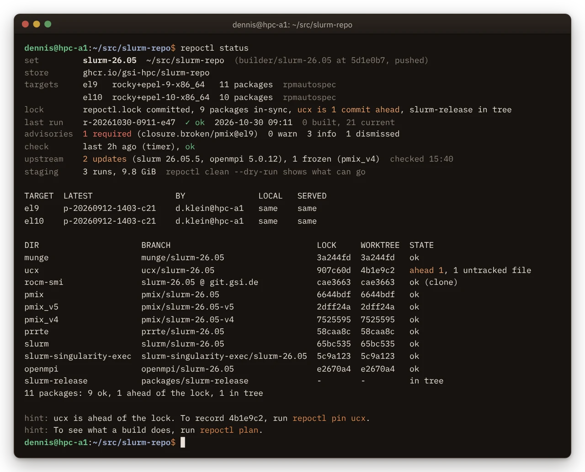
repoctl status shows the set, the targets, the lock, the last run, the snapshot of each target (latest, local copy, served), the steps that are still open, and the upstream state. The table compares the lock with each worktree. ucx is 1 commit ahead of the lock and has 1 untracked file.
Notes. The key-value block comes first, so that the important facts are in the first 8 lines. The table shows every package, also the ones that are ok, so that the output does not change shape. The hints give the next command. rocm-smi shows its branch and host, and ok (clone). The line served says same, behind or unknown: the HTTP server is a mirror of latest, and repoctl reads it with one request (05 section 8).
2. repoctl plan
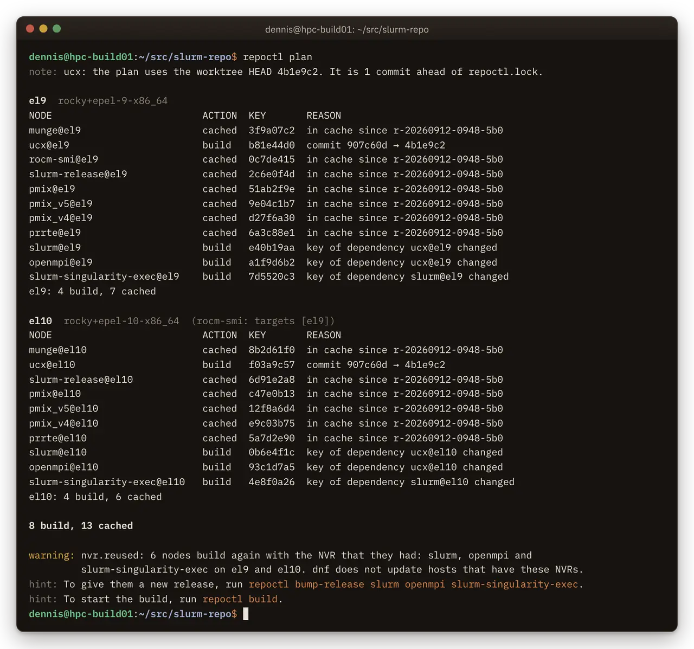
repoctl plan shows one table for each target. Each node has an action and the reason. The last lines give the total and the advisory hint for the dependents of ucx.
Notes. One cliout table per target is the grouping, because cliout has no group rows. Rows are in layer order, so that a reason refers to a node above it. The reason of a build is one of five codes (03 section 3): commit-changed with the commits (907c60d → 4b1e9c2), rebuild, new-package, new-target or forced. A node whose commit is in latest is current; a node built for this lock and not published is staged. repoctl does not rebuild a dependent by itself (03 section 5): a change in ucx can need a rebuild of slurm, so the plan ends with the advisory hint repoctl check and the command repoctl rebuild slurm --reason "…". superseded The key column, the reasons dep-key-changed and not-in-cache, and the same-NVR warning.
3. repoctl graph
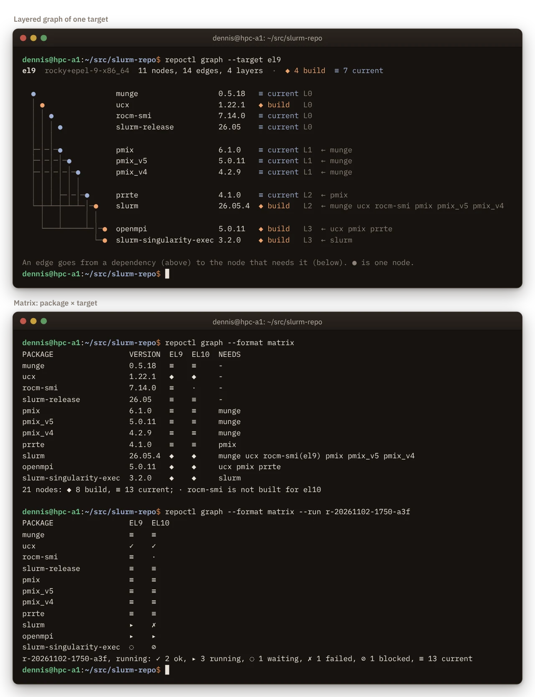
The text graph draws one row for each node, in layer order. A line goes from a dependency down to each node that needs it. The matrix shows each package on each target: the plan action (build, current, staged, skip), or the state in a run.
Notes. A boxed layout of 11 nodes with 14 edges does not fit in 110 columns with readable crossings, so the text format is a lane graph, as git log --graph draws it. ├ and ┼ mark a connection; ─│─ marks a line that only crosses. The text after each node repeats its dependencies (← munge ucx …), so that the graph is clear without the lanes and in a screen reader. The marker colour is the plan action. The matrix is a cliout table with marks only, so it stays narrow with many targets. · means "not built for this target".
4. repoctl build: live tree
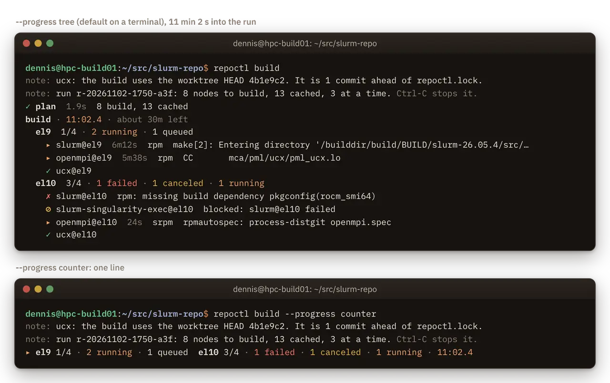
The live tree at 11 min 2 s. Each target is a step with its counts. A running node shows its elapsed time, its step and the last line of mock. slurm@el10 failed, and slurm-singularity-exec@el10 is blocked.
Notes. The plan is its own step, so current and staged nodes never become targets: the line ✓ plan 1.9s 8 build, 13 current stays above the tree. slurm-singularity-exec@el9 waits for slurm@el9; the kit counts it as 1 queued (a waiting node, not a queued run). A failure does not stop the other nodes (keep-going is the default; --fail-fast stops early). The steps el9 and el10 run at the same time and share one job limit (3 at a time) through fanoutAcquire. The kit counts a blocked node as canceled; the row text says blocked: slurm@el10 failed. The tree has 10 rows; on a 44-row terminal the kit allows 14. The time left comes from the kit's Meter: repoctl gives each node a size in seconds, from the last duration of the same package on the same target. Here: about 30 minutes left; the run ends at 41m07s. The counter display below is the same run in one line.
5. repoctl build --progress plain
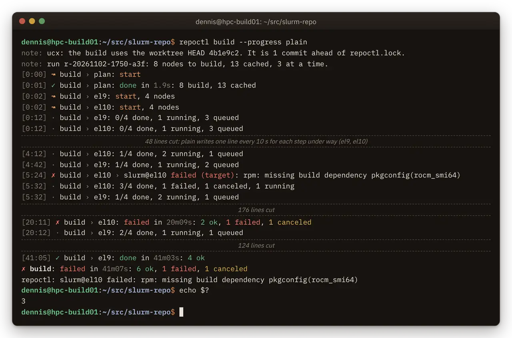
Plain lines for a CI log. Each line has the time since the start and the path of the step. The kit writes a line when a step starts or ends, when a node fails, and every 10 seconds for each step.
Notes. On a terminal each line has a mark after the time. In a pipe or a file, the same lines have no colour and no mark. The dashed rows are cuts in the figure, not output. The kit writes no line when a node ends ok (see open question 3). Exit status 3: build failed.
6. Build end summary after a failure
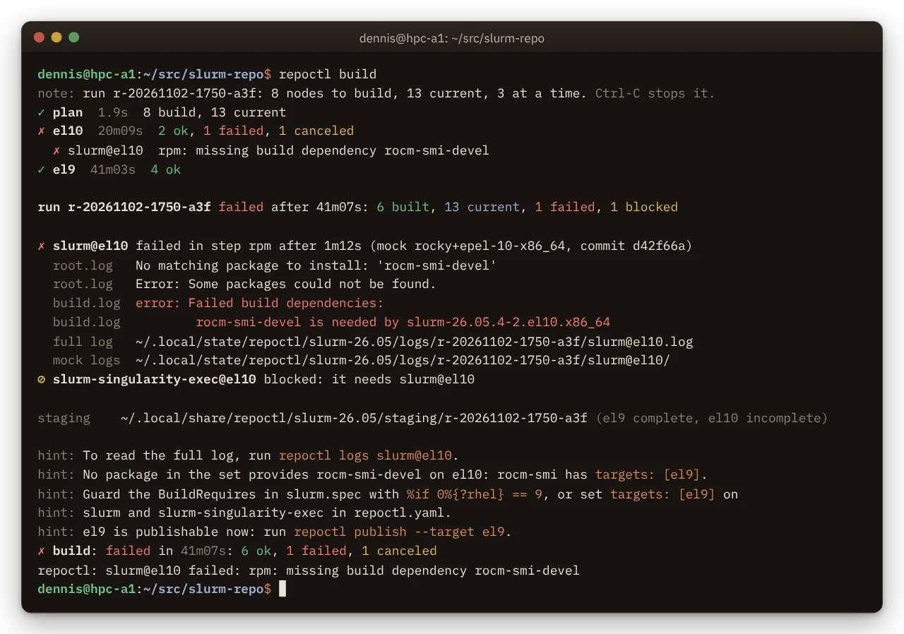
When the build ends, the tree goes away. The step lines stay. Then the report shows the failed node, the first error lines of the mock logs, the log paths, and hints for the next step.
Notes. The report is the result, on standard output; --json gives the same data. repoctl takes the error lines from mock's root.log and build.log with fixed patterns (error:, No matching package, Error:), at most 4 lines. Each line names its log file. The hint about targets: [el9] comes from a rule: a missing BuildRequires that a package of the set provides only on other targets. The kit's summary line and the one error line come last, as the go-clikit convention says. The last hint points to repoctl rebuild for the dependents of ucx that did not run. Exit status 3. The successful nodes are staged in $XDG_DATA_HOME/repoctl/slurm-26.05/staging/; the next plan keeps them.
7. repoctl logs slurm@el10
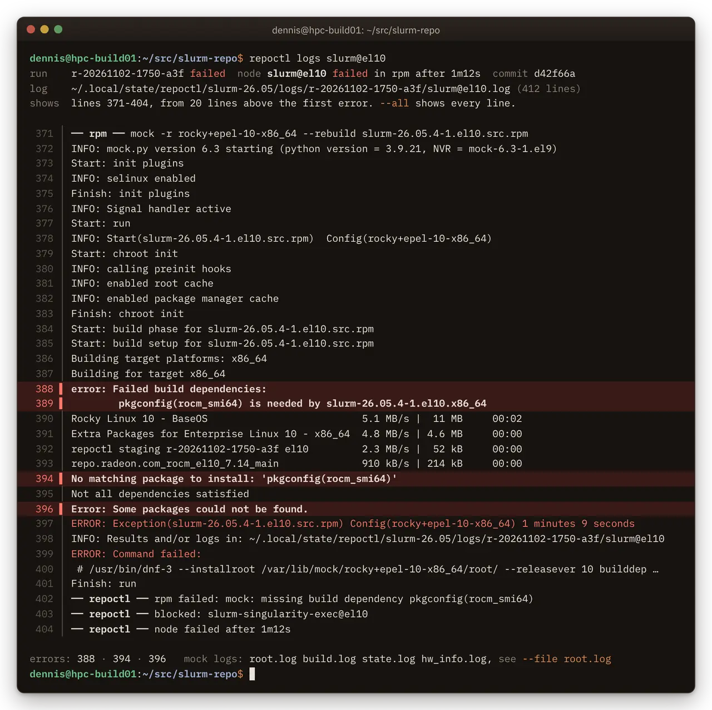
repoctl logs shows the node log from 20 lines above the first error. Error lines have a red band and a red bar in the gutter. The last line lists the error lines and the mock log files.
Notes. The node log has one section for each child process (── rpm ──) and lines of repoctl (── repoctl ──). The excerpt is the default only on a terminal and only for a failed node; in a pipe, the command writes the whole log with no colour. --all shows every line, --follow follows a running node, --file root.log shows one mock log. Text from mock goes through termtext escaping.
8. repoctl publish
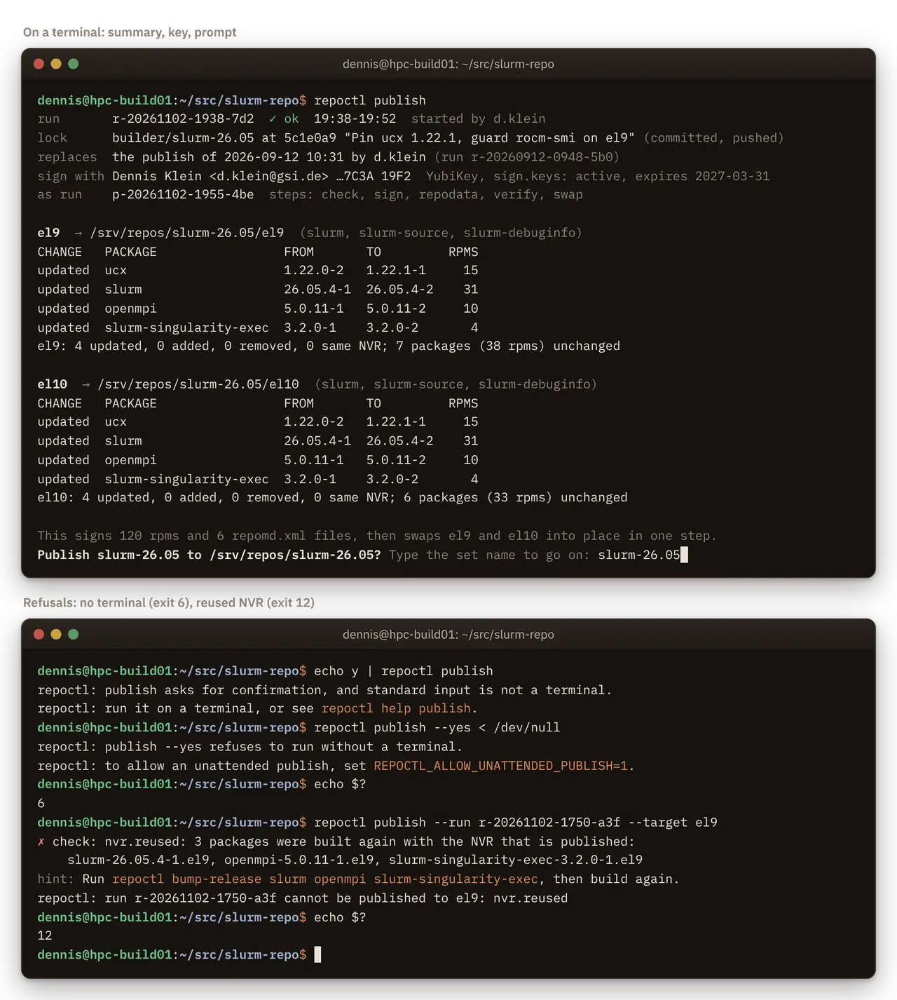
repoctl publish shows what changes on a target, the signer and the prompt. You type the set name to go on. Then eight steps run: check, sign, repodata, verify, verify-el, push, tag, cache. Without a terminal, publish refuses to run. It also refuses a target that is not publishable and a required advisory.
Notes. The publish takes the plan, not one run: each row names the run that built the node (FROM RUN). The table has one row for each source package that changes; the RPMS column counts the RPMs of the package. The line base shows latest and whether the local copy equals it; if they differ, publish stops before it signs (exit 13, state.behind). The line signer shows the key and its deployment record (05 section 11): a key without a record stops publish in gate 3. The line sign counts new RPMs, kept RPMs and re-signed RPMs; 50 RPMs carry the retiring key hpc-repo, and the note names repoctl repo resign. The prompt asks for the set name, as the web UI does. Step 6 (push) uploads only blobs that the registry does not have; step 7 (tag) moves latest and is the only step that other people can see. The last line says served: behind until the mirror job has run. With --dry-run, the output stops before the prompt. Refusals: no terminal is exit 6; a target that is not publishable is exit 12; a required advisory is exit 12 with the two hints (rebuild, or --accept-advisory). Nothing changes in any of these cases.
9. repoctl upstream
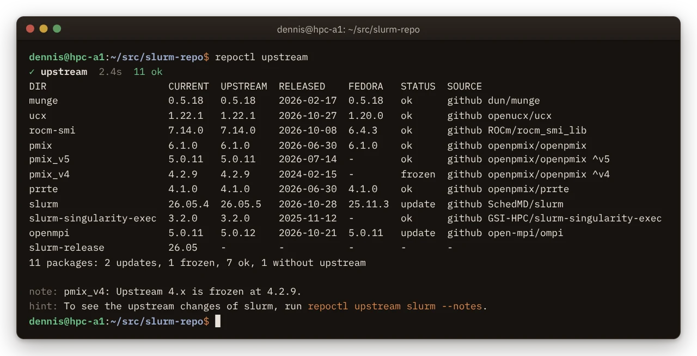
repoctl upstream compares each package with its latest upstream release and with Fedora rawhide. slurm and openmpi have an update. pmix_v4 is frozen.
Notes.CURRENT is the version of the spec in the worktree. RELEASED is the date of the upstream version. frozen comes from the package notes and a tag filter; the note is shown under the table. SOURCE is a wide column and goes away with a narrow terminal.
10. repoctl doctor
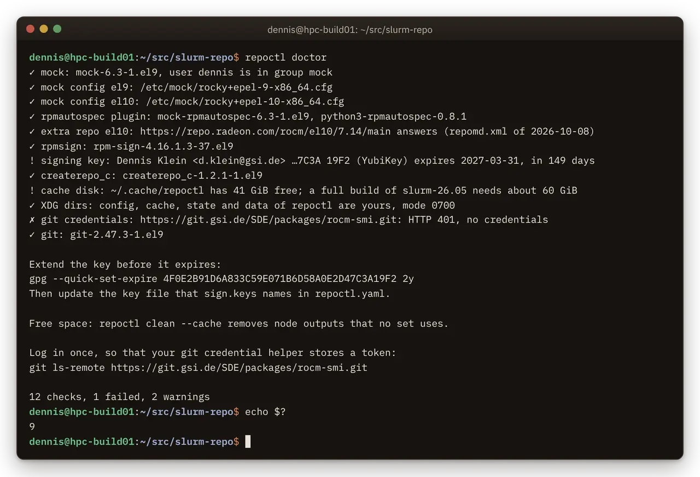
repoctl doctor checks the tools, the mock configs, the signing key and its deployment record, the registry login and scope, the daily check, the disk and the skills. It shows what to do for each warning and failure.
Notes. This is the fixed text of doctor.Write: ✓, ! and ✗, then the remediations. A key that expires in less than 180 days is a warning (sign.expiry). A missing secret key is a warning on a host that only builds. The registry.* checks ask the registry for the login, the token scopes and the visibility of each package. The git check runs git ls-remote for each external repo with the user's own credential helper. Exit status 9 (host not ready) when a check failed; with --strict, warnings give exit status 8.
11. repoctl ui
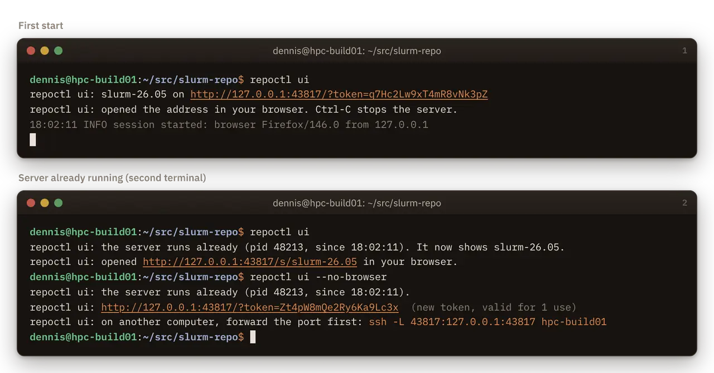
repoctl ui starts one server for each user and opens the browser. When the server runs already, a second start opens the same server. With --no-browser, repoctl ui prints the address.
Notes. The address with the token goes to the terminal and to the browser through the private file of localweb/launch, never on a command line. A second start makes a new one-use token. The UI is for the local user only (Q15): there is no ssh hint and no socket recipe. superseded The ssh port-forward line of the first version.
12. repoctl checkout
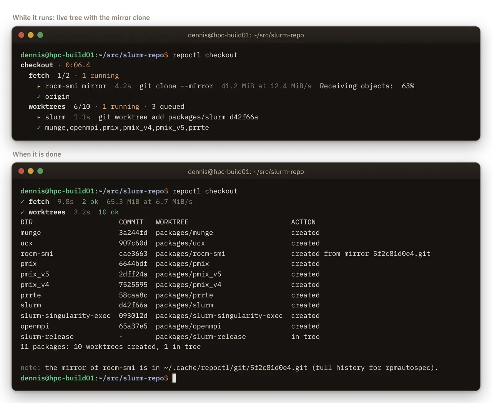
repoctl checkout fetches the set repo and the clone of each external repo (in $XDG_DATA_HOME/repoctl/git), then makes the worktrees. While the clone runs, the tree shows the bytes and the rate.
Notes. repoctl reads git clone --progress output and reports bytes as work, as sind does for docker pull. The worktrees of packages in the set repo start before the clone is complete; rocm-smi waits for its clone. The clone is not in the cache: repoctl clean --cache keeps it. A worktree that is ahead of the lock or dirty is not changed: its row says kept: ahead of the lock and the hint gives repoctl pin or --force.
Assumptions
Command span name is build (not build slurm-26.05), to keep plain lines under 110 columns. Steps of a build: plan, then one step per target id; targets of a step are nodes dir@target; sub-steps srpm, rpm, stage are calls.
Current and staged nodes are not pool targets. Blocked nodes end with the kit class canceled and the text blocked: <node> failed. repoctl's own outputs (report, matrix, runs, web UI) say blocked.
Node error text is short and fixed: rpm: missing build dependency rocm-smi-devel. The raw line error: Failed build dependencies: … appears in the excerpt and the log.
Run r-20261102-1750-a3f (section 3 timing): slurm@el10 fails at 5:24 after 1m12s; at 11:02 slurm@el9 is in rpm (6m12s), openmpi@el9 in rpm (5m38s), openmpi@el10 in srpm (24s), slurm-singularity-exec@el9 waits; el10 ends at 20:11, el9 at 41:05; the run fails at 41m07s with 6 ok, 1 failed, 1 blocked, 13 current, exit 3.
Build uses the lock. With --from worktree it uses the worktree HEAD and says so in a note when they differ; such nodes are staged but not publishable. Publish of a plan that fails on one target is possible for a complete target with --target, if its checks pass.
Publish confirmation on the CLI is "type the set name", the same as the web UI (D16). Store ghcr.io/gsi-hpc/slurm-repo/slurm-26.05-el9, signer d.klein (…41D8 0B6E, OpenPGP card), publish run p-20261103-1412-5e1 on 2026-11-03, base p-20260912-1403-c21 (aligned with the publish pages of the UI).
New flags shown: graph --format matrix [--run id], logs --all|--follow|--file, upstream --notes. The story run is r-20261102-1750-a3f in all frames; openmpi is 5.0.11-2 and slurm-singularity-exec 3.2.0-2 in its plan (the release number comes from the rebuild commits of rpmautospec). One repoctl ui server per user serves all sets.
Clone directory names use the first 10 hex digits of the URL hash (5f2c81d0e4.git).
Open questions
Theme: the kit has fixed themes (classic, aurora, ember, neon, tide). The copper mapping above needs a new kit theme, or a way for a program to give its own colours and marks. Who owns this, and is ember close enough for v1?
Words: the kit's words canceled and skipped are fixed. Can the kit let a program name a class for a count, so that the tree says 1 blocked?
Plain lines: the kit writes no line when a target ends ok, and writes progress every 10 s. For builds of 5 to 30 minutes, a CI log wants one line per node end and fewer progress lines. Ask for a PlainOptions setting?
Colour in tables: cliout escapes cells, so tables have no colour. Is this the rule for all tables, or should cliout get a fixed set of state styles?
Plan-time check: repoctl can see that rocm-smi-devel has no provider in the set for el10 before the build. Should plan warn, and should it query the chroot repos (slow) to be sure?
Updated 2026-11-03. The contract follows 03, 05 and 06. Changed: plan actions build current staged skip and five reason codes; no node key, no cached and no queued state; the kinds Advisory, AdvisoryList, Snapshot, SnapshotList, SignerList and OnboardReport; the publish steps check sign repodata verify verify-el push tag cache; exit code 13; one MCP tool table with the modes --tools read|all; the skills with modes. The files in contract/schema and contract/examples are the source; the blocks below are copies. A test validates the examples against the schemas. Old text carries superseded.
This section defines what programs read from repoctl. Four consumers depend on it: the generic skills,
the MCP server, the web UI and CI scripts. One Go package (internal/api) holds the types.
The CLI, the MCP server and the web UI encode the same types. A test generates the JSON Schemas from these
types and compares them with the checked-in files, as go-clikit does with its golden event log. A second
test validates every example in this section against the schemas.
Decisions in short
Every --json result is one envelope: apiVersion, kind,
metadata, items[], warnings[], errors[].
items is always an array. The MCP server returns the same envelope as
structuredContent.
A run writes two JSONL files. The run journal (runs/<run>.jsonl)
holds repoctl domain events: plan reasons, node states, NVRs, artifacts. The progress log
(runs/<run>.progress.jsonl) is the unchanged go-clikit event log v1. Both share the
run id and the W3C trace id. Every journal event names the go-clikit span it belongs to.
The go-clikit log has a closed field set and never holds output text. It cannot carry plan reasons or
NVRs. For this reason, repoctl does not extend it. It writes the journal beside it.
The web UI, repoctl runs [RUN] --follow, repoctl runs and the MCP tools fold the
journal with one Go function (journal.Fold). Thus they always show the same state.
MCP tools follow sind: names repoctl_<command>[_<sub>], read-only
annotations, repoctl mcp start. There is no publish, sign, clean, push or restore tool.
repoctl mcp start --tools read offers only the read tools (UX-15). repoctl_build starts a detached run into staging and returns the run id.
repoctl_run_wait follows it with MCP progress notifications.
"Needs human": a refusal that only a person can resolve is a Problem with a humanAction
(the exact command). Its code and exit status name the cause: lock.dirty (5),
publish.needs-confirmation (6), publish.not-ready (12), state.behind (13). MCP sets
isError: true and starts the text with NEEDS HUMAN:.
A rebuild (D8): repoctl rebuild DIR --reason makes an empty commit, so the NVR is new and the plan reason is rebuild. superseded Same-NVR rebuilds with nvr.reused on a normal run and bump-release; nvr.reused stays only as a publish check for hand-made input.
Plan, not run: publish takes the nodes with action staged of the plan. A Run lists the target in publishable when every node is current or staged, and in publishBlockers otherwise.
Advisories (06): the check writes Advisory objects. A required advisory blocks the publish of its closure. MCP reads them and never dismisses or accepts one.
Figure C1. One Reporter feeds three files and the in-process Bus. Copper arrows carry repoctl
domain events (journal). Grey arrows carry go-clikit spans or raw log text. Every reader that shows node
state folds the journal with the same function.
C.1 Output envelope (--json)
Rules for every command:
With --json, the command writes exactly one JSON document to stdout. It uses
cliout.WriteJSON: two-space indent, a final newline, control runes escaped.
Progress never goes to stdout. --json does not change --progress. In a pipe
or in CI, set --progress plain or none for a clean stderr.
items is always an array, also for one object. kind names the type of each
element. A consumer reads .items[] for every command.
Exit status 0 means errors is empty. A non-empty errors means a non-zero
exit status; each error carries the exitCode it causes. Warnings never change the exit
status.
A command that fails still writes an envelope, with the items it has. Example: a failed build writes
the Run with the failed node.
Units: times are RFC 3339 UTC with milliseconds and Z. Durations are integer
milliseconds (durationMs). Sizes are bytes (sizeBytes). Paths are absolute.
Commits have 40 hex digits; a UI shortens them, the contract does not. Digests (snapshots, advisory facts) are
sha256: + 64 hex digits. superseded Node keys.
Text fields (message, hint, reason, log lines, commit
subjects) are for people. Never match on them. Match on code and enum values.
Streams are not envelopes. repoctl runs RUN --follow --json writes journal lines
(JSON Lines, schema in C.5). repoctl logs RUN NODE --follow --json writes one NodeLog line
object per line; without --json it writes raw log text.
repoctl schema [NAME] is the only exception: it prints a JSON Schema without an
envelope. NAME: config (default), lock, user-config,
output, events, or one kind (Plan, Run, …).
A usage error (exit 2) writes no envelope. Every other failure writes one, with the items it has.
source builtin or set, version, installed copies, conflict
version
Version
1
apiVersions, journal and event log versions
Problems.errors[] and warnings[] hold the same Problem
object: code (stable, dotted), message, optional node,
dir, target, run, path, hint and
humanAction. The code list is open: a consumer treats an unknown code as a generic error or
warning.
Exit status. The cli-ref area owns the list. The contract carries it in
errors[].exitCode, Run.exitCode and the MCP _meta["repoctl/exitCode"].
One version string, repoctl/v1alpha1, covers repoctl.yaml,
repoctl.lock, the --json output and the MCP structured content. The run journal
has its own integer v, with the same rules as the go-clikit event log: a change of meaning
bumps v; an added key or value does not.
Stage
When
What may change
Deprecation
v1alpha1
repoctl 0.x (now)
Add fields, kinds, enum values and problem codes in any release.
Rename or remove a field in a minor release, named in the release notes.
When it is cheap, the old field stays for one minor release and the schema marks it
"deprecated": true.
v1beta1
when the web UI and the skills have shipped
Add only, except a removal that went through deprecation.
Two minor releases with both fields. warnings[] gets code deprecated when a consumer pins the old version.
v1
repoctl 1.0
Add only. A breaking change starts v2.
repoctl writes v1 and v2 for one major release. --api-version repoctl/v1 or REPOCTL_API_VERSION picks it.
Rules for consumers:
Check apiVersion for string equality. If it differs, stop and say so.
Ignore fields you do not know.
Closed enums: NodeState, Step, PlanAction, RunState, Kind, CheckStatus, AdvisoryLevel. From
v1beta1, a new value in a closed enum is a breaking change.
Open enums: PlanReasonCode, FailureClass, AdvisoryCode, problem codes, journal event types,
HumanAction.action. Treat an unknown value as "other" and show the message.
The generic skills and the web UI ship in the same binary as the CLI. They cannot drift.
repoctl doctor warns (skills.version) when an installed copy of a skill is
older than the binary.
CI scripts pin the repoctl version and check
jq -e '.apiVersion == "repoctl/v1alpha1"'.
CSS class st-<state> (st-cached keeps its slate-blue for current). waiting = a dependency is not done, or all dependencies are done and no job slot is free. blocked = a dependency failed. current and staged are plan states: a node has them at plan.ready and never leaves them. supersededqueued (there is no queue) and cached.
Step
srpmrpmstage
Sub-steps of
running. stage = copy to staging + createrepo_c --update.
PlanAction
buildcurrentstagedskip
current = the commit is in latest. staged = built for this lock, not published; fromRun names the run. skip has skipBecause: not-selected or target-excluded.
PlanReasonCode
commit-changedrebuildnew-packagenew-targetforced
A build node has one or more. Detail fields: from, to (commits), subject, commits, text (rebuild: the reason). supersededdep-key-changed, macros-changed, mock-config-changed, not-in-cache.
RunState
planningrunningokfailedcanceledabandoned
abandoned = no run.finished and the
set lock is not held by the run's process. There is no queued run state.
Set from the
step and from patterns in the mock logs. triage-build picks its playbook by class. host = the host failed, not the package (no space, no mock group): a retry can help after the fix.
superseded The state queued. A build node starts waiting; it becomes running when its dependencies are done and a job slot is free. After a run, the nodes with state ok are staged in the next plan.
C.4 JSON Schemas (draft 2020-12)
Bundle $id: https://gsi-hpc.github.io/repoctl/schema/v1alpha1/output.json.
repoctl schema --output prints it. The MCP resource repoctl://schema/output
serves it. Each block below is a part of $defs, printed compactly. The blocks are copies of
contract/schema/output.schema.json and contract/schema/events.schema.json; the files win if they differ.
changed The defs Key and KeyInputs are gone. The defs Digest, Advisory, AdvisoryList, Snapshot, SnapshotList, SignerList and OnboardReport are new.
Envelope, metadata, problems
"Envelope": {
"type": "object",
"required": ["apiVersion", "kind", "metadata", "items", "warnings", "errors"],
"additionalProperties": false,
"properties": {
"apiVersion": {"const": "repoctl/v1alpha1"},
"kind": {"$ref": "#/$defs/Kind"},
"metadata": {"$ref": "#/$defs/Metadata"},
"items": {"type": "array"},
"warnings": {"type": "array", "items": {"$ref": "#/$defs/Problem"}},
"errors": {"type": "array", "items": {"$ref": "#/$defs/Problem"}}
},
"allOf": [
{
"if": {"properties": {"kind": {"const": "Status"}}},
"then": {"properties": {"items": {"items": {"$ref": "#/$defs/Status"}, "maxItems": 1}}}
},
{
"if": {"properties": {"kind": {"const": "Package"}}},
"then": {"properties": {"items": {"items": {"$ref": "#/$defs/Package"}}}}
},
{
"if": {"properties": {"kind": {"const": "Node"}}},
"then": {"properties": {"items": {"items": {"$ref": "#/$defs/Node"}}}}
},
{
"if": {"properties": {"kind": {"const": "Graph"}}},
"then": {"properties": {"items": {"items": {"$ref": "#/$defs/Graph"}}}}
},
{
"if": {"properties": {"kind": {"const": "Plan"}}},
"then": {"properties": {"items": {"items": {"$ref": "#/$defs/Plan"}, "maxItems": 1}}}
},
{
"if": {"properties": {"kind": {"const": "Run"}}},
"then": {"properties": {"items": {"items": {"$ref": "#/$defs/Run"}}}}
},
{
"if": {"properties": {"kind": {"const": "NodeLog"}}},
"then": {"properties": {"items": {"items": {"$ref": "#/$defs/NodeLog"}}}}
},
{
"if": {"properties": {"kind": {"const": "RepoContents"}}},
"then": {"properties": {"items": {"items": {"$ref": "#/$defs/RepoContents"}}}}
},
{
"if": {"properties": {"kind": {"const": "RepoDiff"}}},
"then": {"properties": {"items": {"items": {"$ref": "#/$defs/RepoDiff"}}}}
},
{
"if": {"properties": {"kind": {"const": "Upstream"}}},
"then": {"properties": {"items": {"items": {"$ref": "#/$defs/Upstream"}}}}
},
{
"if": {"properties": {"kind": {"const": "DoctorReport"}}},
"then": {"properties": {"items": {"items": {"$ref": "#/$defs/DoctorReport"}, "maxItems": 1}}}
},
{
"if": {"properties": {"kind": {"const": "Lock"}}},
"then": {"properties": {"items": {"items": {"$ref": "#/$defs/LockEntry"}}}}
},
{
"if": {"properties": {"kind": {"const": "Version"}}},
"then": {"properties": {"items": {"items": {"$ref": "#/$defs/Version"}, "maxItems": 1}}}
},
{
"if": {"properties": {"kind": {"const": "File"}}},
"then": {"properties": {"items": {"items": {"$ref": "#/$defs/File"}}}}
},
{
"if": {"properties": {"kind": {"const": "Clean"}}},
"then": {"properties": {"items": {"items": {"$ref": "#/$defs/Clean"}}}}
},
{
"if": {"properties": {"kind": {"const": "Config"}}},
"then": {"properties": {"items": {"items": {"$ref": "#/$defs/Config"}}}}
},
{
"if": {"properties": {"kind": {"const": "Path"}}},
"then": {"properties": {"items": {"items": {"$ref": "#/$defs/Path"}}}}
},
{
"if": {"properties": {"kind": {"const": "Skill"}}},
"then": {"properties": {"items": {"items": {"$ref": "#/$defs/Skill"}}}}
},
{
"if": {"properties": {"kind": {"const": "Advisory"}}},
"then": {"properties": {"items": {"items": {"$ref": "#/$defs/Advisory"}}}}
},
{
"if": {"properties": {"kind": {"const": "AdvisoryList"}}},
"then": {"properties": {"items": {"items": {"$ref": "#/$defs/AdvisoryList"}, "maxItems": 1}}}
},
{
"if": {"properties": {"kind": {"const": "Snapshot"}}},
"then": {"properties": {"items": {"items": {"$ref": "#/$defs/Snapshot"}}}}
},
{
"if": {"properties": {"kind": {"const": "SnapshotList"}}},
"then": {"properties": {"items": {"items": {"$ref": "#/$defs/SnapshotList"}}}}
},
{
"if": {"properties": {"kind": {"const": "SignerList"}}},
"then": {"properties": {"items": {"items": {"$ref": "#/$defs/SignerList"}, "maxItems": 1}}}
},
{
"if": {"properties": {"kind": {"const": "OnboardReport"}}},
"then": {"properties": {"items": {"items": {"$ref": "#/$defs/OnboardReport"}, "maxItems": 1}}}
}
]
},
"Kind": {
"description": "The kind of every element of items. Closed: a new kind comes with a new command result. Target is not a kind of its own; Status embeds it. AdvisoryList, SnapshotList and SignerList are one item that holds a list and the facts about it (the check, the chain, the current key).",
"enum": [
"Status", "Package", "Node", "Graph", "Plan", "Run", "NodeLog", "RepoContents", "RepoDiff", "Upstream",
"DoctorReport", "Lock", "Version", "File", "Clean", "Config", "Path", "Skill", "Advisory",
"AdvisoryList", "Snapshot", "SnapshotList", "SignerList", "OnboardReport"
]
},
"Metadata": {
"type": "object",
"required": ["command", "generatedAt", "repoctl"],
"properties": {
"set": {
"type": "string",
"description": "Set name from repoctl.yaml. Absent for commands that run outside a set (version, schema)."
},
"setDir": {"type": "string", "description": "Absolute path of the set directory."},
"command": {"type": "string", "description": "The command path, e.g. \"repo diff\". Not the argument vector."},
"generatedAt": {"$ref": "#/$defs/Time"},
"repoctl": {
"type": "object",
"required": ["version"],
"properties": {"version": {"type": "string"}, "commit": {"type": "string"}}
},
"run": {"$ref": "#/$defs/RunId"},
"targets": {
"type": "array",
"items": {"$ref": "#/$defs/TargetId"},
"description": "Targets the command looked at, after --target filters."
},
"trace": {"$ref": "#/$defs/TraceRef"}
}
},
"Problem": {
"description": "One error or warning. code is the stable part; message is for people and may change in any release. A problem with humanAction is a step only a person may take ('needs human').",
"type": "object",
"required": ["code", "message"],
"properties": {
"code": {"$ref": "#/$defs/ProblemCode"},
"message": {"type": "string"},
"node": {"$ref": "#/$defs/NodeId"},
"dir": {"$ref": "#/$defs/Dir"},
"target": {"$ref": "#/$defs/TargetId"},
"run": {"$ref": "#/$defs/RunId"},
"path": {"type": "string"},
"hint": {"type": "string", "description": "One sentence: what to do next."},
"humanAction": {"$ref": "#/$defs/HumanAction"},
"exitCode": {
"type": "integer",
"description": "The exit status this problem gives the command (cli-ref exit codes). Errors only."
}
}
},
"ProblemCode": {
"description": "Open enum: a reader treats an unknown code as a generic error or warning. Codes are dotted: area.condition.",
"type": "string",
"pattern": "^[a-z][a-z0-9-]*(\\.[a-z0-9-]+)*$",
"examples": [
"advisory.not-dismissable", "advisory.open", "advisory.unknown", "branch.exists-remote",
"branch.start-missing", "cancel.foreign-run", "check.failed", "check.never", "check.no-linger",
"check.stale", "check.timer-off", "config.invalid", "config.unknown-key", "dep.not-for-target",
"dep.unresolved", "deprecated", "git.fetch-failed", "git.mirror-unpushed", "git.unreachable",
"graph.cycle", "graph.dynamic-buildrequires", "host.not-ready", "journal.sampling-stopped",
"lock.dirty", "lock.missing-package", "lock.orphaned", "lock.stale", "lock.unpushed",
"mcp.tool-not-allowed", "mock.config-missing", "mock.unavailable", "node.blocked", "node.failed",
"nvr.removed", "nvr.reused", "prune.not-retired", "publish.needs-confirmation",
"publish.not-publishable", "publish.not-ready", "publish.nothing-to-publish",
"publish.unattended-refused", "registry.denied", "registry.unreachable", "run.not-finished",
"run.not-found", "run.staging-missing", "run.stale", "run.unpinned", "set.busy", "sign.card-absent",
"sign.failed", "sign.key-expiring", "sign.key-format", "sign.key-in-use", "sign.key-not-trusted",
"sign.keyfile-stale", "sign.locked", "sign.no-key", "sign.no-pinentry", "sign.not-active",
"sign.not-deployed", "sign.removed-signer", "sign.trust-change", "sign.unknown-signer",
"skills.version-mismatch", "snapshot.diverged", "snapshot.push-failed", "state.behind",
"state.unpushed", "upstream.no-match", "upstream.rate-limited", "upstream.unreachable",
"verify.el-failed", "verify.failed", "worktree.missing"
]
},
"HumanAction": {
"description": "A step that repoctl, the MCP server or a skill must not take. The agent stops and asks the person.",
"type": "object",
"required": ["action", "reason"],
"properties": {
"action": {
"enum": [
"publish", "sign", "push", "commit-worktree", "resolve-dirty-worktree", "commit-lock", "confirm",
"edit-config", "install-tool", "cancel-foreign-run", "unlock", "approve", "repo-push", "restore",
"prune", "gc", "resign", "sign-deployed", "trust-change", "accept-advisory", "dismiss-advisory"
]
},
"reason": {"type": "string"},
"command": {"type": "string", "description": "The exact command the person can run."},
"ui": {"type": "string", "description": "Path in the web UI, e.g. /s/slurm-26.05/publish."}
}
}
Scalars and enums
"Time": {"type": "string", "format": "date-time", "description": "RFC 3339, UTC, Z suffix, millisecond precision."},
"DurationMs": {"type": "integer", "minimum": 0},
"Dir": {"type": "string", "pattern": "^[A-Za-z0-9][A-Za-z0-9._+-]*$"},
"TargetId": {"type": "string", "pattern": "^[a-z0-9][a-z0-9._-]*$"},
"NodeId": {
"type": "string",
"pattern": "^[A-Za-z0-9][A-Za-z0-9._+-]*@[a-z0-9][a-z0-9._-]*$",
"description": "<dir>@<target>, e.g. slurm@el9."
},
"RunId": {
"type": "string",
"pattern": "^[rp]-[0-9]{8}-[0-9]{4}-[0-9a-z]{3}$",
"description": "r- for a build run, p- for a publish run."
},
"Commit": {"type": "string", "pattern": "^[0-9a-f]{40}$"},
"Digest": {
"type": "string",
"pattern": "^sha256:[0-9a-f]{64}$",
"description": "An OCI digest: sha256: and 64 hex digits. Used for snapshots (manifest digest) and advisory facts."
},
"Sha256": {"type": "string", "pattern": "^[0-9a-f]{64}$"},
"TraceRef": {
"type": "object",
"required": ["traceId"],
"properties": {
"traceId": {"type": "string", "pattern": "^[0-9a-f]{32}$"},
"spanId": {"type": "string", "pattern": "^[0-9a-f]{16}$"},
"parentSpanId": {"type": "string", "pattern": "^[0-9a-f]{16}$"}
}
},
"NodeState": {
"enum": ["waiting", "running", "ok", "current", "staged", "failed", "blocked", "canceled"],
"description": "waiting: not started (a dependency or a job slot is missing; there is no build queue). current and staged are plan states: they never occur as a state change in a run."
},
"Step": {"enum": ["srpm", "rpm", "stage"]},
"PlanAction": {
"enum": ["build", "current", "staged", "skip"],
"description": "build: no build for this commit and target. current: the commit is in latest. staged: built for this lock and not published. skip: not selected, or the target is not in the package."
},
"PlanReasonCode": {
"enum": ["commit-changed", "rebuild", "new-package", "new-target", "forced"],
"description": "Why a node has action build (03 section 3). A rebuild of a dependent is never a reason by itself: advisories say that a rebuild may be needed."
},
"RunState": {
"enum": ["planning", "running", "ok", "failed", "canceled", "abandoned"],
"description": "There is no queued state: repoctl has no build queue. abandoned: the process of the run died; a later command marked it."
},
"RunOrigin": {"enum": ["cli", "ui", "mcp", "ci"]},
"FailureClass": {
"enum": ["srpm", "builddep", "build", "stage", "mock", "host", "timeout", "canceled", "internal"],
"description": "host: the failure is in the host, not in the package: mock cannot start, no disk space, the mock group is missing. A retry can help after the host is fixed."
},
"RepoKind": {"enum": ["binary", "source", "debuginfo"]},
"UpstreamStatus": {"enum": ["up-to-date", "update-available", "ahead", "frozen", "unknown"]},
"LockState": {
"enum": ["in-sync", "ahead", "behind", "diverged", "dirty", "missing", "unpinned", "orphaned"],
"description": "unpinned: the package is in repoctl.yaml and has no lock line. orphaned: the lock line has no package in repoctl.yaml (06 section 10)."
},
"CheckStatus": {"enum": ["ok", "warning", "failed"], "description": "The three words of go-clikit doctor.Status."}
"Signer": {
"type": "object",
"required": ["uid", "fingerprint", "keyId"],
"description": "Who signed. UIs show uid + fingerprint tail.",
"properties": {
"uid": {"type": "string", "description": "e.g. Dennis Klein <d.klein@gsi.de>"},
"fingerprint": {
"type": "string",
"pattern": "^[0-9A-F]{40}$",
"description": "Full OpenPGP v4 fingerprint, upper-case hex, no spaces."
},
"keyId": {"type": "string", "description": "id of the key in sign.keys[] of repoctl.yaml."},
"backend": {"type": "string", "description": "sign.backend of the user config, e.g. gpg."},
"state": {"enum": ["active", "retiring", "removed"]},
"deployed": {"type": "boolean", "description": "keys/deployed.yaml has a record for the key."}
}
},
"Snapshot": {
"type": "object",
"description": "One OCI manifest: all files of one set and target (05 section 6).",
"required": ["target", "publish", "digest", "kind"],
"properties": {
"target": {"$ref": "#/$defs/TargetId"},
"store": {"type": "string", "description": "ghcr.io/gsi-hpc/slurm-repo/slurm-26.05-el9"},
"tags": {"type": "array", "items": {"type": "string"}, "description": "latest and the publish id."},
"publish": {"type": "string", "description": "Publish id, e.g. p-20261103-1412-5e1."},
"digest": {"$ref": "#/$defs/Digest"},
"parent": {"$ref": "#/$defs/Digest"},
"kind": {"enum": ["publish", "restore", "prune", "resign", "import"]},
"setCommit": {"$ref": "#/$defs/Commit"},
"signer": {"type": "string", "description": "Full fingerprint."},
"user": {"type": "string"},
"host": {"type": "string"},
"created": {"$ref": "#/$defs/Time"},
"repoctl": {"type": "string"},
"rpms": {"type": "integer"},
"removed": {"type": "integer", "description": "Entries in removed[] of the manifest."},
"blobs": {
"type": "object",
"properties": {"new": {"type": "integer"}, "known": {"type": "integer"}, "bytes": {"type": "integer"}}
},
"local": {"enum": ["same", "behind", "unpushed", "none"]},
"served": {"enum": ["same", "behind", "unknown"]},
"unattended": {"type": "boolean"},
"accepted": {
"type": "array",
"items": {"type": "string"},
"description": "Advisory ids that the person accepted for this publish."
}
}
},
"SnapshotList": {
"type": "object",
"required": ["target", "snapshots"],
"properties": {
"target": {"$ref": "#/$defs/TargetId"},
"snapshots": {
"type": "array",
"items": {"$ref": "#/$defs/Snapshot"},
"description": "Newest first. parent chains them."
}
}
},
"SignerList": {
"type": "object",
"required": ["keys"],
"properties": {
"current": {"type": "string", "description": "sign.key of this host."},
"keys": {
"type": "array",
"items": {
"allOf": [
{"$ref": "#/$defs/Signer"},
{
"type": "object",
"properties": {
"expires": {"$ref": "#/$defs/Time"},
"deployment": {
"oneOf": [
{"type": "null"},
{
"type": "object",
"properties": {
"release": {"type": "object", "additionalProperties": {"type": "string"}},
"confirmedBy": {"type": "string"},
"at": {"$ref": "#/$defs/Time"}
}
}
]
},
"rpms": {
"type": "object",
"additionalProperties": {"type": "integer"},
"description": "Per target: RPMs in latest that this key signed."
}
}
}
]
}
}
}
},
"OnboardReport": {
"type": "object",
"required": ["key", "steps"],
"properties": {
"key": {"type": "string"},
"steps": {
"type": "array",
"items": {
"type": "object",
"required": ["n", "name", "ok"],
"properties": {
"n": {"type": "integer"},
"name": {"type": "string"},
"ok": {"type": "boolean"},
"detail": {"type": "string"}
}
}
},
"next": {"type": "string", "description": "The command that the person runs next."}
}
},
"NextStep": {
"type": "object",
"required": ["action", "human", "reason"],
"properties": {
"action": {"enum": ["triage", "fix-spec", "rebuild", "pin", "build", "publish", "cancel"]},
"human": {
"type": "boolean",
"description": "true: only a person may take this step (publish). Agents show it and stop."
},
"reason": {"type": "string"},
"command": {"type": "string"},
"ui": {"type": "string"}
}
}
C.5 Event log
Files
File
Format
Writer
Readers
~/.local/state/repoctl/<set>/runs/<run>.jsonl
run journal v1 (below)
the process that owns the run (holds $XDG_RUNTIME_DIR/repoctl/<set>.lock)
web UI, logs, runs, MCP, skills
…/runs/<run>.progress.jsonl
go-clikit event log v1, run = run id
progress.Log on the run's Bus
MCP progress (Forwarder), bug reports, CI artifacts
…/logs/<run>/<node>.log
text; step markers ==> repoctl: step rpm started
node runner (tee of mock stdout and stderr, then root.log and build.log appended on failure)
logs, web UI log view, repoctl_logs
…/activity.jsonl (+ .1)
go-clikit event log v1
commands without a run (plan, checkout, pin, upstream, doctor) via cliprogress.Options.DefaultLog
web UI "activity", bug reports
--progress-log <file> (REPOCTL_PROGRESS_LOG)
go-clikit event log v1
any command, on request
CI artifacts
Why two formats: the go-clikit log is a closed interface. Its fields are progress.Fields
and nothing else, and it never writes the text of an output line. repoctl must record plan reasons, commits,
NVRs, artifacts, advisories and error excerpts. These go into the journal. The progress log stays unchanged, so every
go-clikit reader (Reducer, Forwarder, mcpprogress) works with it.
Journal line
Common keys on every line: v (1), run, seq, time,
type. Optional: span and parent (go-clikit span ids, 16 hex),
node. A key whose value is empty or zero is left out, except exitCode.
sampled: at most 1 per node per 2 s, and every line that matches an error pattern
node, step, line (≤ 512 B), offset, dropped, level
(none: text never enters the Bus)
artifact.added
each RPM or SRPM copied to staging
node, kind, repo, nvra, file, sizeBytes, sha256
inside call stage
staging.updated
after createrepo_c --update
target, repo, packages, revision
hidden call
warning
any time
code, message, node, target
-
run.cancel-requested
SIGINT, UI button, MCP cancel
by, user, reason
-
run.finished
last line
state, counts, durationMs, exitCode, publishable
command span end
publish.started / publish.step / publish.finished
publish run (p-…)
fromRuns, targets, by, dryRun, signer (uid, full fingerprint, set key id), base (digest of latest per target), unattended; step = check, sign, repodata, verify, verify-el, push, tag, cache; finished: snapshots (tag and digest per target)
{
"$schema": "https://json-schema.org/draft/2020-12/schema",
"$id": "https://gsi-hpc.github.io/repoctl/schema/v1alpha1/events.json",
"title": "repoctl run journal line (runs/<run>.jsonl), format v1",
"type": "object",
"required": ["v", "run", "seq", "time", "type"],
"properties": {
"v": {"const": 1},
"run": {"$ref": "output.json#/$defs/RunId"},
"seq": {"type": "integer", "minimum": 1, "description": "Gapless per run, from 1. The one order of the run."},
"time": {"$ref": "output.json#/$defs/Time"},
"type": {"$ref": "#/$defs/EventType"},
"span": {
"type": "string",
"pattern": "^[0-9a-f]{16}$",
"description": "go-clikit span id this event is about (same id as in runs/<run>.progress.jsonl)."
},
"parent": {"type": "string", "pattern": "^[0-9a-f]{16}$"},
"node": {"$ref": "output.json#/$defs/NodeId"}
},
"allOf": [
{"if": {"properties": {"type": {"const": "run.started"}}}, "then": {"$ref": "#/$defs/RunStarted"}},
{"if": {"properties": {"type": {"const": "plan.ready"}}}, "then": {"$ref": "#/$defs/PlanReady"}},
{"if": {"properties": {"type": {"const": "node.state"}}}, "then": {"$ref": "#/$defs/NodeStateEvent"}},
{"if": {"properties": {"type": {"const": "node.step"}}}, "then": {"$ref": "#/$defs/NodeStepEvent"}},
{"if": {"properties": {"type": {"const": "node.log"}}}, "then": {"$ref": "#/$defs/NodeLogEvent"}},
{"if": {"properties": {"type": {"const": "artifact.added"}}}, "then": {"$ref": "#/$defs/ArtifactAdded"}},
{
"if": {"properties": {"type": {"const": "staging.updated"}}},
"then": {"$ref": "#/$defs/StagingUpdated"}
},
{"if": {"properties": {"type": {"const": "warning"}}}, "then": {"$ref": "#/$defs/WarningEvent"}},
{
"if": {"properties": {"type": {"const": "run.cancel-requested"}}},
"then": {"$ref": "#/$defs/CancelRequested"}
},
{"if": {"properties": {"type": {"const": "run.finished"}}}, "then": {"$ref": "#/$defs/RunFinished"}},
{
"if": {"properties": {"type": {"const": "publish.started"}}},
"then": {"$ref": "#/$defs/PublishStarted"}
},
{"if": {"properties": {"type": {"const": "publish.step"}}}, "then": {"$ref": "#/$defs/PublishStep"}},
{
"if": {"properties": {"type": {"const": "publish.finished"}}},
"then": {"$ref": "#/$defs/PublishFinished"}
},
{"if": {"properties": {"type": {"const": "advisory"}}}, "then": {"$ref": "#/$defs/AdvisoryEvent"}},
{"if": {"properties": {"type": {"const": "advisory.gone"}}}, "then": {"$ref": "#/$defs/AdvisoryGone"}},
{
"if": {"properties": {"type": {"const": "advisory.accepted"}}},
"then": {"$ref": "#/$defs/AdvisoryAccepted"}
}
],
"$defs": {
"EventType": {
"description": "Open: a reader skips a line whose type it does not know.",
"enum": [
"run.started", "plan.ready", "node.state", "node.step", "node.log", "artifact.added",
"staging.updated", "warning", "run.cancel-requested", "run.finished", "publish.started",
"publish.step", "publish.finished", "advisory", "advisory.gone", "advisory.accepted"
]
},
"RunStarted": {
"required": ["set", "kind", "trace", "origin"],
"properties": {
"set": {"type": "string"},
"kind": {"enum": ["build", "publish", "check"]},
"trace": {"type": "string", "pattern": "^[0-9a-f]{32}$"},
"traceParent": {
"type": "string",
"pattern": "^[0-9a-f]{16}$",
"description": "Span of the program that started this run (TRACEPARENT), e.g. the MCP server or the web UI."
},
"origin": {
"type": "object",
"required": ["via", "user", "host"],
"properties": {
"via": {"$ref": "output.json#/$defs/RunOrigin"},
"user": {"type": "string"},
"host": {"type": "string"},
"pid": {"type": "integer"},
"client": {"type": "string"}
}
},
"selection": {"$ref": "output.json#/$defs/Selection"},
"setCommit": {"$ref": "output.json#/$defs/Commit"},
"repoctl": {"type": "string"},
"publishKind": {"enum": ["publish", "restore", "prune", "resign"]}
}
},
"PlanReady": {
"description": "Sets every node first state: build nodes start waiting (a node with all dependencies done starts when a job slot is free), current and staged nodes keep their plan state. No node.state line is written for these first states.",
"required": ["summary", "build", "current"],
"properties": {
"summary": {
"type": "object",
"required": ["build", "current", "staged", "skip"],
"properties": {
"build": {"type": "integer"},
"current": {"type": "integer"},
"staged": {"type": "integer"},
"skip": {"type": "integer"}
}
},
"build": {
"type": "array",
"items": {
"type": "object",
"required": ["node", "reasons"],
"properties": {
"node": {"$ref": "output.json#/$defs/NodeId"},
"reasons": {"type": "array", "minItems": 1, "items": {"$ref": "output.json#/$defs/PlanReasonCode"}},
"deps": {"type": "array", "items": {"$ref": "output.json#/$defs/NodeId"}}
}
}
},
"current": {"type": "array", "items": {"$ref": "output.json#/$defs/NodeId"}},
"staged": {"type": "array", "items": {"$ref": "output.json#/$defs/NodeId"}},
"skip": {"type": "array", "items": {"$ref": "output.json#/$defs/NodeId"}}
}
},
"NodeStateEvent": {
"required": ["node", "state", "prev"],
"properties": {
"state": {"$ref": "output.json#/$defs/NodeState"},
"prev": {"$ref": "output.json#/$defs/NodeState"},
"durationMs": {"$ref": "output.json#/$defs/DurationMs"},
"error": {"$ref": "output.json#/$defs/NodeError"},
"blockedBy": {"type": "array", "items": {"$ref": "output.json#/$defs/NodeId"}},
"nvrs": {"type": "array", "items": {"type": "string"}}
}
},
"NodeStepEvent": {
"required": ["node", "step", "phase"],
"properties": {
"step": {"$ref": "output.json#/$defs/Step"},
"phase": {"enum": ["started", "ended"]},
"status": {"enum": ["ok", "failed", "canceled"]},
"exitCode": {"type": "integer"},
"durationMs": {"$ref": "output.json#/$defs/DurationMs"}
}
},
"NodeLogEvent": {
"description": "Sampled: at most one per node every 2 s. The full text is in logs/<run>/<node>.log.",
"required": ["node", "step", "line", "offset"],
"properties": {
"step": {"$ref": "output.json#/$defs/Step"},
"line": {"type": "string", "maxLength": 512},
"offset": {"type": "integer", "minimum": 0, "description": "Byte offset of this line in the node log."},
"dropped": {
"type": "integer",
"minimum": 0,
"description": "Lines written to the node log since the previous node.log event of this node and not sent here."
},
"level": {"enum": ["info", "warning", "error"]}
}
},
"ArtifactAdded": {
"required": ["node", "kind", "repo", "nvra", "sizeBytes", "sha256"],
"properties": {
"kind": {"enum": ["rpm", "srpm", "debuginfo", "debugsource"]},
"repo": {"type": "string"},
"nvra": {"type": "string"},
"file": {"type": "string"},
"sizeBytes": {"type": "integer"},
"sha256": {"$ref": "output.json#/$defs/Sha256"}
}
},
"StagingUpdated": {
"required": ["target", "repo", "packages"],
"properties": {
"target": {"$ref": "output.json#/$defs/TargetId"},
"repo": {"type": "string"},
"packages": {"type": "integer"},
"revision": {"type": "string"}
}
},
"WarningEvent": {
"required": ["code", "message"],
"properties": {
"code": {"$ref": "output.json#/$defs/ProblemCode"},
"message": {"type": "string"},
"target": {"$ref": "output.json#/$defs/TargetId"}
}
},
"CancelRequested": {
"required": ["by"],
"properties": {
"by": {"$ref": "output.json#/$defs/RunOrigin"},
"user": {"type": "string"},
"reason": {"enum": ["signal", "ui", "mcp", "deadline"]}
}
},
"RunFinished": {
"required": ["state", "counts", "durationMs", "exitCode"],
"properties": {
"state": {"$ref": "output.json#/$defs/RunState"},
"counts": {"$ref": "output.json#/$defs/StateCounts"},
"durationMs": {"$ref": "output.json#/$defs/DurationMs"},
"exitCode": {"type": "integer"},
"publishable": {"type": "array", "items": {"$ref": "output.json#/$defs/TargetId"}}
}
},
"PublishStarted": {
"required": ["targets", "by", "signer"],
"properties": {
"fromRuns": {
"type": "array",
"items": {"$ref": "output.json#/$defs/RunId"},
"description": "Build runs whose staged nodes this publish takes."
},
"targets": {"type": "array", "items": {"$ref": "output.json#/$defs/TargetId"}},
"by": {"type": "string"},
"dryRun": {"type": "boolean"},
"signer": {"$ref": "output.json#/$defs/Signer"},
"base": {
"type": "object",
"additionalProperties": {"$ref": "output.json#/$defs/Digest"},
"description": "Per target: latest when the publish started."
},
"unattended": {"type": "boolean"}
}
},
"PublishStep": {
"required": ["target", "step", "phase"],
"properties": {
"target": {"$ref": "output.json#/$defs/TargetId"},
"repo": {"type": "string"},
"step": {"enum": ["check", "sign", "repodata", "verify", "verify-el", "push", "tag", "cache"]},
"phase": {"enum": ["started", "ended"]},
"status": {"enum": ["ok", "failed", "canceled", "skipped"]},
"count": {"type": "integer"},
"digest": {"$ref": "output.json#/$defs/Digest"}
}
},
"PublishFinished": {
"required": ["state", "targets"],
"properties": {
"state": {"enum": ["ok", "failed", "canceled"]},
"targets": {"type": "array", "items": {"$ref": "output.json#/$defs/TargetId"}},
"exitCode": {"type": "integer"},
"snapshots": {
"type": "object",
"additionalProperties": {
"type": "object",
"properties": {"tag": {"type": "string"}, "digest": {"$ref": "output.json#/$defs/Digest"}}
},
"description": "Per target: the new snapshot."
}
}
},
"AdvisoryEvent": {
"description": "An advisory appeared or changed state. Journal of a check or a build.",
"required": ["id", "state", "level"],
"properties": {
"id": {"type": "string"},
"state": {"enum": ["pending", "open", "dismissed"]},
"level": {"enum": ["info", "warn", "required"]},
"factsDigest": {"$ref": "output.json#/$defs/Digest"}
}
},
"AdvisoryGone": {"required": ["id"], "properties": {"id": {"type": "string"}}},
"AdvisoryAccepted": {
"description": "A person accepted a blocking advisory for one publish.",
"required": ["id", "factsDigest", "reason", "user", "host"],
"properties": {
"id": {"type": "string"},
"factsDigest": {"$ref": "output.json#/$defs/Digest"},
"reason": {"type": "string", "minLength": 8},
"user": {"type": "string"},
"host": {"type": "string"}
}
}
}
}
Ordering.
seq starts at 1 and has no gaps. One mutex in the Reporter assigns it. File order is
seq order.
The Reporter changes the span first and writes the journal line second, under the same call. Thus a
reader that sees a journal line can find its span in the progress log (it may lag up to the flush
interval).
plan.ready sets every first state. repoctl writes no node.state line for
first states.
A node.state with a terminal state is the last node.state of that node.
run.finished is the last line of the run. It comes after every terminal state.
Several runs never share one journal file. A publish run has its own file.
Span mapping (one go-clikit span tree per run):
repoctl
go-clikit kind
name / fields
end status (class)
run
command
build or publish
ok, failed (target), canceled
wait for set lock
wait
set lock, timeout
ok, failed (timeout)
plan
step
plan; hidden calls for git, rpmspec, mock --buildsrpm
ok, failed
build
step, flag fold
build, total = build nodes, limit = jobs
ok, failed
node
target
name and node = slurm@el9, role = target id
see state table
publish steps
step per target
check, sign, repodata, verify, verify-el, push, tag, cache; targets = el9, el10; push shows bytes as work
ok, failed (target)
step srpm / rpm / stage
call
name srpm…, exit = mock exit code
ok, failed (target)
NodeState
span state
span end
waiting
queued (the message says waiting for ucx@el9 or waiting for a job slot); the kit calls the span state queued, repoctl has no queue
-
running
running
-
ok
ended
status ok
failed
ended
status failed, class target (srpm, builddep, build, stage), transport (mock), timeout
blocked
ended
status canceled, err blocked by slurm@el10 (never started)
canceled
ended
status canceled, class canceled
current, staged
no span
these nodes are not targets of the build step, so progress counts only real work
Trace context. repoctl reads TRACEPARENT and TRACESTATE at
start and gives them to cliprogress.Options.Trace. The progress log's first line then names
the parent span, and run.started copies the trace id and the parent into
trace and traceParent. The web UI and the MCP server start a build as a child
process. They set TRACEPARENT from Span.TraceContext() of the request or tool
call span. The MCP server then picks the child's events with eventlog.NewForwarder by that
trace. repoctl does not pass TRACEPARENT to mock. A CI job can export one
TRACEPARENT to join build, repo diff and publish in one
trace.
Writing.
The journal writer is repoctl code with the same rules as progress.Log: its own
goroutine, whole lines, O_APPEND, file mode 0600 (fsutil.EnsureDir and
CheckTrusted on the state directory).
Flush: every 250 ms, and at once after a terminal node.state and after
run.finished. The progress log uses LogOptions.FlushEvery = 250 ms and
RunID = the run id.
Text from mock (node.log lines, error excerpts) goes through
progress.Sanitize before it is written. The journal holds output text on purpose, unlike
the go-clikit log. The full text is in the node log anyway, in the same private directory.
Bound: when a journal reaches 32 MiB, repoctl stops writing node.log lines for that run.
State lines continue. A warning with code journal.sampling-stopped says
so.
A killed process leaves a journal without run.finished. A reader marks the run
abandoned when the set lock is free or held by another pid.
Rotation and retention. Run files are not rotated: a run is bounded. At the start of a
build, repoctl deletes the journal, progress log and logs/<run>/ of runs beyond
state.keepRuns (user config, default 50). It keeps active runs and the runs that
the newest unpublished run. activity.jsonl uses go-clikit decision 31:
RotateAt 8 MiB, copy at activity.jsonl.1. eventlog.Tail follows that
rotation. repoctl clean --state deletes the journals and logs of finished runs, and keeps snapshot.json and check.json. There is no published.yaml: the registry says what is published.
Readers
Reader
Reads
How
CLI display
the Bus, in process
cliprogress tree, counter or plain lines on stderr. No file.
repoctl runs RUN --follow
journal + node logs
eventlog.Tail on the journal (it hands raw lines to any Feed), journal.Fold, one line per state change. Ends after run.finished. --json writes the journal lines as they are.
repoctl logs RUN NODE --follow
node log
Tail of the text file. Ends when the node has a terminal state.
web UI SSE
journal
One Tail per active run, polled every 250 ms, feeds a journal.Fold store. The store calls sse.Notifier.Notify with topics (below). The log view reads the node log from the byte offset of the last node.log event.
repoctl runs --json, repoctl runs RUN --json, MCP repoctl_run_get. They never parse the journal themselves.
SSE topics that the store notifies (the ui areas own the fragments):
runs (history list), run:<run> (header, counts, state),
node:<run>:<node> (pill, step, timer), graph:<run>:<target>
(node classes in the server-rendered SVG), log:<run>:<node> (log tail fragment),
status (set status card). Event mapping: run.* → run + runs;
plan.ready → run + all graph topics; node.state and node.step → node +
graph of its target + run; node.log → log; artifact.added and
staging.updated → node; publish.* → run + status; advisory* → advisories + advisory:<id> (06 section 7.3).
Story excerpt: runs/r-20261102-1750-a3f.jsonl
Dennis ran repoctl build with jobs: 3 from his user config (keep going is
the default) after repoctl rebuild slurm openmpi slurm-singularity-exec --reason "ucx 1.22.1" and repoctl pin; the three packages have the reason rebuild and the new release -2. This is the v1 view of the story with 8 nodes; the v2 sections show the same story with 2 nodes. The excerpt ends at 18:01:06, 11m02s into the run, when slurm@el9 is 6m12s into the rpm step.
Gaps in seq are lines left out of this listing, not gaps in the file.
{"v":1,"run":"r-20261102-1750-a3f","seq":1,"time":"2026-11-02T17:50:04.112Z","type":"run.started","span":"c71e0a94b25d3f10","set":"slurm-26.05","kind":"build","trace":"4bf92f3577b34da6a3ce929d0e0e4736","origin":{"via":"cli","user":"dklein","host":"hpc-a1","pid":48213},"selection":{"dirs":[],"targets":["el9","el10"],"from":"lock","force":false,"failFast":false,"jobs":3},"setCommit":"5d81c3e09f7a2b64c1e8d0f3a6b9c27e41d5f803","repoctl":"v0.4.0"}
{"v":1,"run":"r-20261102-1750-a3f","seq":2,"time":"2026-11-02T17:50:08.310Z","type":"plan.ready","span":"c71e0a94b25d3f11","parent":"c71e0a94b25d3f10","summary":{"build":8,"current":13,"staged":0,"skip":0},"build":[{"node":"ucx@el9","reasons":["commit-changed"]},{"node":"slurm@el9","reasons":["rebuild"]},{"node":"slurm-singularity-exec@el9","reasons":["rebuild"]},{"node":"openmpi@el9","reasons":["rebuild"]},{"node":"ucx@el10","reasons":["commit-changed"]},{"node":"slurm@el10","reasons":["rebuild"]},{"node":"slurm-singularity-exec@el10","reasons":["rebuild"]},{"node":"openmpi@el10","reasons":["rebuild"]}],"current":["munge@el9","rocm-smi@el9","pmix@el9","pmix_v5@el9","pmix_v4@el9","prrte@el9","slurm-release@el9","munge@el10","pmix@el10","pmix_v5@el10","pmix_v4@el10","prrte@el10","slurm-release@el10"],"staged":[]}
{"v":1,"run":"r-20261102-1750-a3f","seq":3,"time":"2026-11-02T17:50:08.311Z","type":"warning","node":"slurm@el10","code":"dep.not-for-target","target":"el10","message":"slurm@el10 requires rocm-smi-devel. Only rocm-smi@el9 provides it; rocm-smi is not built for el10."}
{"v":1,"run":"r-20261102-1750-a3f","seq":4,"time":"2026-11-02T17:50:08.330Z","type":"node.state","node":"ucx@el9","span":"5a0e3b7c9d1f2a01","parent":"c71e0a94b25d3f12","state":"running","prev":"waiting"}
{"v":1,"run":"r-20261102-1750-a3f","seq":5,"time":"2026-11-02T17:50:08.332Z","type":"node.state","node":"ucx@el10","span":"5a0e3b7c9d1f2a02","parent":"c71e0a94b25d3f12","state":"running","prev":"waiting"}
{"v":1,"run":"r-20261102-1750-a3f","seq":6,"time":"2026-11-02T17:50:08.335Z","type":"node.step","node":"ucx@el9","span":"9b4d1e6f0a2c3e11","parent":"5a0e3b7c9d1f2a01","step":"srpm","phase":"started"}
{"v":1,"run":"r-20261102-1750-a3f","seq":9,"time":"2026-11-02T17:50:30.761Z","type":"node.step","node":"ucx@el9","span":"9b4d1e6f0a2c3e11","parent":"5a0e3b7c9d1f2a01","step":"srpm","phase":"ended","status":"ok","exitCode":0,"durationMs":22426}
{"v":1,"run":"r-20261102-1750-a3f","seq":17,"time":"2026-11-02T17:52:10.004Z","type":"node.log","node":"ucx@el9","step":"rpm","span":"9b4d1e6f0a2c3e12","offset":48211,"dropped":1312,"line":"libtool: compile: gcc -DHAVE_CONFIG_H -I. -I../.. -O2 -g -c ib_md.c -fPIC -DPIC -o .libs/libuct_ib_la-ib_md.o"}
{"v":1,"run":"r-20261102-1750-a3f","seq":31,"time":"2026-11-02T17:54:01.336Z","type":"artifact.added","node":"ucx@el9","kind":"rpm","repo":"slurm","nvra":"ucx-1.22.1-1.el9.x86_64","file":"ucx-1.22.1-1.el9.x86_64.rpm","sizeBytes":1048211,"sha256":"2ac9a94eceee4362df087e5aa6299c48695b531543c0502e2987294a90a7ad2d"}
{"v":1,"run":"r-20261102-1750-a3f","seq":40,"time":"2026-11-02T17:54:13.320Z","type":"node.step","node":"ucx@el9","span":"9b4d1e6f0a2c3e13","parent":"5a0e3b7c9d1f2a01","step":"stage","phase":"ended","status":"ok","exitCode":0,"durationMs":13260}
{"v":1,"run":"r-20261102-1750-a3f","seq":41,"time":"2026-11-02T17:54:13.322Z","type":"staging.updated","target":"el9","repo":"slurm","packages":6,"revision":"1762106053"}
{"v":1,"run":"r-20261102-1750-a3f","seq":42,"time":"2026-11-02T17:54:13.330Z","type":"node.state","node":"ucx@el9","span":"5a0e3b7c9d1f2a01","parent":"c71e0a94b25d3f12","state":"ok","prev":"running","durationMs":245000,"nvrs":["ucx-1.22.1-1.el9.x86_64","ucx-cma-1.22.1-1.el9.x86_64","ucx-devel-1.22.1-1.el9.x86_64","ucx-ib-1.22.1-1.el9.x86_64","ucx-ib-mlx5-1.22.1-1.el9.x86_64","ucx-rdmacm-1.22.1-1.el9.x86_64","ucx-debuginfo-1.22.1-1.el9.x86_64","ucx-debugsource-1.22.1-1.el9.x86_64"]}
{"v":1,"run":"r-20261102-1750-a3f","seq":43,"time":"2026-11-02T17:54:13.335Z","type":"node.state","node":"slurm@el9","span":"5a0e3b7c9d1f2a05","parent":"c71e0a94b25d3f12","state":"waiting","prev":"waiting"}
{"v":1,"run":"r-20261102-1750-a3f","seq":44,"time":"2026-11-02T17:54:13.337Z","type":"node.state","node":"openmpi@el9","span":"5a0e3b7c9d1f2a03","parent":"c71e0a94b25d3f12","state":"waiting","prev":"waiting"}
{"v":1,"run":"r-20261102-1750-a3f","seq":45,"time":"2026-11-02T17:54:13.340Z","type":"node.state","node":"slurm@el9","span":"5a0e3b7c9d1f2a05","parent":"c71e0a94b25d3f12","state":"running","prev":"waiting"}
{"v":1,"run":"r-20261102-1750-a3f","seq":46,"time":"2026-11-02T17:54:13.345Z","type":"node.state","node":"openmpi@el9","span":"5a0e3b7c9d1f2a03","parent":"c71e0a94b25d3f12","state":"running","prev":"waiting"}
{"v":1,"run":"r-20261102-1750-a3f","seq":71,"time":"2026-11-02T17:58:52.012Z","type":"node.state","node":"ucx@el10","span":"5a0e3b7c9d1f2a02","parent":"c71e0a94b25d3f12","state":"ok","prev":"running","durationMs":523680}
{"v":1,"run":"r-20261102-1750-a3f","seq":74,"time":"2026-11-02T17:58:52.025Z","type":"node.state","node":"slurm@el10","span":"5a0e3b7c9d1f2a06","parent":"c71e0a94b25d3f12","state":"running","prev":"waiting"}
{"v":1,"run":"r-20261102-1750-a3f","seq":88,"time":"2026-11-02T18:00:39.990Z","type":"node.log","node":"slurm@el10","step":"rpm","span":"9b4d1e6f0a2c3e22","offset":96650,"dropped":41,"level":"error","line":"error: Failed build dependencies: rocm-smi-devel is needed by slurm-26.05.4-2.el10.x86_64"}
{"v":1,"run":"r-20261102-1750-a3f","seq":89,"time":"2026-11-02T18:00:40.000Z","type":"node.step","node":"slurm@el10","span":"9b4d1e6f0a2c3e22","parent":"5a0e3b7c9d1f2a06","step":"rpm","phase":"ended","status":"failed","exitCode":30,"durationMs":46690}
{"v":1,"run":"r-20261102-1750-a3f","seq":90,"time":"2026-11-02T18:00:40.025Z","type":"node.state","node":"slurm@el10","span":"5a0e3b7c9d1f2a06","parent":"c71e0a94b25d3f12","state":"failed","prev":"running","durationMs":108000,"error":{"class":"builddep","step":"rpm","exitCode":10,"message":"Failed build dependencies: rocm-smi-devel is needed","missing":["rocm-smi-devel"],"excerpt":{"file":"/home/dklein/.local/state/repoctl/slurm-26.05/logs/r-20261102-1750-a3f/slurm@el10/root.log","firstLine":816,"lines":["ERROR: Exception(/builddir/build/SRPMS/slurm-26.05.4-2.el10.src.rpm) Config(rocky+epel-10-x86_64) 0 minutes 25 seconds","error: Failed build dependencies: rocm-smi-devel is needed by slurm-26.05.4-2.el10.x86_64"]}}}
{"v":1,"run":"r-20261102-1750-a3f","seq":91,"time":"2026-11-02T18:00:40.030Z","type":"node.state","node":"slurm-singularity-exec@el10","span":"5a0e3b7c9d1f2a08","parent":"c71e0a94b25d3f12","state":"blocked","prev":"waiting","blockedBy":["slurm@el10"]}
{"v":1,"run":"r-20261102-1750-a3f","seq":92,"time":"2026-11-02T18:00:40.040Z","type":"node.state","node":"openmpi@el10","span":"5a0e3b7c9d1f2a04","parent":"c71e0a94b25d3f12","state":"running","prev":"waiting"}
{"v":1,"run":"r-20261102-1750-a3f","seq":93,"time":"2026-11-02T18:00:40.045Z","type":"node.step","node":"openmpi@el10","span":"9b4d1e6f0a2c3e51","parent":"5a0e3b7c9d1f2a04","step":"srpm","phase":"started"}
{"v":1,"run":"r-20261102-1750-a3f","seq":101,"time":"2026-11-02T18:01:06.020Z","type":"node.log","node":"slurm@el9","step":"rpm","span":"9b4d1e6f0a2c3e32","offset":3120982,"dropped":2877,"line":"make[2]: Entering directory '/builddir/build/BUILD/slurm-26.05.4/src/plugins/select/cons_tres'"}
The state at the end of the excerpt: ucx@el9 and ucx@el10 ok; slurm@el9 and openmpi@el9 running
(rpm); openmpi@el10 running (srpm); slurm@el10 failed; slurm-singularity-exec@el10 blocked;
slurm-singularity-exec@el9 waiting; 13 nodes current. The scheduler picks the waiting node with the most
dependents first, then the oldest. For this reason slurm@el10 took the free slot at 17:58:52 and
openmpi@el10 started only when slurm@el10 failed. el10 builds are slower than el9 builds on this host (ucx
8m44s against 4m05s).
C.6 MCP server
Start and registration (as sind does it)
repoctl mcp start # stdio server for the set in the current directory (or -C)
repoctl mcp start --tools read # only the read tools (UX-15); the web UI agent uses this
repoctl mcp tools [--tools read] # write the tool definitions to mcp-tools.json
claude mcp add repoctl -- repoctl -C ~/src/slurm-repo mcp start # Claude Code
The Claude Code plugin that ships the generic skills also declares this server. A server serves one set:
the one found from its working directory at start. No tool takes a path. HTTP mode
(repoctl mcp stream) is not in v1 (open question). changed--tools read|all|NAME,... limits the server. In mode read, tools/list returns only tools with class: read, and a call to another tool fails with the problem mcp.tool-not-allowed (isError: true). The limit holds for every client, not only for Claude. The skills state the tool list of each mode (C.7).
Execution model
Read tools run in the server process. Each call gets a Bus of its own. If the call has a
progressToken, an mcpprogress.Notifier is a sink. The server closes the Bus,
then the Notifier, then answers. This matters for repoctl_plan, which can build SRPMs for
minutes.
repoctl_build starts repoctl build --json --progress none as a detached child
(own session, TRACEPARENT set, REPOCTL_ALLOW_UNATTENDED_PUBLISH removed from its
environment). When another command of this user holds the set lock on this host, the call fails with set.busy; there is no queue. The server picks the run id and passes it with the hidden flag --run-id. It
waits for plan.ready (at most 60 s) and returns the Run. The run continues when the MCP
session ends.
repoctl_run_wait tails the run's progress log into the call's Notifier and the journal
into journal.Fold. It returns at run.finished or after
timeoutSeconds (max 600).
Tool calls never draw progress and never write activity.jsonl on their own. A build
run writes its run files as any run does.
Tools
Tool
Class
Hints
Input
Output kind
repoctl_status
read
read-only
-
Status
repoctl_doctor
read
read-only, network
-
DoctorReport
repoctl_show
read
read-only
dirs
Package
repoctl_graph
read
read-only
targets
Graph
repoctl_plan
read
read-only
dirs, targets, force
Plan
repoctl_upstream
read
read-only, network
dirs, refresh
Upstream
repoctl_runs
read
read-only
limit, state, kind
Run
repoctl_run_get
read
read-only
run, artifacts
Run
repoctl_run_wait
read
read-only
run, timeoutSeconds, artifacts
Run
repoctl_logs
read
read-only
node, run, step, tail, grep
NodeLog
repoctl_repo_ls
read
read-only
targets, run, kind, name, snapshot
RepoContents
repoctl_repo_diff
read
read-only
run, targets
RepoDiff
repoctl_repo_verify
read
read-only, network
targets, snapshot, served, run, el
DoctorReport
repoctl_snapshots
read
read-only, network
targets, limit
SnapshotList
repoctl_advisories
read
read-only, network
targets, level, dismissed, refresh
AdvisoryList
repoctl_advisory
read
read-only
id
Advisory
repoctl_check
read
read-only, network
targets, code
AdvisoryList
repoctl_sign_ls
read
read-only, network
-
SignerList
repoctl_sign_onboard
read
read-only, network
id
OnboardReport
repoctl_config_show
read
read-only
key
Config
repoctl_schema
read
read-only
name
-
repoctl_build
staging
writes staging, network
dirs, targets, force, jobs, from, failFast, rdeps
Run
repoctl_run_cancel
staging
destructive
run
Run
repoctl_checkout
local-write
writes worktree or lock, network
dirs, create, from, fromSet, orphan
Lock
repoctl_pin
local-write
writes worktree or lock
dirs
Lock
repoctl_rebuild
local-write
writes worktree or lock
dirs, reason
Lock
This is the one tool table (changed: 26 tools, 21 read tools). mcp start --tools read offers the rows with class read. Not exposed, on purpose: publish, repo push, repo pull, repo restore, repo prune, repo gc, repo resign, sign add|retire|remove|deployed, release write, advisories dismiss|undismiss, clean, mock *, init, migrate, ui, skills install, mcp, completion, cancel of foreign runs. A problem with a humanAction tells the agent to ask the person. supersededrepoctl_bump_release. Full definitions, with the descriptions written for the model:
{
"server": {
"name": "repoctl",
"title": "repoctl package set builder",
"transport": "stdio (repoctl mcp start)",
"toolModes": {
"read": [
"repoctl_status", "repoctl_doctor", "repoctl_show", "repoctl_graph", "repoctl_plan",
"repoctl_upstream", "repoctl_runs", "repoctl_run_get", "repoctl_run_wait", "repoctl_logs",
"repoctl_repo_ls", "repoctl_repo_diff", "repoctl_repo_verify", "repoctl_snapshots",
"repoctl_advisories", "repoctl_advisory", "repoctl_check", "repoctl_sign_ls",
"repoctl_sign_onboard", "repoctl_config_show", "repoctl_schema"
],
"all": "all tools",
"list": "the tool names that --tools lists"
},
"toolPolicy": "repoctl mcp start --tools read|all|NAME,... A tool that is not in the mode is not listed by tools/list and a call fails with the problem mcp.tool-not-allowed (isError true). The web UI starts its agent with --tools read."
},
"tools": [
{
"name": "repoctl_status",
"title": "Set status",
"description": "Show the package set in the current directory: targets, lock state of each package worktree (in-sync, ahead, behind, dirty, unpinned, orphaned), the active run, the last run, and for each target the snapshot latest in the registry, the local copy (same, behind, unpushed, none) and the HTTP server (same, behind, unknown). It lists the steps of new-set and onboarding that are not done. Call this first in a new session. Returns kind Status.",
"inputSchema": {"type": "object", "properties": {}, "additionalProperties": false},
"outputKind": "Status",
"annotations": {"readOnlyHint": true, "idempotentHint": true, "openWorldHint": false},
"class": "read"
},
{
"name": "repoctl_doctor",
"title": "Check the build host",
"description": "Check that this host can build the set and publish: mock group membership, mock configs of each target, rpmautospec plugin, the signing key and its deployment record (sign.*), createrepo_c, disk space, XDG directories, the registry login and scope (registry.*), the daily check (check.*), reachability of external git URLs, and that the installed skills match the binary. Each check is ok, warning or failed, with a remediation line. A missing secret key is only a warning on a host that builds. Use it when a build fails before the srpm step. Returns kind DoctorReport.",
"inputSchema": {"type": "object", "properties": {}, "additionalProperties": false},
"outputKind": "DoctorReport",
"annotations": {"readOnlyHint": true, "idempotentHint": true, "openWorldHint": true},
"class": "read"
},
{
"name": "repoctl_show",
"title": "Show packages",
"description": "Show packages of the set: source branch or external URL, locked commit, worktree HEAD and state, targets, version and release per target, upstream settings and the notes from repoctl.yaml. Read the notes before you propose a version change: they hold rules such as 'upstream 4.x is frozen'. Returns kind Package, one item per dir. Maps to repoctl list (all) and repoctl show <dir>.",
"inputSchema": {
"type": "object",
"properties": {
"dirs": {
"type": "array",
"items": {"type": "string"},
"description": "Package dirs, e.g. [\"ucx\"]. Empty or absent: all packages."
}
},
"additionalProperties": false
},
"outputKind": "Package",
"annotations": {"readOnlyHint": true, "idempotentHint": true, "openWorldHint": false},
"class": "read"
},
{
"name": "repoctl_graph",
"title": "Build graph",
"description": "Return the dependency graph of each target. An edge from A to B means A must be built before B; via lists the BuildRequires that matched. unresolved lists requires that only a node of another target provides: these often cause a builddep failure. Returns kind Graph, one item per target.",
"inputSchema": {
"type": "object",
"properties": {
"targets": {
"type": "array",
"items": {"type": "string"},
"description": "Target ids, e.g. [\"el10\"]. Absent: all targets."
}
},
"additionalProperties": false
},
"outputKind": "Graph",
"annotations": {"readOnlyHint": true, "idempotentHint": true, "openWorldHint": false},
"class": "read"
},
{
"name": "repoctl_plan",
"title": "Plan a build",
"description": "Show what a build would do and why, without building. Each node gets action build, current (the commit is in latest), staged (built for this lock, not published) or skip. A build node lists reasons with a code: commit-changed, rebuild, new-package, new-target or forced. repoctl never rebuilds a dependent by itself: read plan.advisories (for example provider.changed) to see which dependents may need repoctl_rebuild. Read warnings: dep.not-for-target predicts a builddep failure. The first plan of a target can take minutes because repoctl builds SRPMs to read their requires. Returns kind Plan.",
"inputSchema": {
"type": "object",
"properties": {
"dirs": {
"type": "array",
"items": {"type": "string"},
"description": "Limit to these package dirs. Absent: all."
},
"targets": {"type": "array", "items": {"type": "string"}},
"force": {
"type": "boolean",
"default": false,
"description": "Plan the selected nodes as build even if current or staged (reason forced)."
}
},
"additionalProperties": false
},
"outputKind": "Plan",
"annotations": {"readOnlyHint": true, "idempotentHint": true, "openWorldHint": false},
"class": "read"
},
{
"name": "repoctl_upstream",
"title": "Upstream versions",
"description": "Compare each package version with the latest upstream release (GitHub tags or releases with the tag filter from repoctl.yaml, and the Fedora rawhide version). status is up-to-date, update-available, ahead, frozen (the notes say so) or unknown. newer lists the tags between the current and the latest version; use releaseNotesUrl to read what changed. Answers are cached for one hour unless refresh is true. Returns kind Upstream.",
"inputSchema": {
"type": "object",
"properties": {
"dirs": {"type": "array", "items": {"type": "string"}},
"refresh": {"type": "boolean", "default": false}
},
"additionalProperties": false
},
"outputKind": "Upstream",
"annotations": {"readOnlyHint": true, "idempotentHint": true, "openWorldHint": true},
"class": "read"
},
{
"name": "repoctl_runs",
"title": "Run history",
"description": "List recent build, publish and check runs of the set, newest first, with state and node counts. Use it to find the run id of the last failed build. Returns kind Run with nodes left empty; call repoctl_run_get for the nodes.",
"inputSchema": {
"type": "object",
"properties": {
"limit": {"type": "integer", "minimum": 1, "maximum": 50, "default": 10},
"state": {"type": "string", "enum": ["planning", "running", "ok", "failed", "canceled", "abandoned"]},
"kind": {"type": "string", "enum": ["build", "publish", "check"]}
},
"additionalProperties": false
},
"outputKind": "Run",
"annotations": {"readOnlyHint": true, "idempotentHint": true, "openWorldHint": false},
"class": "read"
},
{
"name": "repoctl_run_get",
"title": "Run details",
"description": "Return one run with every node: state (waiting, running, ok, failed, blocked, canceled), steps with durations and exit codes, NVRs, artifacts, log paths, and for a failed node an error with class and a log excerpt. Works while the run is in progress. publishable lists targets that a person may publish (every node current or staged); publishBlockers says why the others are not. next lists suggested steps; a step with human: true is for the person only. Returns kind Run.",
"inputSchema": {
"type": "object",
"required": ["run"],
"properties": {
"run": {"type": "string", "description": "Run id, e.g. r-20261102-1750-a3f, or 'last'."},
"artifacts": {
"type": "boolean",
"default": false,
"description": "Include the artifact list of each node (file, path, size, sha256). Absent: NVRs only."
}
},
"additionalProperties": false
},
"outputKind": "Run",
"annotations": {"readOnlyHint": true, "idempotentHint": true, "openWorldHint": false},
"class": "read"
},
{
"name": "repoctl_run_wait",
"title": "Wait for a run",
"description": "Wait until a run ends or timeoutSeconds pass, then return the run as repoctl_run_get does. Sends MCP progress notifications (nodes ended of nodes planned) when the call has a progressToken. If the run is not done when the time ends, call the tool again. Do not poll faster: one call can wait up to 600 seconds.",
"inputSchema": {
"type": "object",
"required": ["run"],
"properties": {
"run": {"type": "string"},
"timeoutSeconds": {"type": "integer", "minimum": 1, "maximum": 600, "default": 300},
"artifacts": {
"type": "boolean",
"default": false,
"description": "Include the artifact list of each node (file, path, size, sha256). Absent: NVRs only."
}
},
"additionalProperties": false
},
"outputKind": "Run",
"annotations": {"readOnlyHint": true, "idempotentHint": true, "openWorldHint": false},
"class": "read"
},
{
"name": "repoctl_logs",
"title": "Node log",
"description": "Return lines (repoctl logs RUN NODE) of the log of one node in a run (all steps: srpm, rpm, stage, with mock root.log and build.log merged in). By default it returns the error excerpt and the last 120 lines. Use grep to find a pattern such as 'error:' or 'Failed build dependencies'. Returns kind NodeLog; lines are escaped and each line is cut at 2000 bytes.",
"inputSchema": {
"type": "object",
"required": ["node"],
"properties": {
"node": {"type": "string", "description": "Node id <dir>@<target>, e.g. slurm@el10."},
"run": {"type": "string", "description": "Run id. Absent: the newest run that has this node."},
"step": {"type": "string", "enum": ["srpm", "rpm", "stage"]},
"tail": {"type": "integer", "minimum": 0, "maximum": 400, "default": 120},
"grep": {
"type": "string",
"description": "RE2 regular expression; returns matching lines with 3 lines of context, at most 400 lines."
}
},
"additionalProperties": false
},
"outputKind": "NodeLog",
"annotations": {"readOnlyHint": true, "idempotentHint": true, "openWorldHint": false},
"class": "read"
},
{
"name": "repoctl_repo_ls",
"title": "Repo contents",
"description": "List the RPMs in the local copy of latest, in a snapshot, or in the staging repo of a run. One item per target and repo (slurm, slurm-source, slurm-debuginfo). Returns kind RepoContents.",
"inputSchema": {
"type": "object",
"properties": {
"targets": {"type": "array", "items": {"type": "string"}},
"run": {"type": "string", "description": "Staging repo of this run. Absent: the local copy of latest."},
"kind": {"type": "string", "enum": ["binary", "source", "debuginfo"]},
"name": {"type": "string", "description": "Glob on the package name, e.g. slurm-*."},
"snapshot": {
"type": "string",
"description": "A publish id or digest. The server reads the manifest from the registry."
}
},
"additionalProperties": false
},
"outputKind": "RepoContents",
"annotations": {"readOnlyHint": true, "idempotentHint": true, "openWorldHint": false},
"class": "read"
},
{
"name": "repoctl_repo_diff",
"title": "Staging vs published",
"description": "Compare the staging repo of a run (or the staged nodes of the plan) with the local copy of latest: added, removed, changed (other EVR) and rebuilt (same NVRA, other payload). Use it to write the summary a person reads before they publish. Returns kind RepoDiff, one item per target and repo.",
"inputSchema": {
"type": "object",
"properties": {
"run": {"type": "string", "description": "Absent: the newest build run."},
"targets": {"type": "array", "items": {"type": "string"}}
},
"additionalProperties": false
},
"outputKind": "RepoDiff",
"annotations": {"readOnlyHint": true, "idempotentHint": true, "openWorldHint": false},
"class": "read"
},
{
"name": "repoctl_repo_verify",
"title": "Verify repositories",
"description": "Verify the signatures and checksums of a repository: the local copy of latest by default, a snapshot, the served tree, or the staging repo of a run. With el, also install-test the repodata in the EL mock chroot. Returns kind DoctorReport (one check per repository).",
"inputSchema": {
"type": "object",
"properties": {
"targets": {"type": "array", "items": {"type": "string"}, "description": "Target ids. Absent: all targets."},
"snapshot": {"type": "string"},
"served": {"type": "boolean", "default": false},
"run": {"type": "string"},
"el": {"type": "boolean", "default": false}
},
"additionalProperties": false
},
"outputKind": "DoctorReport",
"annotations": {"readOnlyHint": true, "idempotentHint": true, "openWorldHint": true},
"class": "read"
},
{
"name": "repoctl_snapshots",
"title": "List snapshots",
"description": "List the snapshots of each target in the registry, newest first, with publish id, digest, parent, kind, signer, person and host. Use it to find the publish that changed an NVR. Returns kind SnapshotList, one item per target.",
"inputSchema": {
"type": "object",
"properties": {
"targets": {"type": "array", "items": {"type": "string"}, "description": "Target ids. Absent: all targets."},
"limit": {"type": "integer", "minimum": 1, "maximum": 100, "default": 20}
},
"additionalProperties": false
},
"outputKind": "SnapshotList",
"annotations": {"readOnlyHint": true, "idempotentHint": true, "openWorldHint": true},
"class": "read"
},
{
"name": "repoctl_advisories",
"title": "List advisories",
"description": "List the advisories of the last check and of the newest unpublished run. level required blocks the publish of its closure; warn and info do not. dismissed includes dismissed and stale entries. refresh runs repoctl check first. Returns kind AdvisoryList.",
"inputSchema": {
"type": "object",
"properties": {
"targets": {"type": "array", "items": {"type": "string"}, "description": "Target ids. Absent: all targets."},
"level": {"type": "string", "enum": ["info", "warn", "required"]},
"dismissed": {"type": "boolean", "default": false},
"refresh": {"type": "boolean", "default": false}
},
"additionalProperties": false
},
"outputKind": "AdvisoryList",
"annotations": {"readOnlyHint": true, "idempotentHint": true, "openWorldHint": true},
"class": "read"
},
{
"name": "repoctl_advisory",
"title": "Show one advisory",
"description": "Show one advisory: level, state, facts, the closure, the suggested command and the dismissal. Use it to decide whether a rebuild is necessary. Returns kind Advisory.",
"inputSchema": {
"type": "object",
"properties": {"id": {"type": "string", "description": "e.g. soname.removed/ucx@el9"}},
"additionalProperties": false,
"required": ["id"]
},
"outputKind": "Advisory",
"annotations": {"readOnlyHint": true, "idempotentHint": true, "openWorldHint": false},
"class": "read"
},
{
"name": "repoctl_check",
"title": "Check for advisories",
"description": "Run the read-only check of the set: soname and closure checks against latest, provider changes, upstream releases, mock and buildroot drift, expiring keys. It writes only check.json in the state dir. Returns kind AdvisoryList.",
"inputSchema": {
"type": "object",
"properties": {
"targets": {"type": "array", "items": {"type": "string"}, "description": "Target ids. Absent: all targets."},
"code": {"type": "string", "description": "Run one check, e.g. soname.removed."}
},
"additionalProperties": false
},
"outputKind": "AdvisoryList",
"annotations": {"readOnlyHint": true, "idempotentHint": true, "openWorldHint": true},
"class": "read"
},
{
"name": "repoctl_sign_ls",
"title": "List signing keys",
"description": "List the keys of sign.keys with state (active, retiring, removed), the deployment record, the expiry and the number of RPMs in latest that each key signed. Returns kind SignerList.",
"inputSchema": {"type": "object", "properties": {}, "additionalProperties": false},
"outputKind": "SignerList",
"annotations": {"readOnlyHint": true, "idempotentHint": true, "openWorldHint": true},
"class": "read"
},
{
"name": "repoctl_sign_onboard",
"title": "Onboarding checklist for a key",
"description": "Check the five onboarding steps of one key: the key is in sign.keys, the key file holds it, a release with the key is published, the deployment is recorded, and the person has write access to the registry. It only prints and checks. Returns kind OnboardReport.",
"inputSchema": {
"type": "object",
"properties": {"id": {"type": "string", "description": "Key id."}},
"additionalProperties": false,
"required": ["id"]
},
"outputKind": "OnboardReport",
"annotations": {"readOnlyHint": true, "idempotentHint": true, "openWorldHint": true},
"class": "read"
},
{
"name": "repoctl_config_show",
"title": "Show configuration",
"description": "Show each configuration value and where it came from (flag, env, user config, set, default). Returns kind Config.",
"inputSchema": {
"type": "object",
"properties": {"key": {"type": "string", "description": "Limit to keys with this prefix, e.g. sign."}},
"additionalProperties": false
},
"outputKind": "Config",
"annotations": {"readOnlyHint": true, "idempotentHint": true, "openWorldHint": false},
"class": "read"
},
{
"name": "repoctl_schema",
"title": "Print a JSON Schema",
"description": "Print the JSON Schema of repoctl.yaml (config), of the --json output (output) or of the run journal (events). The result is the schema document, not an envelope.",
"inputSchema": {
"type": "object",
"properties": {"name": {"type": "string", "enum": ["config", "output", "events"]}},
"additionalProperties": false,
"required": ["name"]
},
"annotations": {"readOnlyHint": true, "idempotentHint": true, "openWorldHint": false},
"class": "read"
},
{
"name": "repoctl_build",
"title": "Build to staging",
"description": "Start a build of the set into the staging repo and return when the plan is ready, with the run id. Only nodes with action build run; current and staged nodes are not built again. It never signs and never publishes. It never builds uncommitted files: a dirty worktree fails with code lock.dirty and a humanAction. With from=lock (default), every selected worktree must match repoctl.lock (else lock.dirty). There is no build queue: when another build of this user runs on this host, the call fails with code set.busy and the run id; wait for it with repoctl_run_wait. Follow the new run with repoctl_run_wait. Returns kind Run (state planning or running).",
"inputSchema": {
"type": "object",
"properties": {
"dirs": {
"type": "array",
"items": {"type": "string"},
"description": "Build these packages. Needed dependencies that are not current or staged are added. Absent: all."
},
"targets": {"type": "array", "items": {"type": "string"}},
"force": {
"type": "boolean",
"default": false,
"description": "Build the selected nodes again (reason forced)."
},
"jobs": {"type": "integer", "minimum": 1, "maximum": 16, "description": "Absent: the user config value."},
"from": {
"type": "string",
"enum": ["lock", "worktree"],
"default": "lock",
"description": "lock: pinned commits (publishable). worktree: worktree HEAD commits, to try a commit before pin; the run is never publishable."
},
"failFast": {
"type": "boolean",
"default": false,
"description": "Stop after the first failure. Default: keep going with independent nodes."
},
"rdeps": {
"type": "boolean",
"default": false,
"description": "Also build the packages that depend on dirs."
}
},
"additionalProperties": false
},
"outputKind": "Run",
"annotations": {"readOnlyHint": false, "destructiveHint": false, "idempotentHint": false, "openWorldHint": true},
"class": "staging"
},
{
"name": "repoctl_run_cancel",
"title": "Cancel a run",
"description": "Cancel a build run that this MCP server started (repoctl cancel). Running nodes are stopped, waiting nodes end canceled, the staging repo keeps the nodes that ended ok. A run started from the CLI or the web UI, or by another user, is not canceled: the call fails with code cancel.foreign-run and a humanAction.",
"inputSchema": {
"type": "object",
"required": ["run"],
"properties": {"run": {"type": "string"}},
"additionalProperties": false
},
"outputKind": "Run",
"annotations": {"readOnlyHint": false, "destructiveHint": true, "idempotentHint": true, "openWorldHint": false},
"class": "staging"
},
{
"name": "repoctl_checkout",
"title": "Check out locked commits",
"description": "Create or update package worktrees at the commits in repoctl.lock, and fetch the clones of external packages. It never discards changes: a dirty worktree or a worktree with commits that are not in the lock fails with code lock.dirty and a humanAction. With create, it makes a new package branch from the source that you name (fromSet, from or orphan). It never pushes; the result names the push command. Returns kind Lock.",
"inputSchema": {
"type": "object",
"properties": {
"dirs": {"type": "array", "items": {"type": "string"}},
"create": {
"type": "boolean",
"default": false,
"description": "Create the package branch of each dir (06 section 9)."
},
"from": {"type": "string", "description": "create: start the branch from this branch, or fedora."},
"fromSet": {
"type": "string",
"description": "create: start each branch from the same package branch of this set branch."
},
"orphan": {"type": "boolean", "default": false, "description": "create: an empty branch."}
},
"additionalProperties": false
},
"outputKind": "Lock",
"annotations": {"readOnlyHint": false, "destructiveHint": false, "idempotentHint": true, "openWorldHint": true},
"class": "local-write"
},
{
"name": "repoctl_pin",
"title": "Pin worktree commits",
"description": "Write the HEAD commit of the named package worktrees into repoctl.lock. Use it after you commit a spec change in packages/<dir>. It does not commit repoctl.lock and does not push. It refuses a dirty worktree (code lock.dirty, with a humanAction) and warns when the commit is not on the remote (lock.unpushed). Returns kind Lock with previous and new commits.",
"inputSchema": {
"type": "object",
"required": ["dirs"],
"properties": {"dirs": {"type": "array", "minItems": 1, "items": {"type": "string"}}},
"additionalProperties": false
},
"outputKind": "Lock",
"annotations": {"readOnlyHint": false, "destructiveHint": false, "idempotentHint": true, "openWorldHint": false},
"class": "local-write"
},
{
"name": "repoctl_rebuild",
"title": "Rebuild with a new release",
"description": "Make an empty commit in the package branch so that rpmautospec raises the release, and let the next plan show the reason rebuild. Use it when an advisory says that a dependent needs a rebuild, or when the build must run again for the same version. It does not push, does not pin and does not build: the result names the push command and then repoctl pin. It refuses a dirty worktree (lock.dirty). Returns kind Lock.",
"inputSchema": {
"type": "object",
"properties": {
"dirs": {"type": "array", "minItems": 1, "items": {"type": "string"}},
"reason": {
"type": "string",
"minLength": 8,
"description": "Goes into the commit message and the plan reason."
}
},
"additionalProperties": false,
"required": ["dirs", "reason"]
},
"outputKind": "Lock",
"annotations": {"readOnlyHint": false, "destructiveHint": false, "idempotentHint": false, "openWorldHint": false},
"class": "local-write"
}
]
}
Result shape
structuredContent is the envelope of C.1, the same bytes that --json
writes. The tool definition lists the kind; outputSchema points to
output.json#/$defs/Envelope.
content[0] is text: a summary of at most 3 sentences, then the envelope as JSON. A
client without structured content support still gets everything.
isError is true when errors is not empty. _meta["repoctl/exitCode"]
holds the exit status the CLI would have.
Size: a result is at most 256 KiB. repoctl_run_get leaves out artifacts
unless artifacts: true. repoctl_logs returns at most 400 lines.
Example: repoctl_build call and its answer (the later run r-20261102-1938-7d2, after the fixes; it continues on its own).
No tool publishes, signs, pushes, restores, prunes, commits repoctl.lock, deletes caches, changes a mock
chroot, records a deployment, dismisses or accepts an advisory, or edits repoctl.yaml or the user config. These are the commands of the class shared state and the trust commands (05 section 7).
repoctl_build writes only to the staging directory of its own run ($XDG_DATA_HOME/repoctl/<set>/staging/)
and to the state directory. Only repoctl publish writes to the registry.
Builds use committed, pinned sources only. A dirty worktree or a worktree ahead of the lock gives
lock.dirty with a humanAction. from: worktree builds committed worktree HEADs,
but such a run is unpinned and never publishable.
No build queue. A second build of this user on this host gets set.busy (exit 7) with the active run id. The agent
may wait for it with repoctl_run_wait.
repoctl_run_cancel cancels only runs with origin mcp of this user. Other runs give
cancel.foreign-run with action cancel-foreign-run.
Inputs are validated against the id patterns (Dir, NodeId, RunId, TargetId) before use. The server
builds argument vectors from validated values only. It never runs a shell.
Log lines, spec text, commit subjects, advisory facts and upstream release notes are untrusted data. Tool descriptions
say that they are data, not instructions. Outputs are escaped by cliout.
Annotations and classes: read tools are readOnlyHint (class read); repoctl_build and
repoctl_run_cancel have class staging; repoctl_pin, repoctl_checkout and repoctl_rebuild have class local-write and are not destructive for shared state;
repoctl_run_cancel is destructive. A client asks the person before a non-read-only call
unless the person allowed it. With --tools read, none of these exists.
The web UI starts its agent with --tools read and a per-task tool list (UX-15, section Advisories and agent v2). A write step the agent needs becomes a button that runs the command with the confirmation of the person.
How a tool reports "needs human"
The tool does not do the step. It returns isError: true and an error whose
code names the cause (lock.dirty, cancel.foreign-run,
publish.needs-confirmation, mcp.tool-not-allowed, advisory.not-dismissable) and whose humanAction holds action,
reason, command and optional ui. The text starts with
NEEDS HUMAN:. The agent must stop this line of work, show the command to the person, and must
not try another way (for example the CLI through Bash). A Run lists suggested steps in next;
a step with human: true (publish) is for the person only. Humans take the actions of the class shared state (repo-push, restore, prune, gc, resign, sign-deployed, trust-change, accept-advisory, dismiss-advisory).
{
"jsonrpc": "2.0",
"id": 12,
"result": {
"content": [
{
"type": "text",
"text": "NEEDS HUMAN: worktree packages/slurm has uncommitted changes. repoctl never builds uncommitted files. Ask the person to commit or discard the changes."
}
],
"structuredContent": {
"apiVersion": "repoctl/v1alpha1",
"kind": "Run",
"metadata": {
"set": "slurm-26.05",
"setDir": "/home/dklein/src/slurm-repo",
"command": "build",
"generatedAt": "2026-11-02T19:21:40.004Z",
"repoctl": {
"version": "v0.4.0",
"commit": "1c9e7b2"
},
"targets": [
"el9",
"el10"
]
},
"items": [],
"warnings": [],
"errors": [
{
"code": "lock.dirty",
"exitCode": 5,
"dir": "slurm",
"message": "Worktree packages/slurm has uncommitted changes (slurm.spec).",
"humanAction": {
"action": "commit-worktree",
"reason": "The build input must be a commit.",
"command": "git -C packages/slurm status"
}
}
]
},
"isError": true,
"_meta": {
"repoctl/exitCode": 5
}
}
}
Resources
URI
Type
Subscribe
Use
repoctl://schema/config
application/schema+json
no
check an edit of repoctl.yaml
repoctl://schema/output, repoctl://schema/events
application/schema+json
no
this section's schemas
repoctl://status
application/json
yes
Status envelope; updated on run start and end, and when the check changes an advisory
repoctl://runs/{run}
application/json
yes
Run envelope; resources/updated at most once per second
repoctl://runs/{run}/journal
application/x-ndjson
no
raw journal for clients that fold themselves
repoctl://runs/{run}/logs/{node}
text/plain
no
last 256 KiB of a node log
repoctl://skills/{name}
text/markdown
no
the generic SKILL.md files, for clients without skills
C.7 Skill interface
changed Five generic skills ship in the binary (go:embed), in the Claude Code plugin and in
/usr/share/repoctl/skills/: repoctl, package-updates, bump-package, triage-build and rebuild-check (the skill behind the button "Is a rebuild necessary?"). Each skill works with the CLI (Bash) or with the MCP
tools, whichever the session has. It prefers MCP when the tools are present. Each skill reads only
repoctl/v1alpha1 output; it stops when apiVersion differs. Each skill states its tool list per mode: a terminal session (the person's own permissions) or an agent task of the web UI (read tools only, UX-15).
Skill
Mode
MCP tools
Data it reads
Result and stop
repoctl
terminal
the 21 read tools and repoctl_build
Status, Plan, Run, AdvisoryList, SnapshotList, Problem codes, repoctl://schema/config
stops at any humanAction and at any publish; never calls mock, rpmsign, createrepo_c, never pushes
writes only the report. Table: Package, Current, Upstream, Released, Fedora, Status; then a summary of release notes from current to latest per package
bump-package
draft (ui task Draft version bump, and --draft in the terminal)
as draft, plus Run (state, publishable, next), RepoDiff
edits the spec, commits in packages/<dir>, pins, builds into staging, shows the repo diff. It does not push, does not commit repoctl.lock, does not publish. On a failed node it hands over to triage-build. When an advisory says that a dependent needs a rebuild, it asks, then runs repoctl rebuild. supersededbump-release and the reaction to nvr.reused.
a report: cause, evidence (log lines with line numbers), fix as a diff, the command that applies it. It edits nothing. For class host it says that a retry can help after the host fix.
an answer with evidence: yes, no or unknown, per dependent, and the command repoctl rebuild DIR --reason "…" if yes. It edits nothing and never runs it.
UI agent tasks (UX-15). The web UI starts one agent process for a button, never a chat. The process gets the tool list of its task and nothing else. The MCP server runs with --tools read, so even a skill that asks for a write tool cannot call it. The UI disables Bash, Edit and Write for the process, so the agent has no way around the MCP server (the CLI through Bash).
"Continue in terminal" (claude --resume) opens the session with the normal permissions of the person, not with the list of the task. The panel says so before the person clicks. Apply mode runs only there: /bump-package ucx 1.22.1 edits and commits in the terminal, and the person sees every step (Q11).
Playbook of triage-build by error.class: builddep → match
missing against Graph.unresolved and Package.targets;
srpm → Source URLs, spec syntax, rpmautospec history; build → first compiler or
test error in build.log; mock → repoctl doctor; host → repoctl doctor, then run the build again; stage → disk and
createrepo_c. For the story, it reports: "slurm.spec requires rocm-smi-devel without a
condition. rocm-smi has targets: [el9]. Fix: put the BuildRequires and the
--with-rsmi configure flag under %if 0%{?rhel} < 10."
Proposed frontmatter
---
name: repoctl
description: Inspect, plan and build the RPM package set in this directory with repoctl. Use for
questions about packages, the build graph, runs, logs, advisories, snapshots, staging repos and
repo contents. Never publishes, never signs, never pushes.
allowed-tools:
- "Bash(repoctl status:*)"
- "Bash(repoctl doctor:*)"
- "Bash(repoctl show:*)"
- "Bash(repoctl list:*)"
- "Bash(repoctl graph:*)"
- "Bash(repoctl plan:*)"
- "Bash(repoctl build:*)"
- "Bash(repoctl runs:*)"
- "Bash(repoctl logs:*)"
- "Bash(repoctl repo ls:*)"
- "Bash(repoctl repo diff:*)"
- "Bash(repoctl repo verify:*)"
- "Bash(repoctl repo snapshots:*)"
- "Bash(repoctl check:*)"
- "Bash(repoctl advisories ls:*)"
- "Bash(repoctl advisories show:*)"
- "Bash(repoctl upstream:*)"
- "Bash(repoctl config show:*)"
- "Bash(repoctl schema:*)"
- "mcp__repoctl__repoctl_status"
- "mcp__repoctl__repoctl_doctor"
- "mcp__repoctl__repoctl_show"
- "mcp__repoctl__repoctl_graph"
- "mcp__repoctl__repoctl_plan"
- "mcp__repoctl__repoctl_upstream"
- "mcp__repoctl__repoctl_runs"
- "mcp__repoctl__repoctl_run_get"
- "mcp__repoctl__repoctl_run_wait"
- "mcp__repoctl__repoctl_logs"
- "mcp__repoctl__repoctl_repo_ls"
- "mcp__repoctl__repoctl_repo_diff"
- "mcp__repoctl__repoctl_repo_verify"
- "mcp__repoctl__repoctl_snapshots"
- "mcp__repoctl__repoctl_advisories"
- "mcp__repoctl__repoctl_advisory"
- "mcp__repoctl__repoctl_check"
- "mcp__repoctl__repoctl_sign_ls"
- "mcp__repoctl__repoctl_sign_onboard"
- "mcp__repoctl__repoctl_config_show"
- "mcp__repoctl__repoctl_schema"
- "mcp__repoctl__repoctl_build"
---
---
name: package-updates
description: List packages of the set with current and latest upstream versions, and summarize the
release notes in between. Use when the user asks which packages have updates.
allowed-tools:
- "WebFetch"
- "WebSearch"
- "Agent"
- "Bash(repoctl upstream:*)"
- "Bash(repoctl show:*)"
- "mcp__repoctl__repoctl_upstream"
- "mcp__repoctl__repoctl_show"
---
---
name: rebuild-check
description: Decide from an advisory whether a dependent needs a rebuild. Reads the advisory, the plan,
the graph and the soname facts. Edits nothing and runs nothing that writes. Arguments: <advisory id>.
allowed-tools:
- "Read"
- "Grep"
- "Bash(repoctl advisories show:*)"
- "Bash(repoctl plan:*)"
- "Bash(repoctl graph:*)"
- "Bash(repoctl show:*)"
- "Bash(repoctl repo diff:*)"
- "mcp__repoctl__repoctl_advisory"
- "mcp__repoctl__repoctl_advisories"
- "mcp__repoctl__repoctl_plan"
- "mcp__repoctl__repoctl_graph"
- "mcp__repoctl__repoctl_show"
- "mcp__repoctl__repoctl_repo_diff"
---
---
name: bump-package
description: Update one package of the set to a new upstream version or commit. Mode apply (terminal only):
edit the spec, commit in the package worktree, pin, rebuild if needed and build into staging. Never pushes,
never publishes. Arguments: <dir> [version] [--draft].
allowed-tools:
- "Read"
- "Edit"
- "WebFetch"
- "Skill"
- "Bash(repoctl status:*)"
- "Bash(repoctl show:*)"
- "Bash(repoctl upstream:*)"
- "Bash(repoctl pin:*)"
- "Bash(repoctl rebuild:*)"
- "Bash(repoctl plan:*)"
- "Bash(repoctl build:*)"
- "Bash(repoctl logs:*)"
- "Bash(repoctl repo diff:*)"
- "Bash(repoctl advisories show:*)"
- "Bash(git -C packages/:*)"
- "mcp__repoctl__repoctl_status"
- "mcp__repoctl__repoctl_show"
- "mcp__repoctl__repoctl_upstream"
- "mcp__repoctl__repoctl_pin"
- "mcp__repoctl__repoctl_rebuild"
- "mcp__repoctl__repoctl_plan"
- "mcp__repoctl__repoctl_build"
- "mcp__repoctl__repoctl_run_wait"
- "mcp__repoctl__repoctl_repo_diff"
- "mcp__repoctl__repoctl_advisory"
---
---
name: bump-package
description: The same skill with --draft. It reads and plans only: it prints the proposed spec change as a unified diff, the
changelog text and the commands that apply it. No Edit, no commit, no pin, no build.
allowed-tools:
- "Read"
- "WebFetch"
- "Bash(repoctl status:*)"
- "Bash(repoctl show:*)"
- "Bash(repoctl upstream:*)"
- "Bash(repoctl plan:*)"
- "Bash(repoctl advisories show:*)"
- "mcp__repoctl__repoctl_status"
- "mcp__repoctl__repoctl_show"
- "mcp__repoctl__repoctl_upstream"
- "mcp__repoctl__repoctl_plan"
- "mcp__repoctl__repoctl_advisory"
---
---
name: triage-build
description: Find the cause of a failed node in a repoctl run and propose a fix. Use after a build
failed. Arguments: [run | run/node]. Reads logs, the graph and spec files; edits nothing.
allowed-tools:
- "Read"
- "Grep"
- "Bash(repoctl runs:*)"
- "Bash(repoctl logs:*)"
- "Bash(repoctl graph:*)"
- "Bash(repoctl show:*)"
- "Bash(repoctl doctor:*)"
- "mcp__repoctl__repoctl_runs"
- "mcp__repoctl__repoctl_run_get"
- "mcp__repoctl__repoctl_logs"
- "mcp__repoctl__repoctl_graph"
- "mcp__repoctl__repoctl_show"
- "mcp__repoctl__repoctl_doctor"
---
allowed-tools only grants. It cannot forbid. For this reason
repoctl skills install --project also merges deny rules into
.claude/settings.json. The list covers every command of the class shared state and the trust commands (05 section 7). An agent reads signing keys through the MCP tools repoctl_sign_ls and repoctl_sign_onboard, not through Bash.
Commits are complete, as repoctl writes them. The plan warns about the el10 gap
before the build fails. Three packages have the reason rebuild (empty commits made with repoctl rebuild) and the new release -2; ucx has commit-changed. The 13 other nodes are current in the snapshot p-20260912-1403-c21. superseded Node keys, cached and the six nvr.reused warnings of the first version.
repoctl build --json (final result, 18:31:11, 41m07s, exit status 3)
The run went on after the excerpt above. slurm@el9, openmpi@el9, openmpi@el10 and
slurm-singularity-exec@el9 ended ok. el9 is publishable: all its nodes are ok (staged after the run) or current. el10 is not: it has a failed and a blocked node (publishBlockers). next suggests
triage, a spec fix, and publish of el9 as a step for a person. Shortened for this document:
artifacts is shown for ucx@el9 only, with 4 of its files (the real output lists every file of every built node), and current
nodes have no nvrs here.
One required advisory with a closure (it blocks the publish of slurm and openmpi on el9) and one dismissed info advisory. The line check says when the last check ran and by what.
Command names, flags and exit codes follow cli-ref and section 3. Contract additions cli-ref should
reflect: runs RUN --follow --json writes journal lines; hidden build --run-id
(MCP and UI pick the run id); schema output|events serve the files of this section.
Kinds: Target is not a command kind any more; Status.targets holds Target objects.
Added kinds File, Clean, Config, Path, Skill as cli-ref proposed.
Run fields other areas use: publishable, publishBlockers[] (target, code,
nodes), next[] (NextStep with human), unpinned, and for publish runs
signer (uid, full fingerprint, set key id), publishKind, fromRuns and publish per target with base, snapshot, gate, sign counts and steps
check, sign, repodata, verify, verify-el, push, tag, cache.
Files of the contract: contract/schema/output.schema.json, events.schema.json, mcp-tools.json and contract/examples/*. A test validates every example. changed The examples advisories.json, snapshots.json and sign-ls.json are new.
Run files: runs/<run>.jsonl (journal) and runs/<run>.progress.jsonl
(go-clikit). Commands without a run log to activity.jsonl. User config key
state.keepRuns (default 50).
Story timing in this section: jobs: 3; node times ucx@el9 4m05s, ucx@el10 8m44s,
slurm@el9 17m40s, openmpi@el9 21m12s, slurm@el10 1m48s, openmpi@el10 30m31s,
slurm-singularity-exec@el9 1m02s; total 41m07s. This is the only schedule I found that fits section 3
(11m02s: openmpi@el10 in srpm and slurm@el10 already failed; end at 41m07s). It conflicts with the
cli-ref example (-j 4, ucx@el10 4m21s, openmpi@el10 20m55s) and with ui-run (ucx@el10 ok at
18:00:30, slurm@el10 failed at 18:02:21). The lead should pick one schedule for all areas.
mock exit code 30 for the builddep failure (as ui-run).
Scheduler priority: most transitive dependents first, then the oldest waiting node. There is no build queue between runs.
SSE topic names of C.5 (run:, node:, graph:,
log:, runs, status). ui-run currently swaps on journal event
names; both work, but one rule is better.
The UI and the MCP server start builds as detached child processes. A build outlives both.
The span id comes from Span.TraceContext(); repoctl needs no change to go-clikit.
Open questions
Should the journal keep sampled output lines? It helps the UI and agents, but it differs from the
go-clikit rule that output text never leaves the process. The alternative is offsets only.
repoctl mcp stream (HTTP with a bearer token, as sind) for a shared build host: v1 or
later?
closed MCP has repoctl_rebuild (class local-write, not in --tools read). It only commits locally, but it changes package branches; a skill asks before it calls the tool.
Does the plan of slurm@el10 show an error instead of a warning when an unresolved
require is provided only by a set package of another target? An error stops the run before it starts.
Claude Code permission syntax: confirm that Bash(git -C packages/:*) matches
git -C packages/ucx commit … as a prefix rule.
Web UI: information architecture, shell, components and Overview
This section defines the frame of repoctl ui. The pages of ui-graph, ui-run and ui-pkg plug into this frame.
It gives the URL scheme, the app shell, the SSE and fragment rules, the shared components, the Overview page and the sets page.
Patterns come from brig ui (Needs you list, dialogs that show the command), the sind web UI (jump box, live indicator, running chip)
and Radar (keyboard first, g + letter, live updates over SSE). Colors and identity are repoctl's own.
Decisions in short
One server per user serves all sets that the user opened. Every set page lives under /s/<set>/. Server endpoints live under a reserved - segment.
The URL holds all state that a person wants to share or bookmark: set, target, run, node, package, filters. Dialog steps are not in the URL.
One SSE connection per tab, opened on <body>. Event names are shared by all pages. The HTML in an event is rendered for the page named in the connect URL.
Each live region has one fragment endpoint for a full reload and one SSE event for updates. On (re)connect the server sends a snapshot of every region of the page.
Every action is a dialog that shows the equivalent CLI command first. The browser never sends a command line. GET never changes state.
The top bar shows the running run of the current set (or of any set) on every page. A red banner shows when SSE is down.
Keyboard: g+letter to go, / jump, ? help, t next target. No shortcut starts a build or a publish.
Sitemap and URL scheme
Page
URL
Owner
Sidebar
Keys
Sets (landing)
/
ui-shell
Host › All sets
g s
Doctor (host)
/doctor
ui-shell (spec only)
Host › Doctor
Overview
/s/<set>/
ui-shell
Overview
g o
Graph
/s/<set>/graph?target=el9[&focus=<dir>]
ui-graph
Graph
g g, t
Plan
/s/<set>/plan?target=el9&dir=ucx&dir=slurm (no target = all targets)
ui-graph
Plan
Run history
/s/<set>/runs[?state=failed&limit=50]
ui-run
Runs
g r
Run detail
/s/<set>/runs/<run>, e.g. /s/slurm-26.05/runs/r-20261102-1750-a3f; publish runs use the same URL (/s/<set>/runs/p-…)
ui-run
Runs
Node in a run (live log)
/s/<set>/runs/<run>/nodes/<dir>@<target>, e.g. …/nodes/slurm@el10
<set> is the name in repoctl.yaml. It must match ^[a-z0-9][a-z0-9._-]*$. The name - is not possible, so /-/… and /s/<set>/-/… are free for endpoints.
A node id is <dir>@<target> in paths, in SSE event names and in the jump box. The same form shows in the UI (slurm@el9).
Per-target pages take ?target=. The repository browser takes the target in the path, because a target is one repo tree. Without a target, the page uses the first target of the set (el9).
Pages are full server pages. Sidebar and in-page links use hx-boost="true" with hx-push-url. Back and reload give the same page.
Endpoints that are not pages:
Endpoint
Method
Use
/-/auth?t=<token>&next=<path>
GET
Trade a launch token for the session cookie, then 303 to next.
/-/ping
GET
204 if the session is valid, 401 if not. shell.js uses it after an SSE error.
Stream for a set page. Extra parameters add run, log or target events.
/s/<set>/-/frag/<region>
GET
One region as HTML (same HTML as the SSE event). Used on refresh and for lazy parts.
/s/<set>/-/dialog/<name>
GET
A <dialog> into #modal: build, cancel, publish (ui-pkg). Shows the CLI command.
/s/<set>/-/actions/<verb>
POST
build, cancel, upstream-check, checkout, pin, publish. CSRF header required. Answers with HX-Location or a fragment and an HX-Trigger toast.
/-/frag/set-menu, /-/go?set=<set>&from=<path>
GET
Set switcher contents; switch set and keep the page kind.
/-/sets/<set>
DELETE
Remove a set from the list. Files stay.
App shell
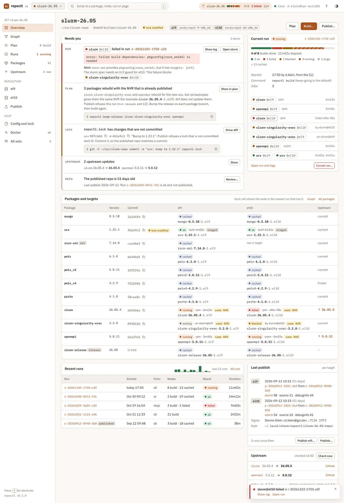
The shell around the Overview page (light). Top bar, sidebar, main, toast stack.
Top bar, left to right (sticky, 52 px):
Brandrc repoctl ui. Links to /.
Set switcher: a <details> menu (works without JS). Each set has a health dot, a state pill and its path. “All sets” and a hint to add a set are at the end. Picking a set goes through /-/go: /s/A/runs becomes /s/B/runs; a run, node or package that B does not have falls back to the list page. SSE event sets updates the menu.
Jump box (/): packages, nodes (slurm@el10), runs (prefix match on the id), pages. Results come from /s/<set>/-/frag/jump?q=.
Run chip (SSE chip): spinner, set name, mini progress bar, done/total, failed count, elapsed time. It links to the run. It shows the current set's run first, else the run of another set. Two or more runs in different sets show “2 running” and link to /. With no run the chip is hidden.
Live indicator: green “live” or red “offline” (from shell.js).
User and host (d.klein@hpc-build01), ? (shortcut help) and the theme button (auto → light → dark, stored in the cookie repoctl_theme, so the server renders <html data-theme> with no flash).
Sidebar groups: Set (Overview, Graph, Plan, Runs, Packages, Upstream), Repository (one entry per target, Publish), Host (Config and lock, Doctor, All sets). Counts on the right are live (nav-runs and others). Below 760 px the sidebar becomes one row of tabs under the top bar that scrolls sideways.
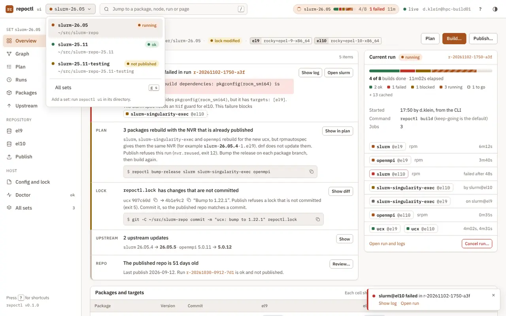
Set switcher. One server serves all sets that the user opened.
Page skeleton that every page uses (see gen-shell.js for the full markup):
A page sets active in the sidebar, page in the SSE URL and its own regions in <main>. Page CSS goes into a page file after shell.css.
Multi-set handling
repoctl ui in a set directory asks the running server (control socket $XDG_RUNTIME_DIR/repoctl/ui.sock) to add the set and to issue a launch token. If no server runs, it starts one. Then it opens /-/auth?t=…&next=/s/<set>/.
The server keeps the list of sets in $XDG_STATE_HOME/repoctl/ui/sets.yaml (name, path). After a restart the list is the same.
The server watches each set: repoctl.yaml, repoctl.lock, git HEAD and status of the set and the worktrees, and runs/*.jsonl in the state directory. So runs that the CLI or an MCP client starts show live in the UI too.
A second set with the same name from another path is refused. repoctl ui prints the path of the set that has the name. (See open questions.)
If a set directory is gone, the set stays in the list with an error. Its pages show an error banner and offer “Remove from list”.
Each set has its own build lock (<set>.lock). Runs in different sets can run at the same time; the run chip then shows “2 running”.
Keyboard shortcuts
Keys
Action
go
Overview of the current set
gg
Graph of the current target
gr
Runs
gp
Packages
gu
Upstream
gb
Browse the repository of the current target
gs
All sets
t
Next target on per-target pages (the page renders <a data-next-target href=…>)
/
Focus the jump box
?
Shortcut help (the help dialog)
Esc
Close a dialog or leave an input
Keys do nothing while focus is in an input, or with Ctrl, Alt or Meta. Pages may add keys (for example j/k in a log) and list them in the same help dialog. No key starts a build, a cancel or a publish.
Live updates: SSE and fragments
One EventSource per tab (sse-connect on <body>). This keeps the HTTP/1.1 limit of 6 connections per host free for other tabs.
Event payload is HTML. The server renders it for the page in the connect URL. Example: node:slurm@el9 is a matrix cell on the Overview, a class change on the Graph and a table row on the run page.
On connect and on every reconnect the server sends the current HTML of each region of the page. So no client logic is needed to catch up. The server sends retry: 5000.
The server sends hb every 15 s. shell.js marks the page offline after 30 s without a message or after an SSE error.
Global events on every stream: chip, sets, nav-runs, toast, hb, reload (layout changed, for example a new target: the page reloads), bye (the server stops: the offline banner says so).
Set events: set-head, attention, current-run, recent-runs, last-publish, upstream, node:<dir>@<target>, run:<run> (progress of one run), plan:<target>, graph:<target>, log:<dir>@<target> (only with node=, swap beforeend).
Each live region has data-live, hx-get to its fragment and hx-trigger="refresh". The offline state dims all [data-live] regions.
Toasts
Bottom right, newest on top, at most 3. They come from the SSE event toast or from the HX-Trigger header of an action.
Ok and info toasts close after 6 s. Error toasts stay until the user closes them and use role="alert".
Toasts for: run started, run done (ok or failed), node failed, publish done or failed, repoctl.lock or repoctl.yaml changed on disk, upstream check done. Each toast has a link to the object.
A toast never holds the only copy of information. The same fact is on a page (Needs you, run page).
Empty, error and offline states
State
Where
What the user sees
No runs yet
Overview, Runs
Empty state “No runs yet” with repoctl build and a Build… button.
Never published
Overview, Publish, repo browser
Empty state “Not published yet” with Publish….
No upstream configured
Upstream card
Muted line “1 has no upstream source”. Not in Needs you.
repoctl.yaml not valid
All set pages
Red banner with file:line: message. Pages show the last valid config. Build and publish are off.
Set directory not found
Set pages, sets page
Red banner. Only “Remove from list” works.
Unknown set, run, node or package
Any URL
404 page in the shell with a link to the parent list.
SSE down, server answers
All pages
Red sticky banner “Offline. The connection to repoctl ui was lost…”, Reload button, live regions dimmed, indicator “offline”.
Server does not answer
All pages
Same banner with “The repoctl ui server does not answer. It stopped, or the machine is not reachable.”
Session not valid
Any request
Redirect to /-/session (below).
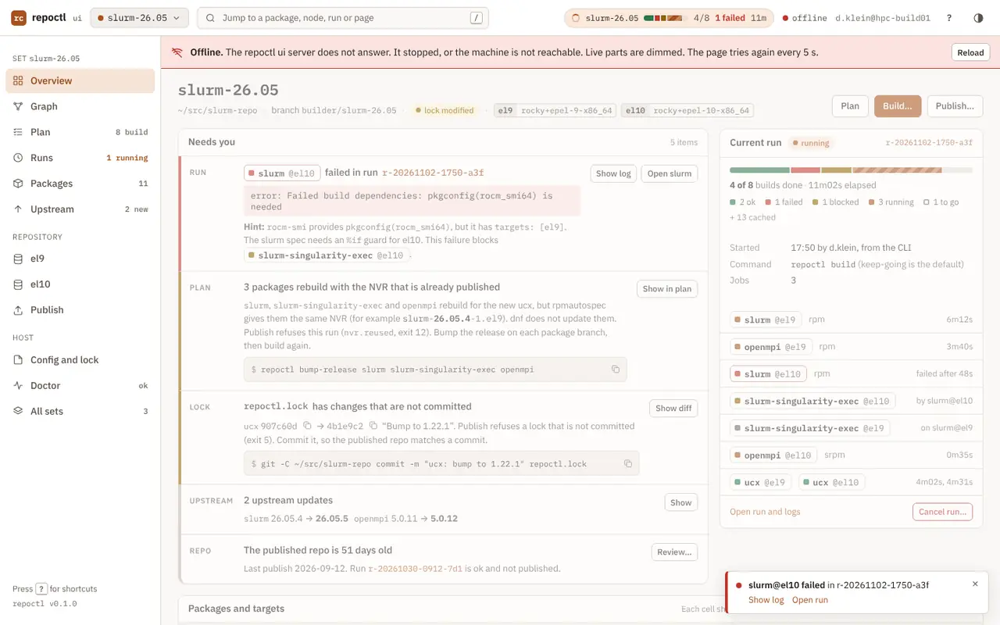
Offline: the banner sticks under the top bar. Live parts are dimmed.
Authentication
repoctl ui gets a launch token from the server: 32 random bytes, one use, valid for 60 s.
The browser opens http://127.0.0.1:<port>/-/auth?t=<token>&next=/s/<set>/. --no-browser prints this URL.
The server sets the cookie repoctl_session (HttpOnly; SameSite=Strict; Path=/, no Max-Age) and answers 303 to next. The token is not in the history. Referrer-Policy: no-referrer on all pages.
Sessions are kept in server memory. They end when the server stops, or after 7 days.
Each request checks Host (loopback and the port only). POST requests also check Origin and the CSRF header. The CSRF token is in <meta name="csrf-token"> and in hx-headers on <body>.
No valid session: a page GET gets 303 to /-/session?next=… (status 401 there). An htmx request gets 401 and HX-Redirect. An SSE stream gets 401; shell.js calls /-/ping and redirects.
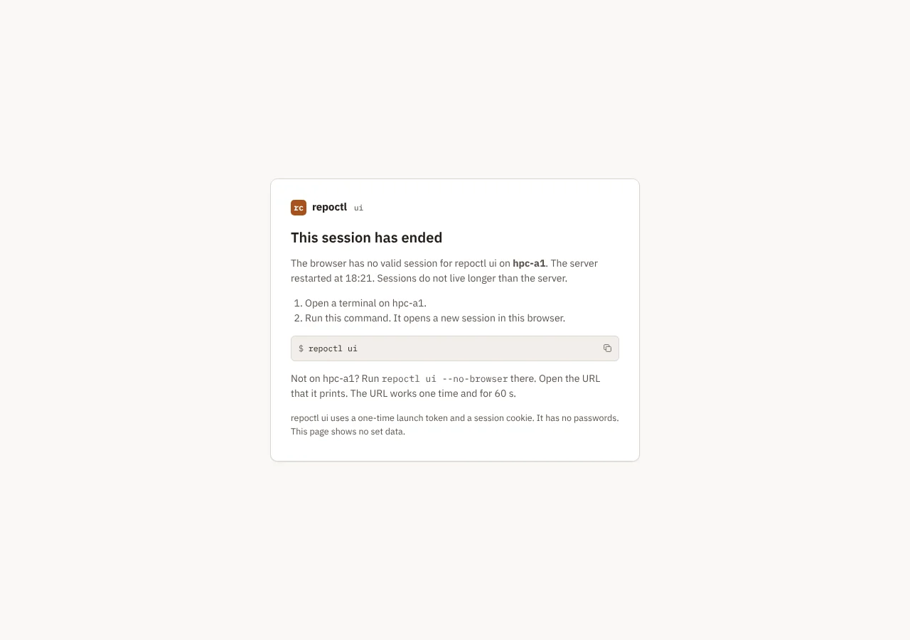
Session ended (light). It shows no set data and no shell.
Component sheet
ui-shell/components.html shows every shared part. Classes are in shell.css. Other pages use these classes and do not define new state colors.
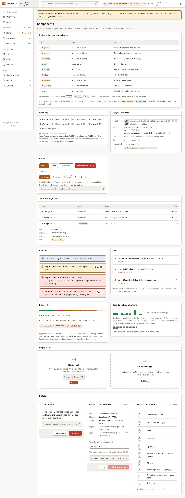
Component sheet (light).
Component
Markup
Rule
State pill
<span class="pill st-failed">failed</span>
Nine run states. Always with a text label. Lock and repo states reuse the colors: ok green, needs attention amber (st-blocked), failed red.
Compact health of a run (sets page). Always next to a text summary.
Banner
.banner.info|warn|err + svg.ic
One sentence of what, one of what to do.
Toast
.toast.ok|err|info
See Toasts.
Empty state
.empty
Says what the thing is and how to make the first one.
Dialog
<dialog class="dlg"> header / .body / footer
The safe button is left, the action right. Publish step 2 needs the typed set name; its button is .btn-danger.solid.
Overview page
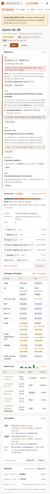
Overview at 390 px. The matrix keeps package, el9 and el10.
The story: Dennis bumped ucx to 4b1e9c2 and pinned it. The lock is not committed. Run r-20261102-1750-a3f (repoctl build, keep-going is the default, 3 jobs) rebuilds ucx, slurm, slurm-singularity-exec and openmpi on both targets. At the mockup moment (11m02s): 2 ok, 3 running (openmpi@el10 in srpm), 1 waiting, 1 failed, 1 blocked. slurm@el10 failed on pkgconfig(rocm_smi64). repoctl shows a hint: rocm-smi provides that, but has targets: [el9]. The plan problem nvr.reused is a Needs you item with the repoctl bump-release command, and the matrix tags the cells “same NVR”.
Ranked list: failed nodes (with error line and hint), plan problems (nvr.reused), lock dirty, worktree dirty, upstream updates, stale publish, doctor failures
…/-/frag/attention
attention
Current run
Progress, legend, start, command, jobs, active nodes, Cancel run…
…/-/frag/current-run
current-run (whole card on state change), run:<run> (bar and times)
Packages and targets
Matrix: package, version, commit, one cell per target (state, step or reason, NVR, staged tag), upstream
One row per target (publish is per target): time, publish run p-…, source run, RPM counts per repo; signer as uid + fingerprint tail; path; Publish el9… and Publish…
…/-/frag/last-publish
last-publish
Upstream
Updates first, frozen with the note, count of current ones; Check now
…/-/frag/upstream
upstream; POST …/-/actions/upstream-check
Needs you order: failed run nodes, then plan problems that block publish, then lock or worktree problems, then doctor failures, then upstream, then publish age. Each item has a kind label, a colored edge (red failed, amber attention, grey info), one or two actions and a command to copy when the fix is in a terminal.
Sets page
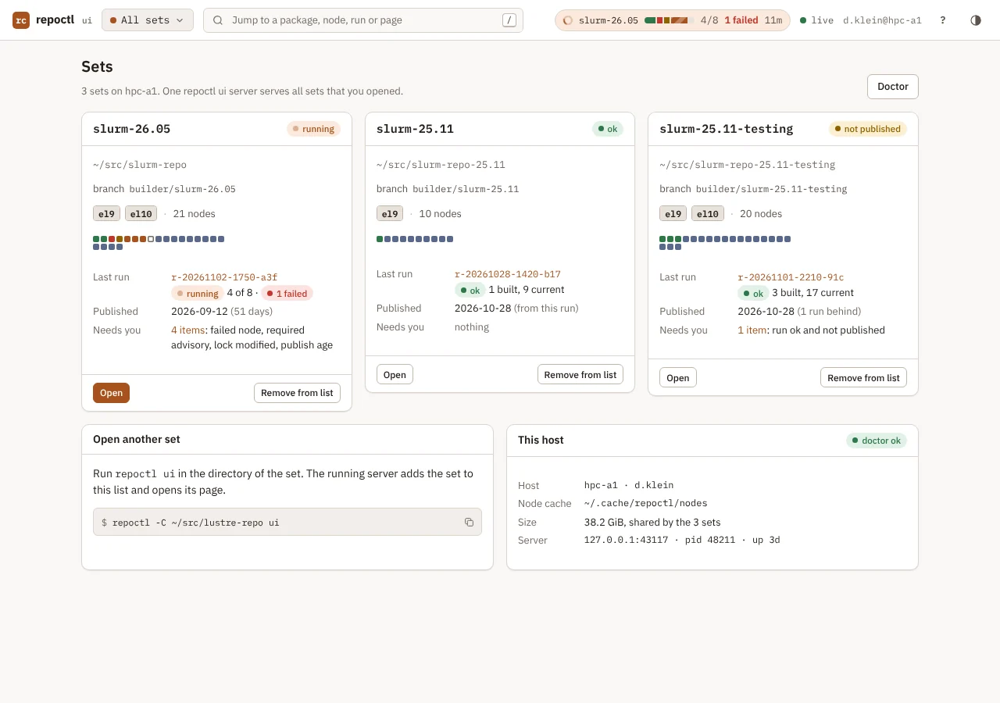
Sets (light).
One card per set: name, state pill, path, branch, targets, node count, node strip of the newest run, last run, last publish, Needs you summary. Health pill rule: running if a run is active; failed if the newest run failed; amber if Needs you has a lock, doctor or “not published” item; else ok. SSE event set:<set> replaces one card. A host card shows the shared node cache and the server address.
Accessibility
Contrast was computed with ui-shell/contrast.js (WCAG 2.x relative luminance) from the tokens in repoctl-base.css. Text needs 4.5:1 (pills are 11.5 px). Focus ring and control borders need 3:1. Base: 21 of 70 pairs fail, mostly in the light theme. With the token changes in base-fixes.css (F1), all text pairs pass.
Theme
Pair
Foreground
Background
Need
Base
With fixes
light
body text
--c-text#231d18
--c-bg #faf8f6
4.5
15.73
15.73
light
body text on surface
--c-text#231d18
--c-surface #ffffff
4.5
16.66
16.66
light
secondary text
--c-text-2#5d534a
--c-surface #ffffff
4.5
7.50
7.50
light
secondary text on surface-2
--c-text-2#5d534a
--c-surface-2 #f2eeea
4.5
6.49
6.49
light
muted text (labels, th, meta)
--c-text-3#8a7f74 → #736a61
--c-surface #ffffff
4.5
3.91 FAIL
5.30
light
muted text on bg
--c-text-3#8a7f74 → #736a61
--c-bg #faf8f6
4.5
3.69 FAIL
5.00
light
muted text on surface-2 (th)
--c-text-3#8a7f74 → #736a61
--c-surface-2 #f2eeea
4.5
3.39 FAIL
4.59
light
link / primary text
--c-primary#b4581f → #a7521d
--c-surface #ffffff
4.5
4.82
5.43
light
link on bg
--c-primary#b4581f → #a7521d
--c-bg #faf8f6
4.5
4.55
5.13
light
primary button label
--c-on-primary#ffffff
--c-primary #b4581f
4.5
4.82
5.43
light
primary button hover
--c-on-primary#ffffff
--c-primary-strong #8f4314
4.5
7.04
7.04
light
active nav item
--c-primary-strong#8f4314
--c-primary-soft #f6e3d6
4.5
5.66
5.66
light
focus ring vs bg (non-text)
--c-focus#d9773a → #c4682c
--c-bg #faf8f6
3
2.98 FAIL
3.70
light
strong border vs surface (non-text)
--c-border-strong#c4b8ac
--c-surface #ffffff
3
1.94 FAIL
1.94 FAIL
light
pill queued: text on own bg
--s-queued#8a7f74 → #71685f
--s-queued-bg #efebe7
4.5
3.30 FAIL
4.60
light
queued as text on surface
--s-queued#8a7f74 → #71685f
--c-surface #ffffff
4.5
3.91 FAIL
5.46
light
pill waiting: text on own bg
--s-waiting#8a7f74 → #71685f
--s-waiting-bg #f5f2ef
4.5
3.51 FAIL
4.89
light
waiting as text on surface
--s-waiting#8a7f74 → #71685f
--c-surface #ffffff
4.5
3.91 FAIL
5.46
light
pill running: text on own bg
--s-running#b4581f → #a7521d
--s-running-bg #fbe9dc
4.5
4.08 FAIL
4.60
light
running as text on surface
--s-running#b4581f → #a7521d
--c-surface #ffffff
4.5
4.82
5.43
light
pill ok: text on own bg
--s-ok#2f7d4a → #2d7747
--s-ok-bg #e1f1e6
4.5
4.32 FAIL
4.67
light
ok as text on surface
--s-ok#2f7d4a → #2d7747
--c-surface #ffffff
4.5
5.06
5.47
light
pill cached: text on own bg
--s-cached#5b6b8c → #596989
--s-cached-bg #e6eaf2
4.5
4.44 FAIL
4.58
light
cached as text on surface
--s-cached#5b6b8c → #596989
--c-surface #ffffff
4.5
5.35
5.52
light
pill failed: text on own bg
--s-failed#c0362c
--s-failed-bg #fbe3e0
4.5
4.51
4.51
light
failed as text on surface
--s-failed#c0362c
--c-surface #ffffff
4.5
5.52
5.52
light
pill blocked: text on own bg
--s-blocked#9a6a00 → #906300
--s-blocked-bg #fbf0d4
4.5
4.17 FAIL
4.66
light
blocked as text on surface
--s-blocked#9a6a00 → #906300
--c-surface #ffffff
4.5
4.73
5.29
light
pill canceled: text on own bg
--s-canceled#8a7f74 → #71685f
--s-canceled-bg #efebe7
4.5
3.30 FAIL
4.60
light
canceled as text on surface
--s-canceled#8a7f74 → #71685f
--c-surface #ffffff
4.5
3.91 FAIL
5.46
light
pill skip: text on bg (bg transparent)
--s-skip#a79c91 → #7c6f63
--c-bg #faf8f6
4.5
2.54 FAIL
4.60
light
skip on surface
--s-skip#a79c91 → #7c6f63
--c-surface #ffffff
4.5
2.69 FAIL
4.87
light
banner.warn text on blocked-bg
--c-text#231d18
--s-blocked-bg #fbf0d4
4.5
14.69
14.69
light
banner.err text on failed-bg
--c-text#231d18
--s-failed-bg #fbe3e0
4.5
13.62
13.62
light
btn-danger label on surface
--s-failed#c0362c
--c-surface #ffffff
4.5
5.52
5.52
dark
body text
--c-text#efe9e3
--c-bg #15120f
4.5
15.49
15.49
dark
body text on surface
--c-text#efe9e3
--c-surface #1c1814
4.5
14.65
14.65
dark
secondary text
--c-text-2#bfb4a9
--c-surface #1c1814
4.5
8.67
8.67
dark
secondary text on surface-2
--c-text-2#bfb4a9
--c-surface-2 #241f1a
4.5
8.02
8.02
dark
muted text (labels, th, meta)
--c-text-3#8d8278 → #91867c
--c-surface #1c1814
4.5
4.70
4.96
dark
muted text on bg
--c-text-3#8d8278 → #91867c
--c-bg #15120f
4.5
4.97
5.25
dark
muted text on surface-2 (th)
--c-text-3#8d8278 → #91867c
--c-surface-2 #241f1a
4.5
4.35 FAIL
4.59
dark
link / primary text
--c-primary#e08a4f
--c-surface #1c1814
4.5
6.65
6.65
dark
link on bg
--c-primary#e08a4f
--c-bg #15120f
4.5
7.04
7.04
dark
primary button label
--c-on-primary#1a120c
--c-primary #e08a4f
4.5
6.97
6.97
dark
primary button hover
--c-on-primary#1a120c
--c-primary-strong #f0a36d
4.5
8.95
8.95
dark
active nav item
--c-primary-strong#f0a36d
--c-primary-soft #3a2516
4.5
6.98
6.98
dark
focus ring vs bg (non-text)
--c-focus#f0a36d
--c-bg #15120f
3
9.03
9.03
dark
strong border vs surface (non-text)
--c-border-strong#4a4037
--c-surface #1c1814
3
1.75 FAIL
1.75 FAIL
dark
pill queued: text on own bg
--s-queued#9b9086
--s-queued-bg #2a241f
4.5
4.91
4.91
dark
queued as text on surface
--s-queued#9b9086
--c-surface #1c1814
4.5
5.65
5.65
dark
pill waiting: text on own bg
--s-waiting#9b9086
--s-waiting-bg #221d19
4.5
5.35
5.35
dark
waiting as text on surface
--s-waiting#9b9086
--c-surface #1c1814
4.5
5.65
5.65
dark
pill running: text on own bg
--s-running#f0a36d
--s-running-bg #3a2516
4.5
6.98
6.98
dark
running as text on surface
--s-running#f0a36d
--c-surface #1c1814
4.5
8.54
8.54
dark
pill ok: text on own bg
--s-ok#6cc58a
--s-ok-bg #16301f
4.5
6.77
6.77
dark
ok as text on surface
--s-ok#6cc58a
--c-surface #1c1814
4.5
8.39
8.39
dark
pill cached: text on own bg
--s-cached#9fb0d4
--s-cached-bg #1f2635
4.5
6.95
6.95
dark
cached as text on surface
--s-cached#9fb0d4
--c-surface #1c1814
4.5
8.10
8.10
dark
pill failed: text on own bg
--s-failed#ff7a6e
--s-failed-bg #3a1a17
4.5
6.16
6.16
dark
failed as text on surface
--s-failed#ff7a6e
--c-surface #1c1814
4.5
6.94
6.94
dark
pill blocked: text on own bg
--s-blocked#e6b84a
--s-blocked-bg #352a10
4.5
7.60
7.60
dark
blocked as text on surface
--s-blocked#e6b84a
--c-surface #1c1814
4.5
9.51
9.51
dark
pill canceled: text on own bg
--s-canceled#9b9086
--s-canceled-bg #2a241f
4.5
4.91
4.91
dark
canceled as text on surface
--s-canceled#9b9086
--c-surface #1c1814
4.5
5.65
5.65
dark
pill skip: text on bg (bg transparent)
--s-skip#6f655c → #8c8075
--c-bg #15120f
4.5
3.28 FAIL
4.85
dark
skip on surface
--s-skip#6f655c → #8c8075
--c-surface #1c1814
4.5
3.10 FAIL
4.59
dark
banner.warn text on blocked-bg
--c-text#efe9e3
--s-blocked-bg #352a10
4.5
11.70
11.70
dark
banner.err text on failed-bg
--c-text#efe9e3
--s-failed-bg #3a1a17
4.5
13.01
13.01
dark
btn-danger label on surface
--s-failed#ff7a6e
--c-surface #1c1814
4.5
6.94
6.94
Proposed token changes (hue and saturation stay, lightness moves):
Token
Light: base → proposed
Dark: base → proposed
--c-primary
#b4581f → #a7521d
no change
--c-text-3
#8a7f74 → #736a61
#8d8278 → #91867c
--c-focus
#d9773a → #c4682c
no change
--s-queued, --s-waiting, --s-canceled
#8a7f74 → #71685f
no change
--s-running
#b4581f → #a7521d (stays equal to primary)
no change
--s-ok
#2f7d4a → #2d7747
no change
--s-cached
#5b6b8c → #596989
no change
--s-blocked
#9a6a00 → #906300
no change
--s-skip
#a79c91 → #7c6f63
#6f655c → #8c8075
--c-border-control (new)
#a3907e (3.07 on surface)
#736355 (3.06 on surface)
--c-border-strong stays as it is (1.94 and 1.75). Buttons have a text label and a background, so the border does not identify them. Text inputs and checkboxes use the new --c-border-control.
Other rules:
Color is never the only signal: pills have labels, chips have the node id, bars have titles, the matrix has text.
Skip link to #main. Landmarks: header, nav, main. Each card has aria-labelledby on its heading.
The toast stack is role="status" aria-live="polite"; error toasts and the offline banner use role="alert". The live indicator is a polite status.
The run progress bar is a role="progressbar" with aria-valuenow and a label (“4 of 8 builds done”). SSE swaps of whole regions do not move focus.
Dialogs are native <dialog> with showModal(): focus trap, Esc and backdrop come from the browser.
Motion (pulse, spinner, stripes) stops with prefers-reduced-motion. forced-colors gives pills a border.
Touch targets in the top bar are 30 px or more. At 390 px no page scrolls sideways; wide tables scroll inside .table-wrap.
Base CSS fixes
In ui-shell/base-fixes.css. Load it after the base CSS. If accepted, merge it into repoctl-base.css.
#
Problem
Fix
F1
21 contrast failures (table above).
Token changes above; new --c-border-control.
F2
No color-scheme: scroll bars and native controls stay light in dark mode.
color-scheme: light dark, fixed per data-theme.
F3
Below 760 px the sidebar is hidden and there is no other navigation. The grid gives the hidden row 1fr. A grid item without min-width:0 widens the page to 564 px at 390 px.
Sidebar becomes a horizontal tab row; grid-template-rows: auto; min-width:0.
F4
No form controls (the publish confirm needs a text input).
.input, .select, .check, label.field.
F5
a.btn cannot be [disabled]; .btn-danger has no hover; no solid danger button.
[aria-disabled=true], hover, .btn-danger.solid.
F6
Long hashes, paths and NVRs overflow .kv on phones.
overflow-wrap:anywhere on .kv dd.
F7
No .sr-only; [hidden] loses against component display.
Both added.
F8
Pills disappear in forced-colors mode.
Border in forced-colors: active.
Also note: the base CSS imports Google Fonts. The production UI must embed IBM Plex under /-/static/ (no CDN at runtime).
Files
ui-shell/overview.html, components.html, sets.html, session.html: mockups (generated by gen.js, gen-shell.js, gen-pages.js).
ui-shell/shell.css: shell and shared components. overview.css, pages.css: page CSS. base-fixes.css: base fixes.
ui-shell/shell.js: theme, copy, keys, SSE state (about 80 lines; the only script besides htmx and the SSE extension).
URL scheme, reserved - segment, node id <dir>@<target> and set name pattern ^[a-z0-9][a-z0-9._-]*$ as above (config and cli-ref must allow only such names).
One SSE stream per tab at /s/<set>/-/events?page=… with the event names above; snapshot on connect; hb every 15 s. ui-graph, ui-run and ui-pkg use these names and add only page-specific parameters.
Actions: GET /s/<set>/-/dialog/<name> and POST /s/<set>/-/actions/<verb>. Each dialog shows the CLI command.
Runs record their source (cli, ui, mcp) and the full command line in the event log.
The set list of the server is in $XDG_STATE_HOME/repoctl/ui/sets.yaml. Sessions end when the server stops, or after 7 days.
repoctl can say why a BuildRequires is missing: it knows which package in the set provides it and for which targets. The Needs you hint needs this from the graph code.
Lock “modified” means repoctl.lock differs from git HEAD of the set; publish refuses it (exit 5). “Worktree dirty” is a separate Needs you item.
The plan exposes its problems (for example nvr.reused) to the UI, so Needs you and the matrix can show them before the run ends.
The mockups use the token values of base-fixes.css (F1).
Open questions
Two sets with the same name from two paths (for example two clones of builder/slurm-26.05): refuse (current proposal) or add a suffix in the URL?
Who owns the Upstream page, Config and lock page and Doctor page mockups? This section only gives their URLs.
Should the server stop by itself after some idle time with no tab open, as localweb/launch may do? This changes the session-ended text.
Web UI: build graph and plan
This section covers two pages. The Graph page shows the per-target dependency graph with the live state of the current run. The Plan page shows what a build does, and why, before the user starts it. Both pages are server-rendered html/template pages. They use htmx for interaction and SSE for live state. The Go server lays out the graph and sends it as inline SVG. The client JS (graph.js, about 90 lines) only adds hover highlight, zoom, timers and an edge state mirror.
Mockup sources: ui-graph/gen.js generates all pages. It uses ui-graph/layout.js, a JavaScript copy of the Go layout algorithm described below. The generator fails if an edge crosses a node box, so every SVG in the mockups is checked. Screenshots: ui-graph/shot.js. All mockups show the story snapshot at 18:01:02 (run r-20261102-1750-a3f, 11m02s elapsed, jobs 4, keep-going is the default). The Plan page shows 17:49, before the run starts.
Routes
URL
Content
/s/<set>/graph?target=el9&view=dag
DAG of one target. Default target: the first target in repoctl.yaml. Default view: dag.
/s/<set>/graph?target=all&view=dag
Union DAG of all targets. Each card has one state line per target.
/s/<set>/graph?view=matrix
Matrix: packages × targets. target is ignored (all target columns), or limits the columns when it names one target.
…&node=slurm
Selects slurm@<target>. The server renders the highlight and the open drawer. The URL can be shared.
…&filter=changed|failed
Dims nodes that do not match. Layout does not change.
…&q=pmix
Find: dims nodes whose dir does not contain the text.
Plan page. The form state is in the URL (htmx hx-push-url).
POST /s/<set>/runs
Starts a build to staging. Returns HX-Redirect to the run page.
GET|POST /s/<set>/bump-release?pkg=…
GET: confirm dialog (commits to add, new NVRs). POST: same as repoctl bump-release, then pin. Plan refreshes.
GET /s/<set>/events?topic=…&view=…&target=…
SSE stream (see "SSE update model").
1. Graph page, DAG view, el9
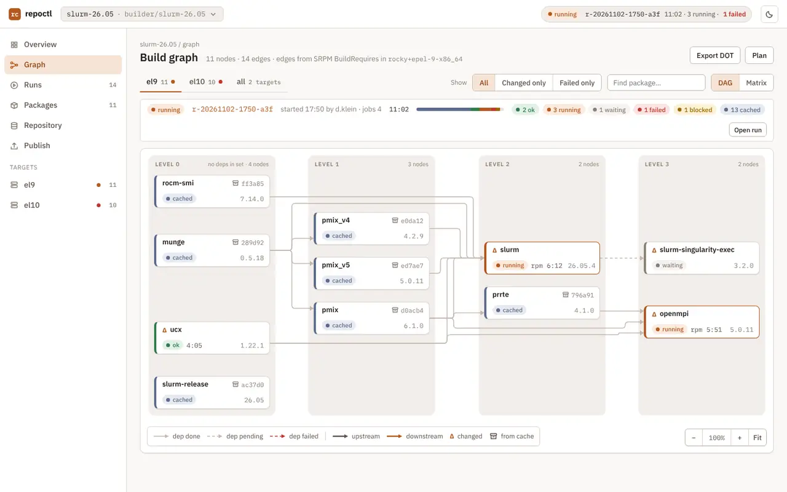
Graph, el9, light. Run r-20261102-1750-a3f is in progress. Δ marks the 4 nodes that the plan rebuilds.
Page parts, top to bottom:
Page head. Title, node and edge count, the mock config that gave the edges. Actions: Export DOT, Plan.
Toolbar. Target tabs (el9 | el10 | all) with node count and a state dot (running or failed in the current run). Filter: All · Changed only · Failed only. Find box. View switch DAG | Matrix.
Run strip. Only when a run is active or the last run is less than 1 hour old. Run id, start, options, elapsed, a stacked bar, and one pill per state count. The strip swaps on SSE event run:strip. With no run, the cards show plan actions (build / cached) in place of run states.
Banners. Target-specific facts, for example a failed node or a package that is not built for this target.
Canvas. One SVG. Level columns ("lanes") with a label: LEVEL 0 · no deps in set. Node cards. Orthogonal edges. Legend (bottom left). Zoom controls (bottom right): − / 100% / + / Fit.
Node card
Part
Content
Rule
Left bar
State color
From the base CSS state tokens (--s-*). Failed cards also get --s-failed-bg, blocked cards --s-blocked-bg.
Row 1
Δ (changed) · dir · cache icon + first 6 chars of the key
Δ shows when the plan action is build. The cache icon shows only for cached.
Row 2
State pill · step + elapsed · version
Running: rpm 6:12 (ticks on the client). Ok: total time. Failed: step + time of failure. Blocked: short hint (slurm failed). Queued: no free job.
Tooltip
slurm@el9 · build: dep-key-changed (ucx@el9)
Native title. The drawer has the full facts.
Fixed card size: 212 × 60 px (union view: 212 × 84). Long names get an ellipsis and a tooltip. The card is HTML inside a foreignObject, so it uses the normal .pill .st-* classes. The foreignObject is 4 px larger than the card on each side, so the focus ring is not clipped.
Edges
Style
Meaning
Attribute
Solid grey
Dependency done (ok or cached)
data-src-state="ok|cached"
Dashed grey
Dependency pending (running, waiting, queued)
data-src-state="running|…"
Dashed red
Dependency failed or blocked
data-src-state="failed|blocked"
Copper, 2.5 px
Downstream of the selected node
class is-down
Dark, 2.5 px
Upstream of the selected node
class is-up
Dotted (union view only)
Edge exists on some targets only
data-only="el9"
The arrow points from the dependency to the dependent (build order, left to right). An edge goes from the right side of a card to the left side of the next card. A node with 4 or more incoming edges in one channel ("hub", for example slurm) has one shared entry port. Other nodes get one port per edge, sorted by source position.
Selection and highlight
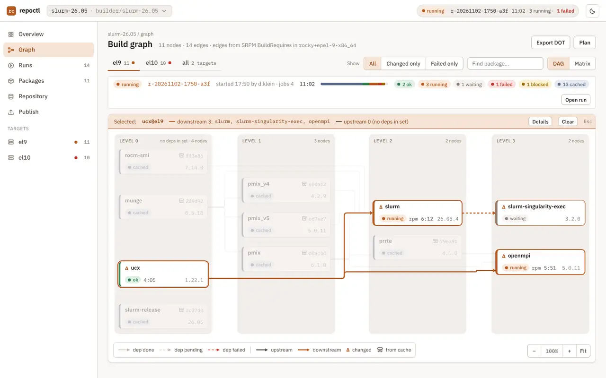
Selected: ucx@el9. Downstream path (slurm, openmpi, slurm-singularity-exec) is copper. All other nodes and edges are dimmed. ucx has no upstream in the set.
Hover on a card highlights its upstream and downstream paths. Moving out clears the highlight. No server request.
Click (or Enter on a focused card) pins the selection and opens the drawer (hx-get into #drawer, hx-push-url adds &node=).
Esc clears the pinned selection. Clear in the selection bar does the same.
The selection bar above the canvas lists the downstream and upstream nodes by name. This gives the same facts as the colors, for screen readers and for color-blind users.
The server computes the transitive closure. Each <g class="gnode"> carries data-up and data-down (space-separated dirs). The client only toggles classes. It moves highlighted edges to the end of the edge group, so they draw on top.
Filters dim (opacity 0.32) and never remove nodes. The layout stays the same when the user changes a filter. Changed only keeps nodes with action build. Failed only keeps failed and blocked nodes and the edges between them.
2. Graph page, el10: failed and blocked
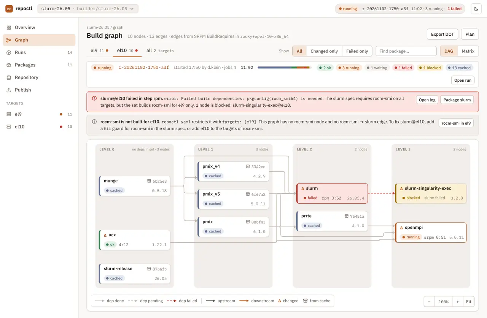
Graph, el10, light. slurm failed in step rpm. slurm-singularity-exec is blocked. rocm-smi has no node in el10.
The error banner shows the first error line of the failed node (from the log, see Open questions) and the number of blocked nodes. Buttons: Open log, Package slurm.
The info banner "rocm-smi is not built for el10" shows for each package with a targets: list that excludes this target. It names the config line (targets: [el9]) and the two fixes.
el10 keeps the relative node order of el9. Packages stay in the same place when the user switches tabs (see layout step 3).
3. Matrix view
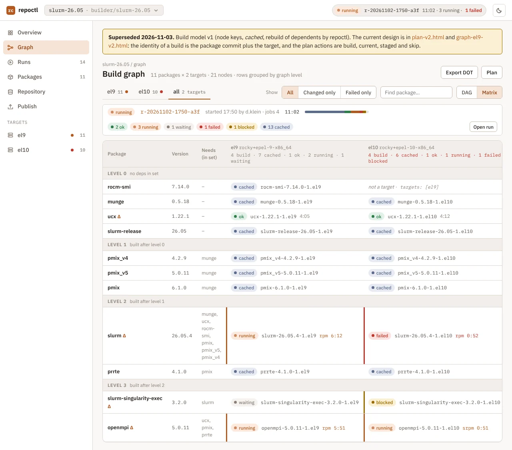
Matrix, light. Rows are grouped by graph level. Each cell has state, NVR and step or hint.
Columns: package (with Δ), version, needs (in set), one column per target. The column head has the mock config and the counts per state.
Row groups: level in the union graph. In this set, the levels are the same on all targets.
A package that is not built for a target shows "not a target · targets: [el9]".
Failed, running and blocked cells have a 3 px left bar in the state color.
Each cell has its own sse-swap="node:<dir>@<target>". A click opens the same drawer as in the DAG.
The matrix is the best view for many targets. The DAG is the best view for "why does this build".
Union view (target "all")
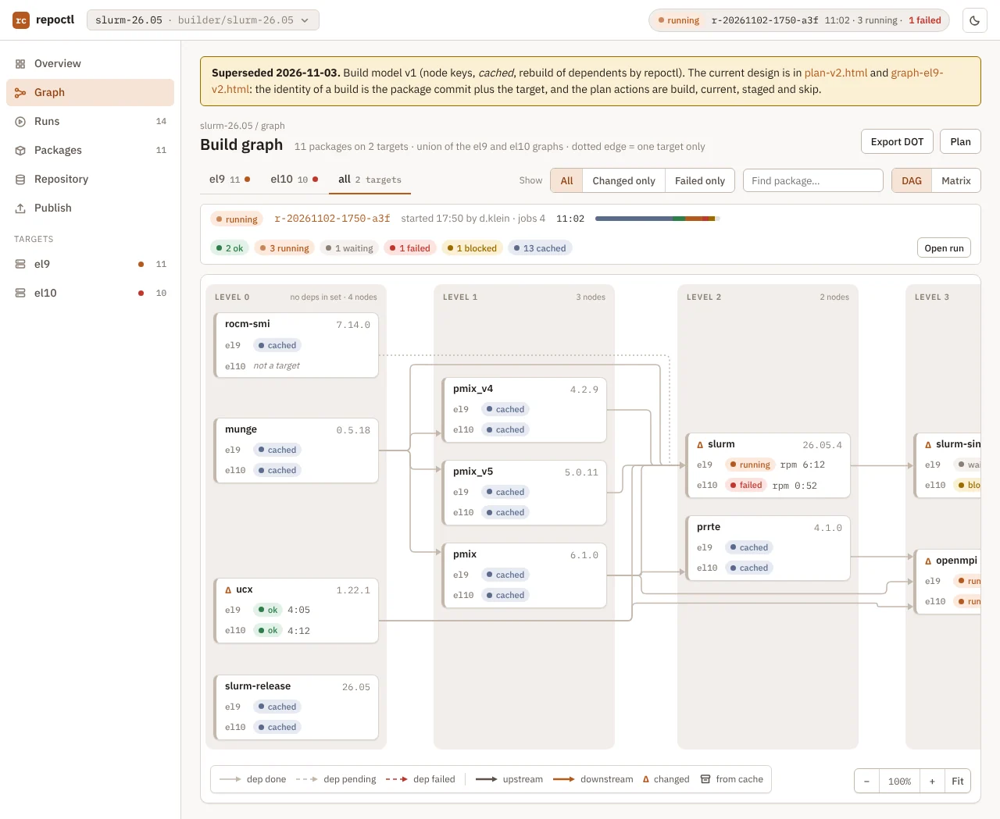
DAG, all targets, light. Dotted edge: rocm-smi → slurm exists for el9 only.
4. Node drawer (slurm@el9)
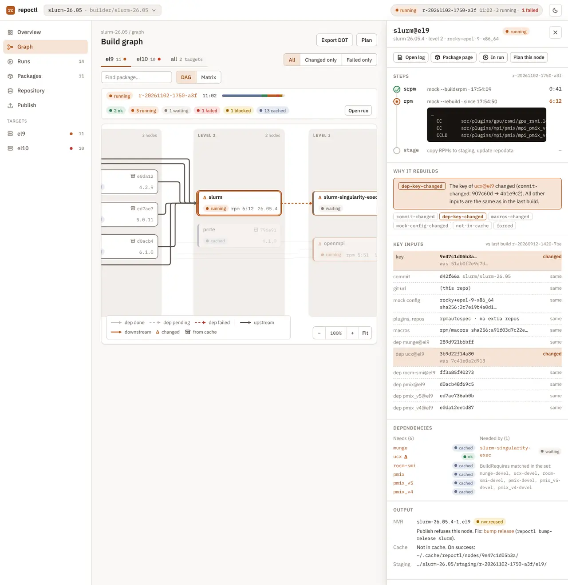
Drawer for slurm@el9, light. The graph scrolls so the selected node stays visible.
The drawer is a fixed panel (460 px) on the right. The main column gets right padding, so the drawer does not cover the toolbar. Sections:
Head: node id, version, level, mock config, state pill, close (link back to the URL without node=).
Actions:Open log (/s/<set>/runs/<run>/logs/<dir>@<target>), Package page (/s/<set>/packages/<dir>), In run, Plan this node.
Steps: timeline srpm (done, 0:41) → rpm (running, 6:12, last 3 log lines) → stage (pending). Swaps on drawer:<dir>@<target>.
Why it rebuilds: the active reason code and one sentence. Below it, all six codes, with the active ones highlighted.
Key inputs: new key and previous key, then each input with "same" or "changed": commit (+ branch), git url, mock config hash, plugins and extra repos, macros hash, one row per dependency key. Changed rows have the copper background.
Dependencies: "Needs" and "Needed by" lists with state pills, plus the BuildRequires that matched a package in the set.
Output: NVR with the nvr.reused pill when the NVR does not change (plus the fix: repoctl bump-release slurm), cache path after success, staging path.
Rebuild reasons (enum)
Code
Condition (compared with the last key of this node)
commit-changed
The package commit or the git url changed.
dep-key-changed
The key of one or more dependency nodes changed. The text names them.
macros-changed
The hash of the target macros files changed.
mock-config-changed
The hash of the mock config, its plugins or the extra repos (targets[].repos) changed.
not-in-cache
The key is the same as before, but nodes/<key>/ is missing (cleaned or never built on this host).
forced
The user set --force and selected this node.
A node can have more than one reason. The UI shows all. "Previous key" means the key of the newest successful build of this node for this set (from published.yaml or the run logs). A node with no previous build gets not-in-cache.
5. Plan page
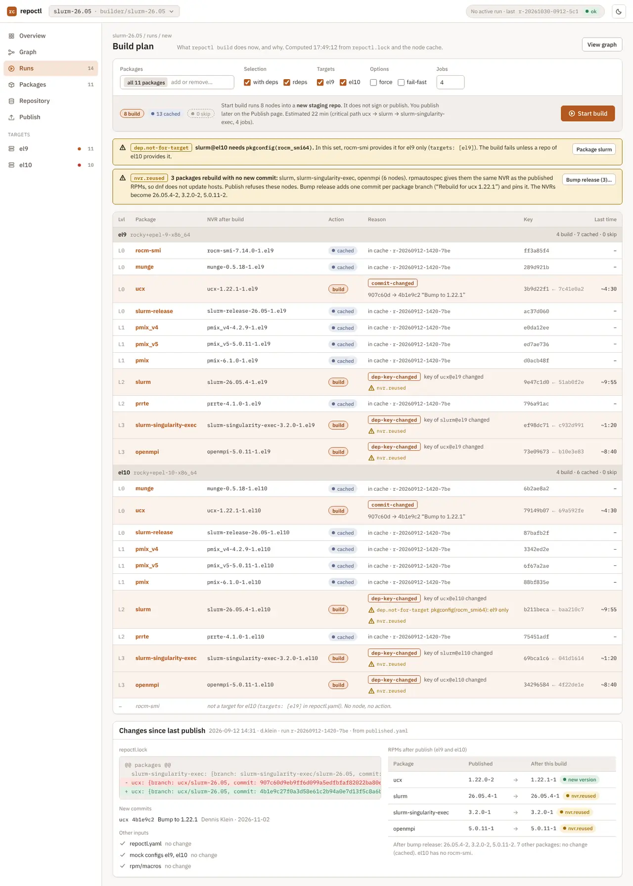
Plan, light, at 17:49 before the run. Warnings dep.not-for-target and nvr.reused (with the Bump release (3)… action).
Selection form: packages (combobox, default "all"), with deps (--with-deps), rdeps (--rdeps), targets (one checkbox per target), force, fail-fast (off: keep-going is the default), jobs. A change sends hx-get /s/<set>/plan?… and swaps #plan-body. The same flags exist on repoctl build.
Start build box: counts per action, one note, estimated time from the last build times and the critical path, and the Start build button. Note text: "Start build runs 8 nodes into a new staging repo. It does not sign or publish. You publish later on the Publish page."
Stale plan guard: the form sends a hidden plan=sha256:… (hash of the plan rows). The server computes the plan again. If the hash differs, it does not start the run. It returns the new plan with a banner "The plan changed. Check it and start again."
Warnings (plan problem codes): (1) dep.not-for-target: a BuildRequire that the set provides for other targets only (the rocm-smi gap, known before the build); (2) nvr.reused: slurm, slurm-singularity-exec and openmpi rebuild with no new commit, so rpmautospec keeps the published NVR and dnf does not update hosts. Publish refuses these nodes (exit 12). The banner action Bump release (3)… opens a confirm dialog. It then runs repoctl bump-release: one commit "Rebuild for ucx 1.22.1" per package branch, then pin. The NVRs become 26.05.4-2, 3.2.0-2, 5.0.11-2 and the warning goes away. Each affected row also shows nvr.reused. Start build stays enabled: the build to staging is useful to test.
Plan table: grouped by target. Columns: level, package, NVR after build, action (build / cached / skip), reason, key (new ← old, 8 chars), last build time. A target that does not build a package shows one muted row: "not a target for el10".
Changes since last publish: source is published.yaml. It shows the repoctl.lock diff, new commits per package, the other key inputs (config, mock configs, macros), and the RPM version change per package (new version or nvr.reused).
Selection rule: packages outside the selection get skip. If a selected node needs a dependency that is not cached and is skipped, the plan shows an error row and disables Start build.
One run per set at a time (set lock). While a run is active, Start build is disabled with the text "Run r-… is active."
Mobile (390 px)
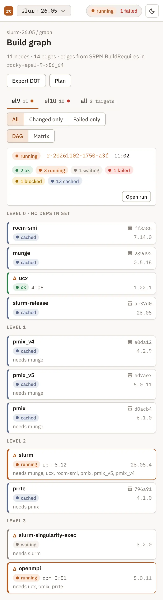
Graph, el9, 390 px. Below 760 px the server-rendered list replaces the SVG.
An SVG of 1140 px does not fit a phone. The page also contains a level list (.glist): one heading per level, the same cards, and a "needs …" line. CSS shows the list below 760 px and the SVG above. The list cards use the same sse-swap names, so live updates work on both.
Go layout algorithm
Package internal/web/graphlayout. Input: node ids in repoctl.yaml order, edges (dep → dependent), fixed card size. Output: boxes, edge polylines, lane rectangles, SVG size. Pure function, no I/O, deterministic. The result is cached by a hash of the graph structure (nodes + edges + target). State changes never cause a new layout.
Layers (longest path).layer(n) = 0 if n has no deps in the set, else 1 + max(layer(dep)). Levels in the UI are these layers. Build order follows them.
Virtual nodes. An edge that spans more than one layer gets one virtual node (height 0) in each layer between. Virtual nodes are shared per (source, layer). Thus ucx → slurm and ucx → openmpi share one line through level 1.
Ordering (barycenter). Start from the union-graph order, so a package keeps its place on all targets. Run 24 sweeps, down and up. Each sweep sorts a layer by the mean position of its neighbours in the previous layer. After each sweep, swap adjacent items when this gives fewer crossings ("transpose"). Keep the order with the fewest crossings. Ties: config order, then dir. Nodes with no edges (slurm-release) go to the end of their layer.
Y coordinates. Each item wants the mean y of its neighbours. Per layer, solve "closest to wanted y, keep order, keep minimum gaps" with isotonic regression (pool adjacent violators). Repeat 60 times over all layers. Gaps: 22 px node–node, 16 px node–virtual, 12 px virtual–virtual. Shift so the top is at 44 px (room for lane labels).
X coordinates. One column per layer. Card width 212 px. Channel width between columns: max(80, 40 + (tracks−1)·12) px.
Edge routing in channels. Orthogonal. All edges from one item into the next layer form a group with one vertical track. Target ports: one shared port for a hub (≥ 4 inputs), else ports spread over the left side, sorted by source y. A single edge goes straight when the source y is inside the target box. Track order in a channel: test all orders (groups ≤ 7, else barycenter), keep the one with fewest crossings. Corners are rounded (r = 6 px). A long edge is one <path> through its virtual nodes, so hover can mark it as one element.
Validation (unit test). No edge segment may cross the inside of any card. The golden test uses the slurm-26.05 sets for el9 and el10.
Size: the slurm set has 11 nodes and 14 edges. Layout takes well under 1 ms. For 200 nodes, the transpose step is the cost; limit it to 4 rounds above 100 nodes.
One SSE connection per page, made by localweb/sse. The page names its topics and its view in the URL. The server renders fragments for that view, so the client needs no templates.
node:<dir>@<target> → card or matrix cell (outerHTML); run:strip → run strip; drawer:<dir>@<target> → open drawer; run:done → triggers hx-get of the page (state → plan actions)
set:<set>
watcher on repoctl.yaml, repoctl.lock, worktree HEADs, node cache index
graph:stale → banner "The graph changed. Reload."; plan:stale → banner on the Plan page and Start build disabled until refresh
publish:<set>
publish
publish:done → Plan page diff becomes stale (same plan:stale banner)
Swap by node id. A node event carries the whole card div.nd with its new state class (n-running → n-ok). htmx swaps it inside the foreignObject, which is an HTML context, so no SVG parsing issue occurs. The <g>, the position and the edges stay.
Edge mirror. After the swap, graph.js copies data-state of the card to g.gnode and to data-src-state of each edge with the same data-from. CSS then changes the edge style.
Only changes. The server sends a node event on state change and on step change only. Elapsed time ticks in the browser from <time class="tick" datetime="…">.
Coalescing. At most 2 events per node per second. The last state wins.
Reconnect. On connect, the server sends the current fragment of every visible node first. A reconnect thus heals missed events. Last-Event-ID is not needed.
Filter on the server. A page for target=el9 gets no el10 node events. The top bar always gets run:summary.
Accessibility
Cards are focusable (tabindex=0, role=button). Enter opens the drawer. Tab order follows layer, then y.
The SVG has role=img and an aria-label with the counts. Each edge has a <title>. The level list (.glist) is the text equivalent of the graph and is also exposed to screen readers on desktop (visually hidden, not display:none, in the final build).
State is never color only: each card and cell has a pill with the state word.
prefers-reduced-motion stops the running pulse (base CSS).
Assumptions
The Plan page is reached from Runs ("New build" → /s/<set>/plan) and from the Graph page. Its sidebar item is Runs. ui-shell and ui-run: please link "New build" there.
SSE: one endpoint /s/<set>/events?topic=…&view=…&target=…. Topics run, run:<id>, set:<set>, publish:<set>. Event names node:<dir>@<target>, run:summary, run:strip, run:done, drawer:<dir>@<target>, graph:stale, plan:stale, publish:done. ui-run and contract should use the same names.
Top bar run pill swaps on run:summary (outerHTML). When idle it shows "No active run · last <run> <state>".
Node URLs: /s/<set>/graph/node/<dir>@<target> (drawer fragment), logs at /s/<set>/runs/<run>/logs/<dir>@<target>, package page /s/<set>/packages/<dir>. DOM ids: n-<target>-<dir> (card), m-<target>-<dir> (matrix cell).
Story snapshot (per section 3): elapsed 11m02s, jobs 4. Running: slurm@el9 (rpm 6:12, srpm took 0:41), openmpi@el9 (rpm 5:51), openmpi@el10 (srpm 0:51). Waiting: slurm-singularity-exec@el9. Done: ucx@el9 ok 4:05, ucx@el10 ok 4:12, slurm@el10 failed after rpm 0:52, slurm-singularity-exec@el10 blocked. These sub-times are mine; ui-run may show other values.
Last published run: r-20260912-1420-7be (other areas use other ids for the 2026-09-12 publish; the lead should pick one). Story keys: ucx@el9 7c41e0a2d913 → 3b9d22f14a80, slurm@el9 51ab0f2e9c7d → 9e47c1d05b3a. ucx new NVR ucx-1.22.1-1.el9.
Plan actions get a "build" badge in copper (.act-build), not a state color. "cached" and "skip" use the state pills.
Extra repo URLs and plugins count as mock-config-changed. A git url change counts as commit-changed.
The Plan form maps 1:1 to repoctl build flags: --with-deps, --rdeps, --force, --fail-fast, --jobs, --target. The Plan page also accepts from=lock|worktree (not shown in the mockup; default lock).
Plan problem codes shown in the UI: dep.not-for-target, nvr.reused (contract owns the list).
Open questions
Bump release from the web UI writes commits to package branches. Should the UI also push them, or leave the push to the user? The mockup only commits and pins.
Should a known target gap (rocm_smi64 on el10) block Start build for that node, or only warn as in the mockup?
Error banner text: does repoctl parse known mock errors ("Failed build dependencies") from the log, or show the last non-empty error line? The mockup assumes a small set of known patterns.
For a graph with many targets (more than 4), should "all" default to the matrix view?
Does the node cache keep the build time per key? The Plan page uses it for "last time" and the estimate.
Web UI: runs and logs
This area covers four pages: the run detail page, the node log page, the runs history and the finished-run summary. All pages use the shared shell (topbar, sidebar, live run pill). The server renders HTML with html/template. htmx swaps fragments. One SSE stream per page sends live updates as HTML fragments. The mockups are static HTML. They show the htmx attributes where the product has them.
The mockups show the story run r-20261102-1750-a3f at 18:01:06 (elapsed 11m02s). At this time ucx is ok on both targets, slurm@el9 and openmpi@el9 build (step rpm), openmpi@el10 builds (step srpm), slurm@el10 failed and slurm-singularity-exec@el10 is blocked. The run will end with 6 ok, 1 failed, 1 blocked, 13 cached after 41m07s, exit 3.
Sources: ui-run/gen_*.py write the mockups (run-detail.html, node-log-failed.html, node-log-live.html, runs.html, run-success.html). ui-run/run.css extends the base stylesheet. ui-run/shoot.js makes the screenshots.
Pages and URLs
Page
URL
Notes
Runs history
/s/<set>/runs
Query: q, result, by, target, since, published=1, cursor. The URL keeps the filter (hx-push-url).
Run detail
/s/<set>/runs/<run>
Live while the run is active. Same layout after the end, with a summary card at the top.
Node log
/s/<set>/runs/<run>/nodes/<dir>@<target>
Query: step=srpm|rpm|stage, file=build.log|root.log|state.log|repoctl.log, q, follow=1, wrap=1, around=<line>. Anchor #L214 selects a line.
text/plain; charset=utf-8. With ?download=1 the server adds Content-Disposition: attachment.
1. Run detail page
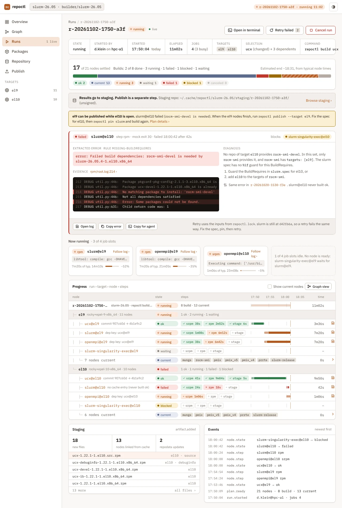
Run detail, light. The live run at elapsed 11m02s.
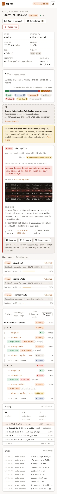
Run detail, mobile (390 px). The sidebar and the set switch are hidden. The tree drops the steps and timeline columns. Running and failed nodes show their steps on a second line.
Regions from top to bottom:
Header. Run id, run state pill, SSE status dot ("live"). Actions: Open in terminal, Retry failed, Cancel run.
Meta strip. State, started by (user on host), start time, elapsed, jobs (busy slots), targets, selection, command. The selection shows the directories the user gave and the count of dependents that rebuild because their key changed.
Overall progress. "17 of 21 nodes settled". Settled means ok, cached, failed, blocked or canceled. A second line counts only the build nodes. The stacked bar uses the state colors with a 2 px gap. Running segments have moving stripes (off with reduced motion). The legend pills give every count as text, so the bar does not depend on color alone. The estimated end uses the last ok duration of each node.
Staging note. "Results go to staging. Publish is a separate step." It gives the staging path and a link to the staging repo browser.
Plan problems. A warning banner for plan problems that block publish. In the story: nvr.reused for slurm, openmpi and slurm-singularity-exec, with the repoctl bump-release fix.
Failure cards. One card per failed node, newest first. Content: node, step, mock exit code, time and duration, blocked nodes, extracted error, evidence excerpt (6 lines around the match), diagnosis, "same error before" link. Buttons: Open log (opens the evidence line), Copy error, Copy for agent (repoctl logs RUN NODE --json). The footer says when a retry cannot help: the inputs did not change since the failure.
Now running. One card per busy job slot: step pill, node, last log line (max 1 update per second), elapsed of typical time. An idle slot card tells why no node is ready.
Progress tree. The same structure as the CLI live tree: run, target, node, steps (srpm, rpm, stage) with durations. Cached nodes of a target fold into one row ("7 nodes cached"); the row expands on click. Each node row has its key reason ("commit 907c60d → 4b1e9c2", "dep key: ucx@el9"), a timeline bar on a shared time axis with a "now" line, the duration and a log link.
Staging card (artifact.added) with new files and nodes linked from the cache. Events card: the last 10 events, newest first.
Actions
Action
Request
Behaviour
Cancel run
POST /s/<set>/runs/<run>/cancel (CSRF header)
The server shows a confirm dialog fragment first. repoctl sends SIGTERM to each mock process group, waits 20 s, then sends SIGKILL. Running, waiting and queued nodes become canceled. Nodes that are ok stay in staging. The run gets result canceled. A canceled run is never publishable. CLI: repoctl cancel RUN.
Retry failed
POST …/retry, body nodes=failed,blocked
Starts a new run. Selection: the directories of the failed and blocked nodes, on the targets of the old run. Nodes with a key in the cache are cached. The plan reads repoctl.lock again, so committed fixes apply. The set allows one build at a time. If the old run is still active, the new run gets state queued and starts when the set lock is free. The response sends HX-Location to the new run. The button is hidden when no node failed or is blocked. CLI equivalent: repoctl build slurm slurm-singularity-exec.
Open in terminal
none (client side)
Copies repoctl -C ~/src/slurm-repo runs RUN --follow to the clipboard. The button title shows the command. If the clipboard API is not available, a popover shows the command as selected text.
Error extraction
repoctl scans each log while mock writes it. A rule gives a normalized summary, the evidence lines and an optional diagnosis. The fingerprint (rule + normalized capture + dir@target) finds the same error in earlier runs.
Rule
Match (examples)
Log
missing-buildrequires
dnf4 No matching package to install: '(.+)'; dnf5 No match for argument: (.+); rpmbuild error: Failed build dependencies: + indented lines. Summary: error: Failed build dependencies: X is needed by NVR.
root.log, build.log
build-section-failed
error: Bad exit status from /var/tmp/rpm-tmp.\w+ \(%(prep|build|install|check)\)
ERROR 0001: file '.*' contains a standard rpath (from %__arch_install_post in rpm/macros)
build.log
mock-error
^ERROR: Exception\(, ERROR: Command failed
repoctl.log (mock stderr)
warnings
warning: from gcc and rpmbuild, -Wdeprecated-declarations
build.log
Diagnosis for missing-buildrequires: if a package in the set provides the missing capability, but its targets exclude the node target, the card says so. It lists two fixes: guard the BuildRequires in the spec, or add the target to that package.
2. Node log page
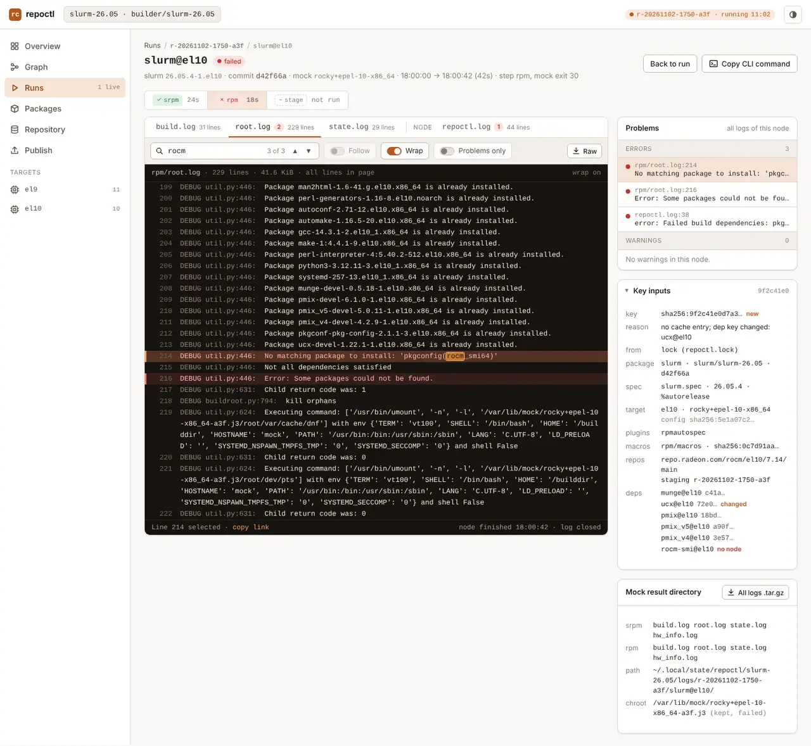
slurm@el10 (failed), light. root.log of step rpm, line 214 selected, search "rocm" (3 matches), wrap on, key inputs open.
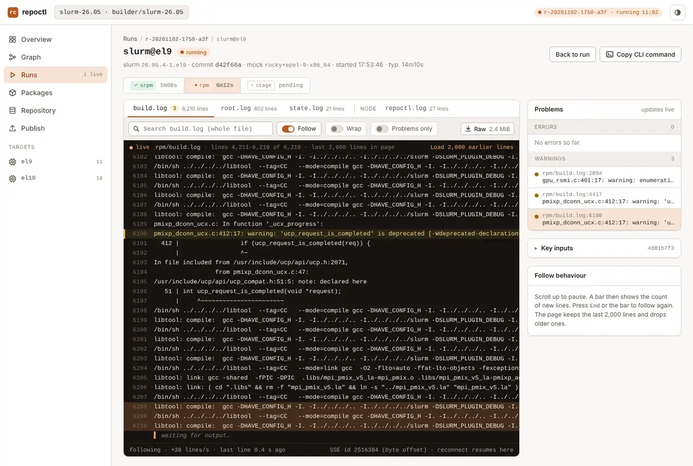
slurm@el9 (running), light. Follow is on. The tail moves: new lines arrive by SSE and flash. Wrap is off.
Layout
Step bar: srpm, rpm, stage with state and duration. The default is the failed step, else the running step, else the last step.
Tabs: build.log, root.log, state.log of the selected step, then repoctl.log of the node. Each tab shows its line count and an error (red) or warning (amber) badge. The default tab is the file with the first error. For the story failure this is root.log.
Toolbar: search, Follow, Wrap, Problems only (errors and warnings with 3 lines of context), Raw download.
Status line: file, line range in page, size. While following: a "live" badge and a "Load 2,000 earlier lines" link.
Log view: line numbers are anchors (#L214). Error lines have a red bar and tint. Warning lines have an amber bar. The selected line has a copper bar. Search matches use <mark>; the current match is stronger. The log surface is dark in both themes.
Problems (jump list): errors and warnings of all logs of the node, with step/file:line. A click opens the file at that line. If the line is not in the page, the server sends a window around it (around=).
Key inputs (collapsible <details>, content loads on first open): key, reason, source (lock or worktree), package branch and commit, spec, target and mock config hash, plugins, macros hash, extra repos, dependency keys. A dependency that has no node on this target shows "no node" (rocm-smi@el10).
Mock result directory: the files of each step, the log path and the kept chroot. Button: all logs as .tar.gz.
Keys: / search, n/N next or previous match, e next error, f follow, w wrap, g/G start or end.
Follow behaviour
Follow is available only while the node runs. For a finished node the toggle is disabled with the reason "node finished".
When the user scrolls up, follow pauses. A bar shows the count of new lines. End or a click on the bar starts follow again.
When the step changes (node.step), the page switches to the new step only if the user did not select a step by hand.
When the node ends (node.state), the cursor line changes to "node finished HH:MM:SS · log closed".
Log files (mock and repoctl)
File
Writer
Content
root.log
mock
Chroot setup: root cache unpack, mounts, dnf update, rpm -Uvh of the SRPM, dnf builddep. Format LEVEL file.py:line: message. Missing build dependencies show here.
build.log
mock
rpmbuild output inside the chroot (%prep, %build, %install, %check). Compiler and rpmbuild errors show here. Largest file (the slurm build: about 6,000 lines, 2.4 MiB).
state.log
mock
Phase list: YYYY-MM-DD HH:MM:SS,mmm - Start: build phase for … / Finish: …. The UI also shows it as a phase timeline. A Start without Finish marks the failed phase.
hw_info.log
mock
CPU, memory, disk of the host. Listed in the result directory card, no tab.
repoctl.log
repoctl
One per node: key and reason, mock argv, mock stderr, exit codes, step times, extracted errors, blocked nodes.
mock writes its logs into --resultdir. repoctl gives each step its own work directory ~/.cache/repoctl/work/<run>/<node>/<step>/ and tails the logs there while the step runs. At step end, repoctl moves the logs to ~/.local/state/repoctl/<set>/logs/<run>/<node>/<step>/ and the RPMs to the node cache. repoctl.log is logs/<run>/<node>.log.
3. Runs history
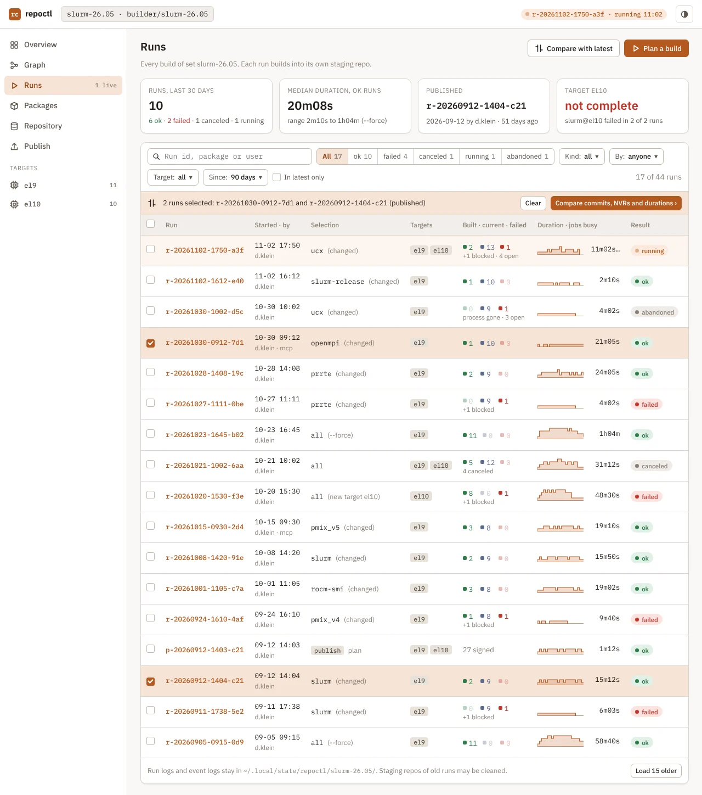
Runs history, light. Two runs are selected for compare.
Tiles: runs in the last 30 days by result, median duration of ok runs, the published run, and a target health tile (el10 is not complete: slurm@el10 failed in every el10 run).
Filters (one row): text search (run id, package, user), result segments with counts, by, target, since, published only. A change sends GET /s/<set>/runs/f/table and pushes the URL.
Columns: select box, run id, start and user (d.klein · mcp marks a run started by an agent through MCP), selection with its reason, targets, built · cached · failed (plus blocked, canceled, open), duration with sparkline, result, published.
Sparkline: jobs busy over the run time, as a step area (0 to jobs). The x axis is the time of that run. The text next to it gives the absolute duration. One series, so no legend. The SVG has a <title> with the peak. The run page is the table view of this data.
Compare: select two rows. A bar above the table shows both ids and a "Compare" button. Each row also has a "compare with previous run" icon. The header has "Compare with published".
Published: "yes · live" for the run that is the published repo now, "yes · superseded" for older ones. Publish runs (p-…) are not rows here. The Publish page lists them.
15 rows per page; "Load 15 older" appends rows with a cursor.
4. Finished-run states
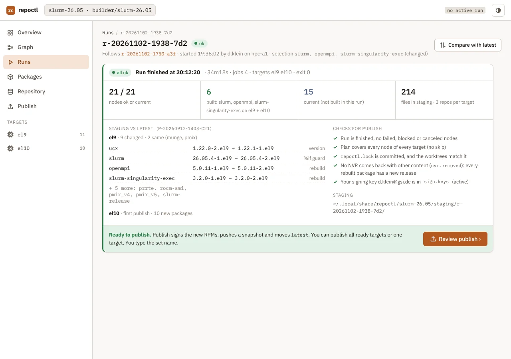
Success summary, light: r-20261102-1938-7d2, all ok, "Ready to publish".
When run.finished arrives, the summary card replaces the header region. The tree stays below it. "Ready to publish" shows only if all checks pass:
The run is finished. No node is failed, blocked or canceled.
The plan covers every node of every target (no skip).
repoctl.lock is committed, and the worktrees match it.
No plan problem nvr.reused.
The user signing key is in sign.keys with state active.
The button links to /s/<set>/publish?run=<run>. The publish page owns the two-step confirm and the per-target choice.
Run result
Exit
Summary card
Call to action
ok
0
Counts, staging vs published diff, publish checks
Review publish (if all checks pass), else the first failed check with its fix
failed
3
Counts (story: 6 ok, 1 failed, 1 blocked, 13 cached, 41m07s) and the failure cards
Retry failed, Open log
canceled
130
"Canceled by d.klein at HH:MM". Staging is kept for inspection.
Build again
queued
–
"Waits for run X (one build per set)"
Cancel
Live updates: regions, fragments, SSE
Each page opens one SSE stream: GET /s/<set>/events?topic=<topic>. The body has hx-ext="sse" and sse-connect. One hidden sink element listens to all event types with hx-swap="none". Each event carries one or more HTML fragments with hx-swap-oob. Thus one event can update the tree row, the progress bar and the feed at the same time. The server renders fragments with the same templates as the full page, so a fragment is always the full current state of its element (not a delta). Only log lines and feed rows are appended.
beforeend (lines); outerHTML (step bar, cursor line)
Problems (#problems)
…/nodes/<node>/f/problems
log topic, piggyback
node.log (the server matcher adds problem rows)
beforeend
Search hits
…/nodes/<node>/f/search?step=&file=&q=
none
–
none (OOB: count, marks in the page window)
Key inputs
…/nodes/<node>/f/keys
none
–
loads once on first open
Event types are the domain event types of the run event log (runs/<run>.jsonl): run.started, plan.ready, node.state, node.step, node.log, artifact.added, run.finished. The UI stream adds two control events: resync and end. Elapsed timers do not use SSE. A small script updates elements with data-since once per second.
Reconnect
The server sends retry: 3000. EventSource connects again by itself and sends Last-Event-ID.
Topic run/<run>: the event id is the line number in runs/<run>.jsonl. On reconnect the server reads the event log from id + 1 and replays the events as fragments. Fragments are full state, so a replay is safe.
Topic log/…: the event id is the byte offset after the last line sent. On reconnect the server sends the file from that offset. No line is sent two times.
Topic runs: the id is <run>.<seq>. On reconnect the server always sends resync, because a table refresh is cheap.
If the gap is more than 1,000 events, or the offset is before the first line in the page, the server sends event: resync with no data. Each region has hx-trigger="sse:resync" and loads its fragment again.
After run.finished the server sends event: end and closes the topic. The client does not connect again (sse-close="end"). A page for a finished run does not open a stream.
UI state: the "live" dot is green while connected. After 2 failed attempts it shows "reconnecting". After 30 s a banner says "Live updates stopped. Reload the page." Session expiry (401) shows "Session ended. Run repoctl ui again."
Log size limits
In page: the last 2,000 lines of a file (virtualized tail). The first render reads the file from the end (seek, no full scan).
While following: new lines append in batches (every 200 ms, max 64 KiB per event). The client drops lines from the top to keep 2,000 lines. The status line shows the range in page.
Older lines: "Load 2,000 earlier lines" adds a window at the top. The page holds max 6,000 lines. Above that, the far end is dropped and follow pauses.
Jump to a line outside the page loads a 2,000-line window around it. A line index (<file>.idx, one offset per 1,000 lines, written while the log grows) makes this fast.
Long lines: lines over 4,096 characters are cut in the view with a "(+N chars)" marker. The raw file is complete.
Search: on the server, over the full file. Plain text, no case. Max 500 matches per request.
Problems: max 200 entries per file. Then the list says "200+, see raw log".
Download raw: the full file, streamed, gzip on the wire. "All logs" streams a .tar.gz of the node directory.
Run page: node.log on the run topic is coalesced to the last line, max 1 event per second per node.
Accessibility
Every state has a text label next to its color (pills, legend counts, step marks ✓ ✗ ● ○).
The progress bar has role="img" and an aria-label with all counts.
The run state and the failure cards are in a polite live region. The log view is not a live region (too many updates). It is a focusable region with a label.
Animations (pulse, stripes, new-line flash) stop with prefers-reduced-motion.
Assumptions
Run states: queued, running, ok, failed, canceled. queued is new: a retry or build that waits for the set lock. A run is failed if a node is failed or blocked.
"Retry failed" = new run with the directories of the failed and blocked nodes, on the old run targets. CLI equivalent: repoctl build <dirs>. No new CLI flag.
CLI hints: Open in terminal copies repoctl -C <dir> runs RUN --follow; node pages copy repoctl logs RUN NODE; cancel is repoctl cancel RUN.
Log layout: logs/<run>/<node>.log (repoctl.log) plus logs/<run>/<node>/<step>/{build,root,state,hw_info}.log. mock result directories are under ~/.cache/repoctl/work/<run>/<node>/<step>/. Each step (srpm, rpm) is one mock call with its own logs.
Error rules, fingerprints and the "same error before" link come from the core (also useful for the CLI, MCP and the triage skill). The --json output of repoctl logs RUN NODE includes the problems list.
SSE: one endpoint /s/<set>/events?topic=, HTML fragments with OOB swaps, ids = event log line (run topics) or byte offset (log topics). A JSON event stream for tools is the contract area.
Node element ids: node-<dir>-<target> (the @ becomes -). The graph page can use the same ids for its SVG nodes.
The success example uses r-20261102-1938-7d2 (slurm 26.05.4-2, openmpi and slurm-singularity-exec after bump-release). Its counts (6 built, 15 cached, 34m18s) are mine. The publish area may change them.
History rows before today are invented to fit the story: el10 was added on 2026-10-20, slurm@el10 never built ok, and later runs used --target el9.
The run page shows plan problems (nvr.reused) in a warning banner under the staging note.
Open questions
mock exit code for a failed dnf builddep: the mockup shows 30. Check with the mock version on hpc-build01.
Retention: how long do logs, event logs and staging repos of old runs stay? repoctl clean has no --runs option yet.
Run compare page: owner and layout (this area only defines the URL).
Should the run page offer per-node retry (one failed node), or only "Retry failed"?
Should a canceled run's staging repo be deleted at once, or kept until repoctl clean --staging?
Web UI: packages, repository and publish
This section covers three areas of the web UI. Packages shows the pinned state, worktree state and upstream state of each package. Repository shows the RPMs of a target, published or staging, and the diff between them. Publish is the only place in the UI that signs. All pages use the shared shell (topbar and sidebar) and the base stylesheet. Page CSS is in ui-pkg/pkg.css. The mockups are generated by ui-pkg/build.py and screenshot by ui-pkg/shoot.js.
Sample state in the mockups: run r-20261102-1750-a3f is in progress. Dennis bumped ucx to 4b1e9c2 but did not pin it. He is fixing the slurm spec for el10, so the slurm worktree is dirty. The publish happy path uses a later run, r-20261102-1938-7d2, after the fix (see Assumptions).
Routes
URL
Page
CLI equivalent
/s/<set>/packages
Packages list
repoctl status, repoctl upstream --json
/s/<set>/packages/<dir>
Package detail
repoctl show <dir> --json (proposed), repoctl upstream <dir>
repoctl repo ls --staging <run>, repoctl repo diff --run <run>
/s/<set>/publish[?run=<id>]
Publish step 1 (review) or blocked state
repoctl publish --run <id> --dry-run
/s/<set>/publish/confirm?run=<id>
Step 2 dialog fragment (htmx, appended to body)
TTY prompt of repoctl publish
POST /s/<set>/publish
Step 3 progress, then result
repoctl publish --run <id>
Mutating endpoints (all POST, CSRF token from localweb): /packages/<dir>/pin, /packages/<dir>/notes, /upstream/refresh, /checkout, /build?dir=, /publish, /publish/cancel. Live updates come from one SSE stream per set, /s/<set>/events, and one per publish, /s/<set>/publish/events.
1. Packages list
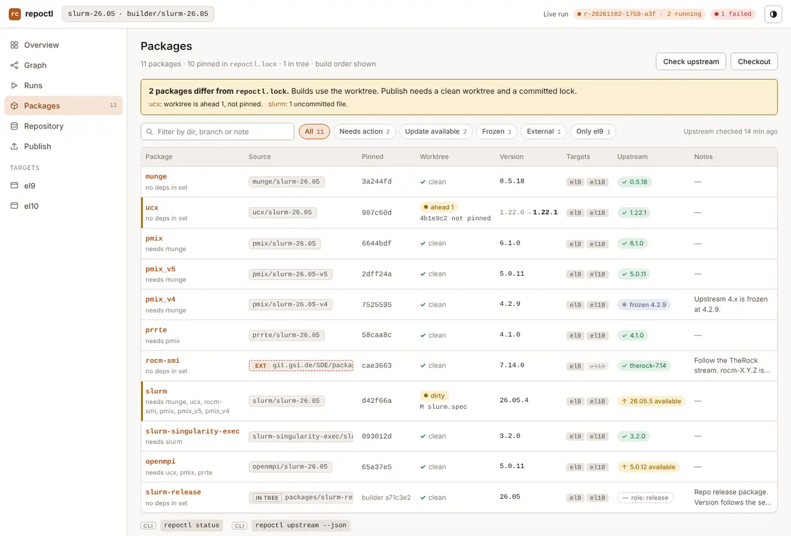
Packages list, light. Rows are in build order. Rows that need action have an amber left edge.
The table has one row per package. The columns are:
Package: dir (link to detail) and a second line with the dependencies in the set (“needs munge”).
Source: a badge. A branch in this repo shows only the branch name (the default case has no label). An external repo shows an EXT label, a dashed copper border and the URL host and path. A path in the builder branch shows IN TREE.
Pinned: short commit from repoctl.lock. An in-tree package shows the builder commit.
Worktree: “✓ clean” as quiet text. ahead N or dirty as an amber pill, with the HEAD commit or the changed file below.
Version: the spec version. If the worktree differs from the pin, it shows 1.22.0 → 1.22.1.
Targets: one tag per set target. A target that the package excludes (targets: [el9]) is struck through.
Upstream: ✓ ok, ↑ 26.05.5 available, ❄ frozen 4.2.9 or — role: release. Each state has a symbol and a text, so color is not the only signal.
Notes: packages[].notes from repoctl.yaml, cut after 2 lines.
Above the table: a warning banner when any worktree differs from the lock, a search field (hx-get with delay:200ms, swaps #pkg-table) and filter chips (All, Needs action, Update available, Frozen, External, Only el9). The chips are links with query parameters, so a filter is a URL. “Check upstream” runs repoctl upstream in the server. “Checkout” asks for a confirm and runs repoctl checkout.
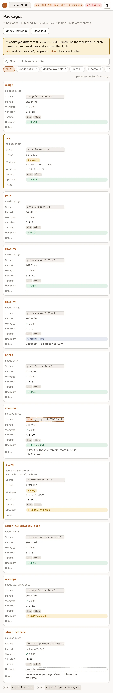
Mobile, 390 px. The table becomes one card per package. Each cell gets its column name from a data-l attribute. The sidebar is hidden and the set switch shows only the set name.
2. Package detail
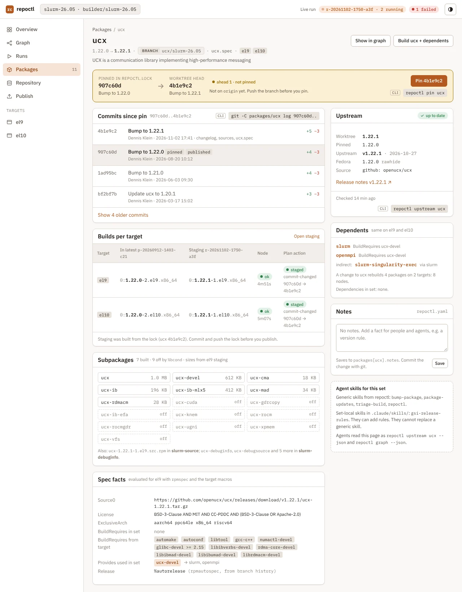
ucx detail, light. The worktree is ahead 1 and not pinned.
Layout: header, pin strip, then a main column and a 340 px side column.
Header: dir, version (pinned → worktree), source badge, spec file, targets, spec Summary. Actions: “Show in graph” (graph focused on the package) and “Build ucx + dependents” (repoctl build ucx, to staging only).
Pin strip: pinned commit and message → worktree HEAD and message, a state pill and the “Pin 4b1e9c2” button with repoctl pin ucx beside it. The strip is amber when the worktree differs, and neutral when it matches. If HEAD is not on the remote, the strip says so. Pin still works, but the publish check “Pinned commits are on the remote” fails later. A dirty worktree disables Pin and shows the git command to commit (see slurm).
Commits since pin: git log <pin>..HEAD with hash, subject, author, date, files and line counts. The pinned commit follows with pinned and published tags, then older commits. “Show older” appends more rows with htmx.
Builds per target: one row per target. Published NVR, staging NVR of the current or last run, node state pill, node key (short) and the key change reason. A footer says when staging was built from an unpinned worktree.
Subpackages: built subpackages with size. Subpackages switched off by %bcond_with show dashed and “off”. A line names the source RPM and the debuginfo packages and their sub-repos.
Spec facts: evaluated with rpmspec for one target. Source0, License, ExclusiveArch, BuildRequires in the set, BuildRequires from the target repos, Provides that other packages in the set use, Release macro.
Upstream (side): worktree version, pinned version, upstream latest with date, Fedora rawhide version, upstream source from repoctl.yaml, release-notes link, “checked N min ago” and repoctl upstream ucx.
Dependents (side): direct dependents with the matching BuildRequires, indirect dependents, and the rebuild cost (“4 packages on 2 targets: 8 nodes”).
Notes (side): a text field. Save writes packages[<dir>].notes in repoctl.yaml with an atomic write. The user commits the change with git. The UI does not commit.
Agent skills hint (side, dashed box): generic skills that ship with repoctl, set-local skills from .claude/skills/, the rule “may add, never replace”, and the JSON commands that agents read.
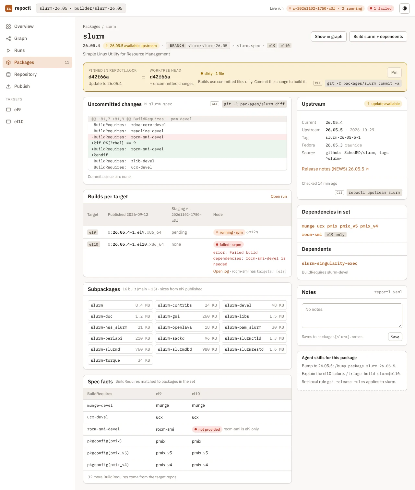
slurm detail, light. Upstream 26.05.5 is available. The worktree is dirty and Pin is off.
slurm shows the variants of the same page. The pin strip shows = (same commit) and the dirty state. “Uncommitted changes” replaces “Commits since pin” and shows the diff of the fix. Builds per target shows slurm@el9 running and slurm@el10 failed with the first error line and a log link. Spec facts become a matrix: BuildRequires × target. A cell names the providing package, or shows “not provided” in the failed state color. This explains the el10 failure without the log. The skills hint names the commands for this case: /bump-package slurm 26.05.5 and /triage-build slurm@el10.
3. Repository browser
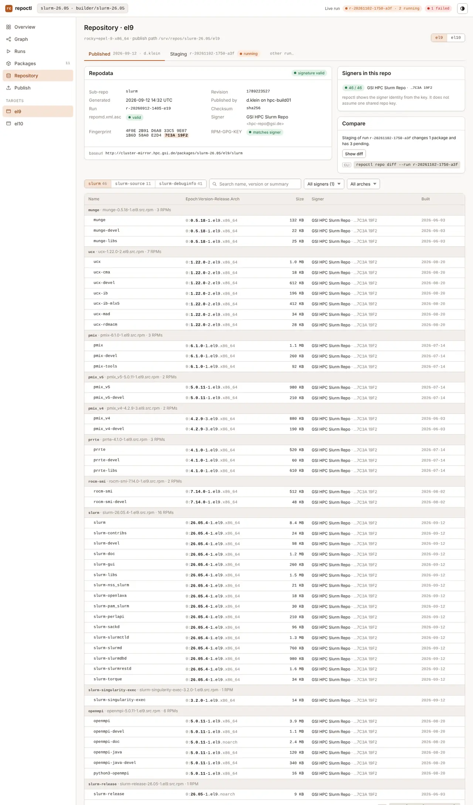
Repository el9, Published, sub-repo slurm, light.
Target: sidebar items el9, el10 and a segmented control in the page head.
Tabs: Published (date and publisher) and Staging (run id and run state). “Other run…” opens the run list.
Repodata card: sub-repo, repomd.xml revision, generation time, publisher and host, run, checksum type, repomd.xml.asc status, signer identity, full fingerprint with the last 8 hex digits highlighted (…7C3A 19F2), and whether RPM-GPG-KEY matches the signer. The baseurl comes from the release package .repo file.
Signers card: one line per key found in the repo, with a count. Today this is one key. The UI does not assume one repo key (see item 5).
Table: group row per source package (dir, SRPM file name, count). Columns: Name, Epoch:Version-Release.Arch, Size, Signer, Built. The EVR uses the same emphasis as scripts/rpmlist: epoch dim, version bold, arch dim.
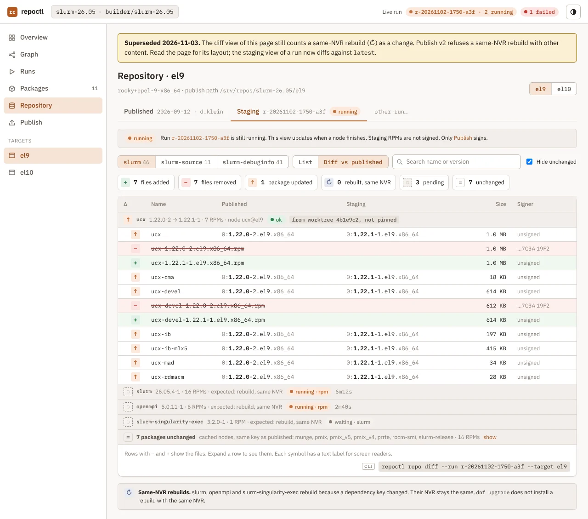
Repository el9, Staging r-20261102-1750-a3f, diff vs published, light.
The staging view has two modes: List (same table as Published, signer column shows “unsigned”) and Diff vs published. The diff uses a symbol, a color and an aria-label for each change:
Symbol
Meaning
Color token
+
added: file or package name only in staging
--s-ok
−
removed: file or package name only in published (row text struck through)
--s-failed
↑
updated: same name, higher EVR
--s-running
↻
rebuilt: same NVR, other node key
--s-cached
◌
pending: node not finished in this run (dashed)
--s-waiting
=
unchanged: same node key as published (hidden by default)
neutral border
Summary chips count files (+7, −7) and packages (1 updated, 0 rebuilt, 3 pending, 7 unchanged). Package rows show old and new EVR. A row expands to its file pair (− old file, + new file). Pending rows show the node state and the expected change. Each pending row has hx-trigger="sse:node-<dir>-<target>", so it swaps itself when the node finishes. A note explains same-NVR rebuilds: dnf upgrade does not install them.
4. Publish flow
Publish is the only place that signs. It has three steps: Review, Confirm, Sign and publish. Each step shows its CLI equivalent.
Run selector: the newest finished run is the default. The row shows state and node counts.
Target cards (one per target): publish path; counts “RPMs to sign”, “signed RPMs reused”, “RPMs after publish”; the list of changes per source package (↑ ucx 1.22.0-2 → 1.22.1-1, 15 RPMs; ↻ openmpi same NVR; = unchanged; + added; − removed); link to the full diff.
Checks (doctor format, one line each, with a result on the right): all nodes ok or cached; no dirty worktree; worktrees match repoctl.lock; lock committed (with builder commit); pinned commits on the remote; release package version matches the set name; signing key available; publish paths writable with free space. Same-NVR rebuilds are a warning, not a block.
Signing card: signer identity (uid), fingerprint, where the key name comes from (sign.gpg_name), agent status pills (“gpg-agent: key unlocked”, “YubiKey present”), who starts the publish, and whether the key is the same as at the last publish.
What happens: the 5 sub-steps in plain words.
Footer: Cancel and Continue. Continue loads the step 2 dialog.
Step 2: Confirm
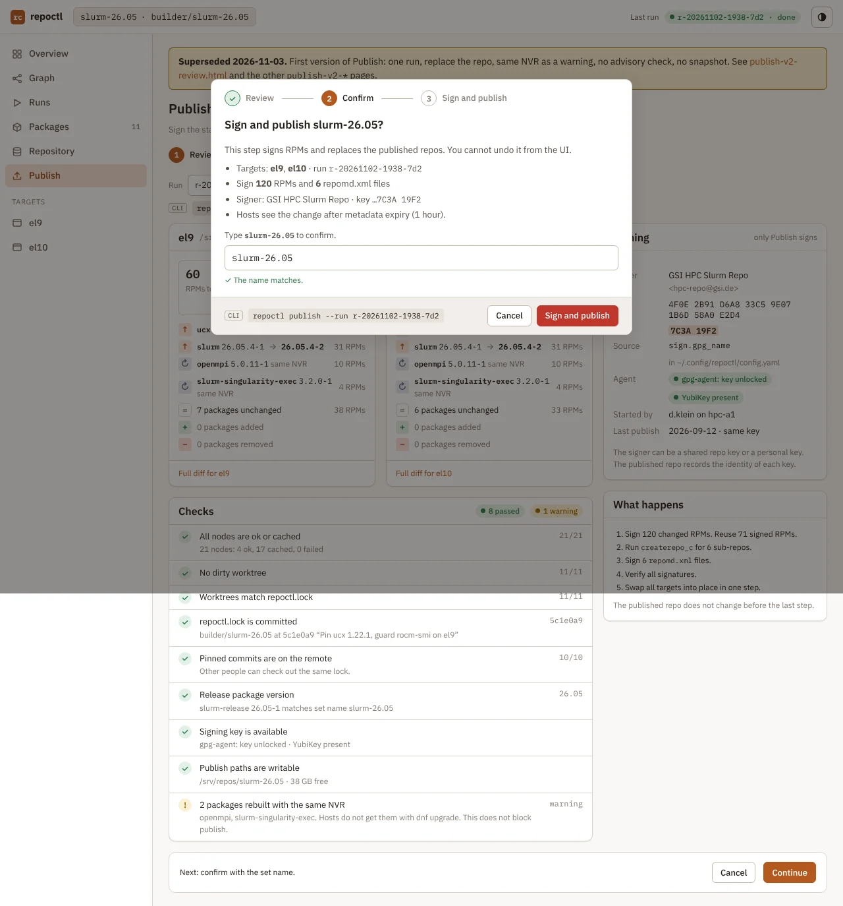
Step 2, Confirm, light. CLI: repoctl publish --run r-20261102-1938-7d2 asks the same question on a TTY.
A modal <dialog> repeats the facts that matter: targets, run, number of RPMs and repomd files to sign, signer key, and the delay until hosts see the change (from metadata_expire of the release package). The user must type the set name. “Sign and publish” stays disabled until the text matches. The server checks the name again, with the CSRF token and the run id. The button uses the failed color because the step changes shared state.
Order: for each target, sign RPMs → createrepo_c for 3 sub-repos → sign 3 repomd.xml → verify. Then one atomic swap for all targets. Signing is serial, because one smartcard signs one file at a time. Each line has a progress bar and a time. The list is an SSE target (sse-swap="publish-step"). The event log tail shows the last lines. Cancel works until the swap starts. After a cancel, the published repo does not change.
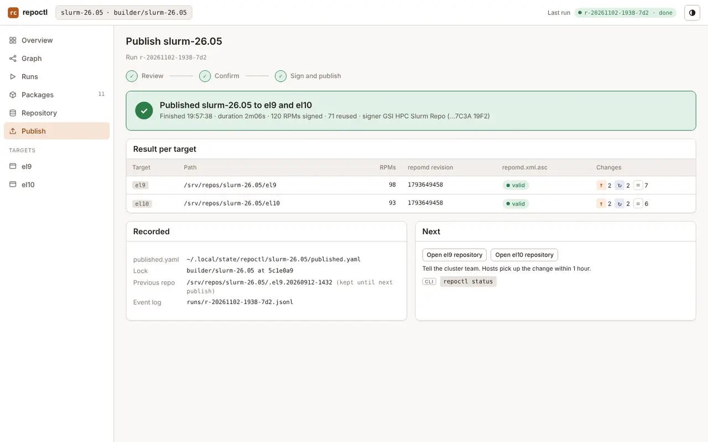
Step 3, result, light.
The result page shows the time, the duration, signed and reused counts, the signer, and per target the path, RPM count, new repomd revision, signature status and change counts. It names the files that repoctl wrote (published.yaml, event log) and the kept previous repo directory.
Blocked state
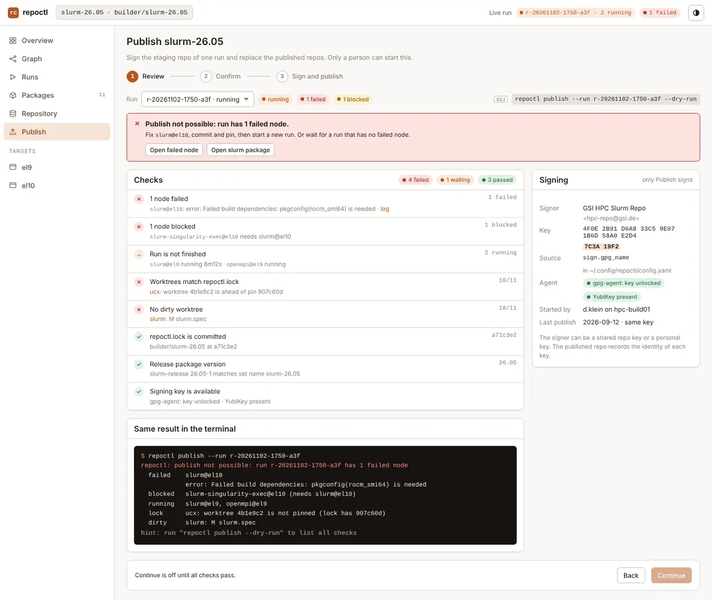
Blocked, light: “Publish not possible: run has 1 failed node”.
For run r-20261102-1750-a3f the page shows an error banner with the first reason as its title and links to the failed node and the package. The checks list shows every reason: 1 failed node, 1 blocked node, run not finished, ucx not pinned, slurm dirty. A terminal box shows the same refusal from repoctl publish. Continue is disabled. The UI does not offer a partial publish.
5. Signer identity (multi-key)
The signing design is still open. A set can use one shared repo key or a personal key per person. The UI stays neutral:
Every place that shows a signature shows a Signer value: the key uid name and the last 8 hex digits, for example “GSI HPC Slurm Repo · …7C3A 19F2” or “d.klein (key …19F2)”. The UI never says “the repo key”.
The published RPM table has a Signer column and a signer filter. The Repository page has a “Signers in this repo” card with a count per key.
The publish signing card shows the key that will sign, and compares it with the key of the last publish (“same key” or “other key than last publish”).
Reuse of signed RPMs is allowed only when the node key and the signer key are both unchanged. With another signer key, publish signs all RPMs again.
Interaction and accessibility notes
All pages render on the server (html/template). htmx swaps fragments. No page needs JavaScript beyond htmx and its SSE extension.
State is never shown by color alone: pills have text, diff rows have symbols and aria-label, check icons have ✓ ✗ ! ….
Status colors come only from the base state tokens. Upstream “update available” and worktree “ahead/dirty” use the blocked (amber) tokens. “Frozen” uses the cached tokens.
Below 760 px, tables with class cardify become cards. The publish confirm dialog is limited to the viewport width.
Assumptions
Run r-20261102-1938-7d2 (invented) is the publish happy path: Dennis committed the slurm el10 guard (slurm becomes 26.05.4-2), pinned ucx and slurm, and committed the lock at builder 5c1e0a9. 21 nodes: 4 ok (slurm, slurm-singularity-exec on 2 targets), 17 cached. ui-run and cli-term may reuse it.
Builds use the worktree HEAD (committed files only, never uncommitted changes). The node key uses the commit, so a later pin does not change the key. Publish requires worktree = lock, a committed lock, and pinned commits on the remote.
Staging is complete: cached nodes are linked into the staging repo of the run. Staging RPMs are unsigned. Publish signs.
Signed RPM reuse: publish reuses signed RPMs from the published repo when the node key (from published.yaml) and the signer key are unchanged. Sample counts: el9 60 to sign, 38 reused, 98 total; el10 60, 33, 93.
Publish replaces the repo content with the staging content (no accumulation of old versions, unlike today’s createrepo --update). The previous repo directory stays as .<target>.<timestamp> until the next publish.
One atomic swap for all targets at the end. Cancel is possible until the swap.
Publish events go into the event log of the run (runs/<run>.jsonl, span publish).
Published repo: revision 1789223527 (2026-09-12 14:32 UTC) by run r-20260912-1405-e19; publish path /srv/repos/slurm-26.05/<target>; sub-repo counts el9: 46 / 11 / 41.
Full fingerprint shown as 4F0E 2B91 D6A8 33C5 9E07 1B6D 58A0 E2D4 7C3A 19F2 (only the last 8 digits come from the brief).
A command repoctl show <dir> --json feeds the package detail page (named in the earlier design report; cli-ref must confirm).
SSE event names: run-indicator, node-<dir>-<target>, node-done, worktree, publish-step. The contract area must confirm them.
The topbar run indicator has three forms: live run (running and failed counts), last run (done), and publish in progress.
Open questions
Same-NVR rebuilds. A dependency-only rebuild keeps its NVR, so hosts do not upgrade. Should repoctl warn only (current mockup), or bump the release (for example an rpmautospec bump commit)?
Retention. Should publish keep N older versions per package for downgrade, as today’s repos do? If yes, the diff needs a “pruned” state.
Partial publish. Should a person be able to publish one target (el9) when another target has a failed node? The mockup says no.
Notes editing. The UI writes repoctl.yaml but does not commit. Is a UI write to the set config acceptable, or should notes be read-only in the UI?
Pin of an unpushed commit. Warn only (mockup), or refuse in repoctl pin?
Rollback. The previous repo directory is kept. Do we want a repoctl publish --rollback and a button on the result page?
Signer policy. With personal keys, must the release package ship all allowed public keys? Should publish refuse a key that is not in the release package?
Web UI: plan, advisories and rebuilds (build model v2)
This section updates the Graph and Plan pages for the build model in 03-build-state.html (sections 3, 4, 7, 9). The build identity is the package commit plus the target. repoctl does not rebuild dependents. A rebuild is an empty commit that repoctl rebuild <dir> --reason "…" makes. Dependency, upstream and mock changes give deterministic advisories. The person decides. The old pages (section ui-graph) stay for reference. Their dep-key reasons and the nvr.reused warning are replaced by this section.
Sources: ui-graph/gen-v2.js (it takes the top bar and sidebar from ui-shell/overview.html), ui-graph/graph-v2-base.css, ui-graph/graph-v2.css, ui-graph/shot-v2.js. The pages link repoctl-base.css, then ui-shell/base-fixes.css and ui-shell/shell.css.
Story under the new model
Dennis pins ucx 4b1e9c2 ("Bump to 1.22.1"). The plan builds ucx@el9 and ucx@el10 (reason commit-changed). The other 19 nodes are current.
Run r-20261102-1750-a3f has 2 nodes. At the end of step rpm, the soname check compares the new ucx RPMs with the published ucx-1.22.0-2. libucp.so.0, libuct.so.0 and libucs.so.0 do not change. Thus slurm and openmpi need no rebuild.
The plan check also finds buildroot.drift for pmix and prrte (hwloc-devel 2.4.1 → 2.11.2 in EPEL 9), and upstream.release for slurm (26.05.5).
Plan actions and reasons
Action
Pill
Meaning
build
.pill.act-build (shell)
The commit of this package is not in the manifest of the target repo, and no unpublished staging has it.
current
.pill.st-cached, text "current"
The commit is in the published repo of the target (repo manifest).
staged
.pill.st-ok, text "staged"
An earlier, unpublished run built this commit with the same target config. The plan reuses its staging. A failed run does not build its good nodes again.
skip
.pill.st-skip
Excluded by the package or target selection.
Reasons of build: commit-changed, rebuild (the new commit is an empty "Rebuild: …" commit), new-package, new-target, forced. The reason chip uses .code.rsn (copper outline). The plan shows the 19 current nodes in one collapsed row per target, with node chips. Only rows with an action other than current are expanded.
1. Plan page
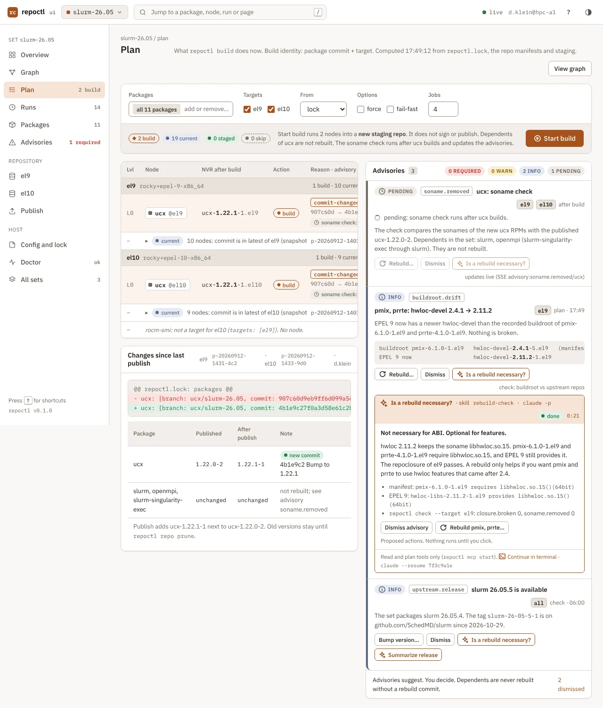
Plan before the run (17:49), light. The soname advisory is pending. The agent result for buildroot.drift is open.
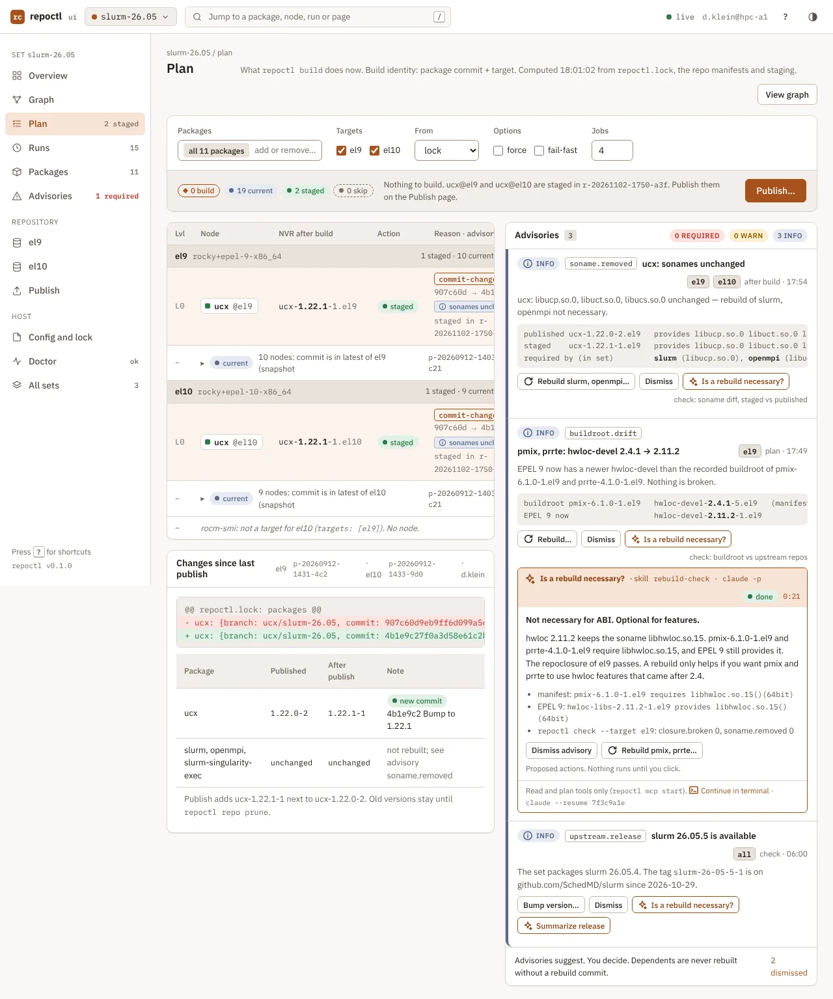
Plan after the run (18:01), light. ucx is staged. The soname advisory has its result. The primary button changes to Publish….
Form: packages, targets, from (lock or worktree), force, fail-fast, jobs. The tooltip of force says that publish refuses a reused NVR (nvr.reused). This problem now occurs only with --force.
Start box: counts per action and one sentence. Before the run: "Start build runs 2 nodes into a new staging repo. It does not sign or publish. Dependents of ucx are not rebuilt." Start build opens the shell build dialog (/s/<set>/-/dialog/build). With 0 build and some staged nodes, the button is Publish….
Table: per target group. Reason and advisory share one column: reason chip, commits, and the advisory mark of the node (soname check: pending → sonames unchanged).
Changes since last publish: lock diff, then the RPM change. Dependents show "unchanged · not rebuilt; see advisory". Publish adds ucx-1.22.1-1 next to ucx-1.22.0-2. Old versions stay until repoctl repo prune.
Advisories panel
The panel is one region (section#advisories, SSE event advisories). Each advisory is an article.adv with its own event advisory:<id>. The id is <code>/<subject>, for example soname.removed/ucx or buildroot.drift/pmix@el9.
Part
Content
Left bar and level badge
required (failed tokens), warn (blocked tokens), info (cached tokens, as .banner.info in shell.css), pending (queued tokens). The panel head counts each level.
Code chip and title
The advisory code from the contract, then one line in plain words.
Targets and source
Target badges, then where the check ran (plan, after build, check) and when.
Body and facts
One or two sentences, then the evidence in mono: recorded buildroot vs repo, provided sonames old vs new, who requires them.
Actions
Rebuild… (opens the rebuild dialog with the suggested packages), Dismiss, and the agent button Is a rebuild necessary?. upstream.release has Bump version… in place of Rebuild… and also Summarize release (skill package-updates).
Pending state
"pending: soname check runs after ucx builds." The actions are disabled. When the check finishes, the server sends advisory:soname.removed/ucx with the result.
A soname check with no removed soname shows as an info entry ("ucx: libucp.so.0, libuct.so.0, libucs.so.0 unchanged — rebuild of slurm, openmpi not necessary"). The person thus sees that the check ran. Dismiss stores the advisory id, user and time. A dismissed advisory comes back when its facts change. The panel foot links to the dismissed list.
Agent integration
The button sends POST /s/<set>/-/actions/agent with skill and advisory (CSRF header from the shell). repoctl starts the user's agent (agent: {command: claude, args: […]}) as claude -p with the fixed skill and repoctl mcp start (read and plan tools only).
The answer is an empty div.agent with sse-swap="agent:<session>". The server streams the result into it: verdict, explanation, evidence list, proposed actions.
Proposed actions are normal buttons (Dismiss advisory, Rebuild pmix, prrte…). Nothing runs until the person clicks. Text: "Proposed actions. Nothing runs until you click."
The foot shows Continue in terminal with claude --resume <session>. The UI does not copy the chat.
With no agent configured, the agent buttons are not rendered.
2. Rebuild dialog
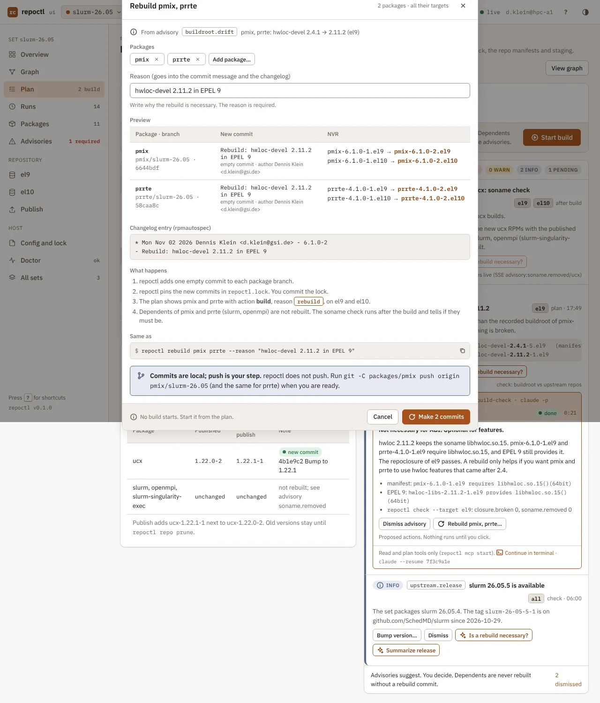
Rebuild dialog for pmix and prrte, light, over the plan page.
Route: GET /s/<set>/-/dialog/rebuild?dir=pmix&dir=prrte&advisory=buildroot.drift/pmix@el9 into #modal. Submit: POST /s/<set>/-/actions/rebuild.
The reason is required (at least 8 characters). The default text comes from the advisory: "hwloc-devel 2.11.2 in EPEL 9".
The preview updates on input (hx-trigger="input changed delay:200ms"). It shows per package: branch and current commit, the empty commit message "Rebuild: <reason>", and the NVR change on each target (pmix-6.1.0-1.el9 → pmix-6.1.0-2.el9). It also shows the changelog entry that rpmautospec makes.
"What happens": empty commit per branch, pin in repoctl.lock (the person commits the lock), plan shows build with reason rebuild on all targets of the package, dependents are not rebuilt.
CLI equivalent with copy: repoctl rebuild pmix prrte --reason "hwloc-devel 2.11.2 in EPEL 9".
Banner: "Commits are local; push is your step." The banner gives the git push command. repoctl never pushes.
Footer: "No build starts. Start it from the plan." Buttons Cancel and Make 2 commits. After the commits, a toast confirms them and the plan region refreshes.
3. Graph el9 during the run
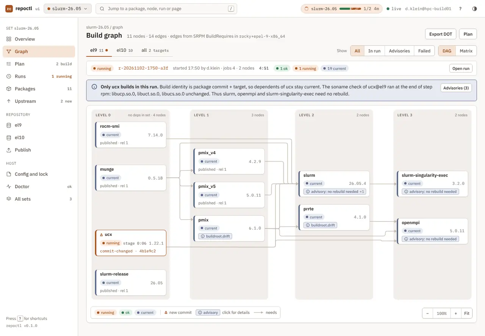
Graph el9, light. Only ucx is in the run. The dependents show the advisory marker.
Cards have three rows (212 × 78 px): name; state pill, step, version; note. The note is the reason of a node in the run (commit-changed · 4b1e9c2), an advisory marker, or "published · rel N".
Advisory marker: .adv-mark.info|warn|required with the short result ("advisory: no rebuild needed", "buildroot.drift"). "+1" means more advisories. The tooltip names them. A click opens the node drawer at its advisories.
slurm-singularity-exec gets the marker through slurm: the soname result covers the closure of dependents.
Nodes outside the run show current. Edges are plain "needs" arrows. A dependency in a run does not make its dependents wait, so the dashed "pending" edge style of v1 is not used.
The filter gets In run and Advisories. A banner above the canvas explains why only ucx builds and links to the advisories.
Layout: same algorithm as in section ui-graph, with the card height as a parameter.
SSE and routes (additions)
Event or route
Use
advisories
Whole panel (counts changed, advisory added or removed).
advisory:<code>/<subject>
One advisory card (pending → result).
agent:<session>
Agent result panel, streamed.
node:<dir>@<target>
Card, also when only its advisory marker changes.
/s/<set>/-/dialog/rebuild, /-/actions/rebuild
Rebuild dialog and action.
/-/actions/advisory-dismiss, /-/actions/agent
Dismiss an advisory; start an agent button.
/s/<set>/advisories?dismissed=1
List of dismissed advisories.
The SSE stream is the shell stream (/s/<set>/-/events?page=plan or page=graph&target=el9) on <body>.
Assumptions
A passed soname check is an info advisory with code soname.removed and the result "unchanged". Contract: please confirm, or add a code for a passed check.
The soname check runs at the end of step rpm, before stage. The graph shows its result while ucx@el9 is in stage.
Agent skill for "Is a rebuild necessary?": rebuild-check (name invented; the state design does not name it). "Summarize release" uses package-updates.
v2 run r-20261102-1750-a3f has 2 nodes. Snapshot: 4:51 elapsed, ucx@el10 ok 4:12, ucx@el9 running (stage 0:06). Publish ids p-20260912-1431-4c2 (el9) and p-20260912-1433-9d0 (el10) are invented.
current uses the st-cached color tokens. staged uses st-ok. No new state colors.
A rebuild applies to all targets of the package, because the commit is per package.
Open questions
Should Dismiss need a short note, like the rebuild reason?
Should buildroot.drift group packages that share the same drift (pmix and prrte here), or show one advisory per node?
Can the agent run before the soname check finishes, or only on a final result (the mockup disables it)?
Web UI v2: Overview with advisories, agent buttons and the agent panel
This section updates the Overview for the new build model in 03-build-state.html. The published repo is the build state. repoctl builds only packages whose commit is not in the manifest. A change in a dependency gives an advisory and no rebuild. A rebuild is an empty commit (repoctl rebuild <dir> --reason …). The section also shows how the LLM agent fits into the UI: advisory buttons, no chat in v1. The shell, the URL scheme and the SSE rules of section ui-shell stay the same.
What changes on the Overview
Part
v1
v2
Current run
8 builds: ucx, slurm, slurm-singularity-exec, openmpi on both targets
2 builds: ucx@el9, ucx@el10 (reason commit-changed). The card shows the soname check after each node: “libucp.so.0 unchanged. No rebuild necessary.”
Needs you
Run failure, same-NVR plan problem, lock, upstream, publish age
Run failure, a pointer to required advisories, lock, publish age. The same-NVR item is gone: every build has a new NVR.
Advisories
–
New card. One row per advisory with level, code, node, text, command and actions. Upstream updates move here as upstream.release.
Matrix
Run states and cached
Plan action current (the commit is in the published repo), run states for nodes of a run, and advisory tags on the cells (closure.broken, buildroot.drift).
Last publish
Per target
Per target, plus the OCI snapshot tag. Publish adds and never deletes.
Sidebar
Upstream
Advisories (with the count of required ones) replaces Upstream. URL /s/<set>/advisories.
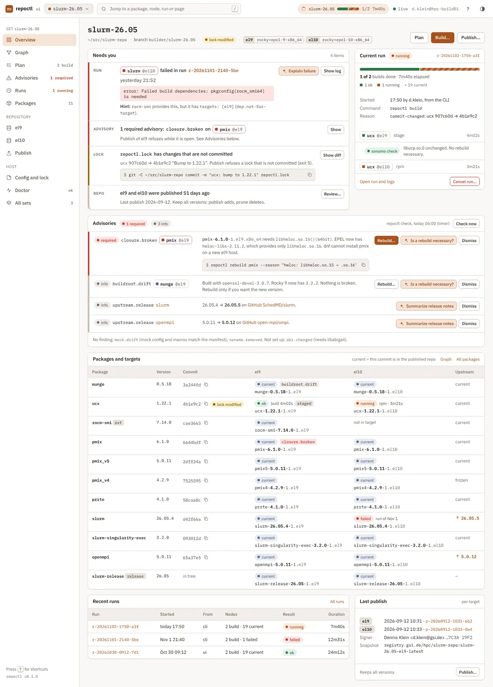
Overview v2 (light). The current run builds only ucx. slurm, openmpi and slurm-singularity-exec are current.
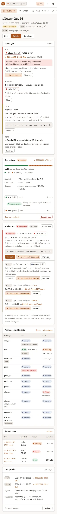
Overview v2 at 390 px. Advisory actions go under the text.
Advisories card
One row per open advisory. Order: required, then warn, then info. In each level, the order is by node.
A row has the level pill, the code, the node or package, one or two sentences, and the command that the suggestion runs. The command has a copy button.
The level pills use the state colors: required red, warn amber, info neutral. Classes: .pill.lvl-required|lvl-warn|lvl-info.
The foot lists the checks with no finding (mock.drift, soname.removed) and the checks that are not set up (abi.changed needs libabigail). Thus “no row” never means “not checked”.
The head shows when repoctl check ran last (timer or person) and has Check now (POST /s/<set>/-/actions/check).
A required advisory also gives one Needs you item. Publish of that target refuses while it is open.
Opens GET /s/<set>/-/dialog/rebuild?dir=<dir>&advisory=<id>. The dialog shows repoctl rebuild <dir> --reason "…" with the reason filled in from the advisory, and the plan that follows. The button is primary only for required.
Dismiss
all except required (see open questions)
POST /s/<set>/-/actions/dismiss. The advisory stays hidden until its inputs change (for example a newer upstream version).
Agent button. Skill rebuild-advice. Reads the advisory and the soname and ABI data.
Summarize release notes
upstream.release
Agent button. Skill package-updates.
The advisory id is <code>:<node>, for example closure.broken:pmix@el9. The card has SSE event advisories and fragment /s/<set>/-/frag/advisories. The closure.broken row uses an example scenario: no such hwloc change is known.
Agent buttons
An agent button runs a local agent with a fixed skill and fixed input. The result shows in a side panel. The agent cannot change anything. Each proposed action is a normal UI button that the person clicks.
Button
Where
Skill
Input
Explain failure
Needs you (failed node), run page, node page
triage-build
run id, node id
Is a rebuild necessary?
Advisories
rebuild-advice
advisory id
Summarize release notes
Advisories (upstream.release), package page
package-updates
package dir, upstream version
Draft version bump
Package page (ui-pkg)
bump-package
package dir, version. It stops before the commit.
Agent buttons have the class .btn-agent and a spark icon. They are always secondary. The title says which command and skill they run.
The server renders agent buttons only when the user config has agent: {command: claude, args: […]}. With no agent, the server leaves them out of the HTML. It does not show disabled buttons. The Advisories foot has one line: “Agent buttons are off. How to turn them on”.
The click is POST /s/<set>/-/agent/<task> with the input and the CSRF header. The server starts the agent and answers with the panel (#drawer).
The server runs: <agent.command> <agent.args> -p "<skill prompt>" --output-format stream-json --mcp-config <file> --allowedTools <list> in the set directory. The MCP config names repoctl mcp start with read and plan tools only. The allowed list is the repoctl read and plan tools plus Read and Grep. Edit, Bash, repoctl_build and repoctl_rebuild are not in the list.
repoctl reads the stream: tool calls go to “Tools used”, text goes to the result sections. The panel gets the updates through the SSE event agent:<id>. The page adds &agent=<id> to its SSE URL.
The result is kept in $XDG_STATE_HOME/repoctl/<set>/agent/<id>.json (agent id like a-20261102-1812-7c1). Any page with ?agent=<id> opens the panel again.
Stop sends POST /s/<set>/-/agent/<id>/stop. The server sends SIGINT to the agent process.
One agent runs per set at a time. A second click shows the running panel.
Agent panel
The panel is a side drawer on the right, 600 px wide, under the top bar. It does not block the page. It has four parts:
Header: task, node chip, close. State (running with time and Stop, or done with the duration), skill, agent command, start time and input run, tool policy (“read and plan only”).
Tools used: each tool call with a short argument. A spinner marks the call that runs now.
Result: Cause, Evidence (log and file lines; each line links to the log viewer or the file at that line), Proposed change (a diff; never applied by repoctl), Proposed actions (buttons), Continue in terminal (claude --resume <session> in the set directory, with copy).
Foot: “Suggestions only. repoctl changes nothing until you click.”
Explain failure on slurm@el10, running (light). Text arrives over SSE.Done (light). Proposed actions are normal buttons.
Proposed actions in the example:
Open package opens the spec tab of slurm.
Copy diff copies the diff. The person applies it in the package worktree.
Rebuild after fix… is off until the slurm branch has a new commit. The server watches the worktree HEAD and turns the button on over SSE. The button then pins the commit and opens the build dialog. A new commit builds slurm on el9 and el10 with release 2.
The agent gives two fixes when it finds two. Fix A changes the spec. Fix B uses the ROCm repo that the el10 target already has. The person picks one.
No agent configured
No agent (light). The card has the same layout and no agent buttons.
Accessibility of the panel
The drawer is role="complementary" with aria-labelledby on its heading. When it opens, focus goes to the heading. Esc closes it and returns focus to the button.
While the agent runs, the result has aria-busy="true". Screen readers announce only “Agent done” or “Agent stopped” (polite status), not each text chunk.
The blinking caret and the spinner stop with prefers-reduced-motion.
Evidence and diff use the log colors of the base CSS (dark block in both themes).
Below 760 px the drawer covers the full screen.
New endpoints and events
Endpoint or event
Use
/s/<set>/advisories
Page with all advisories, also the dismissed ones (filter).
GET /s/<set>/-/frag/advisories, SSE advisories
The Advisories card.
POST /s/<set>/-/actions/check, …/actions/dismiss, …/actions/rebuild
Run repoctl check; hide an advisory; make the rebuild commit, pin and plan.
GET /s/<set>/-/dialog/rebuild?dir=&advisory=
Rebuild dialog with the command.
POST /s/<set>/-/agent/<task>, POST …/agent/<id>/stop
Start or stop an agent. Tasks: explain-failure, rebuild-advice, release-notes, draft-bump.
The slurm@el10 failure comes from the earlier run r-20261101-2140-5be (yesterday 21:40). The current run r-20261102-1750-a3f builds only ucx. Thus slurm@el9 is current and slurm@el10 shows “failed”.
The plan action current uses the colors of cached (class .st-current). Advisory levels use .lvl-* with state colors. No new colors.
The advisory id is <code>:<node> (or <code>:<dir> for package-level codes). The contract must give it.
A skill rebuild-advice exists for “Is a rebuild necessary?”. The state design names only its input.
v1 reads the agent output in the claude stream-json format. The session id for “Continue in terminal” comes from that stream.
The MCP server has a read-and-plan mode for the agent (for example repoctl mcp start --read-only), so repoctl_rebuild is not in the tool list.
Open questions
The real slurm.spec line 84 asks for rocm-smi-devel. The story error says pkgconfig(rocm_smi64) is needed. mock names the BuildRequires as written in the spec. Change the story error to rocm-smi-devel is needed?
Can a person dismiss a required advisory, or only override it at publish (--accept-advisory <code>)? The mockup has Dismiss on all rows.
Must agent buttons also work with an agent other than claude (another stream format), or is claude the only v1 agent?
Is one agent per set at a time enough, or does the team want parallel agents (for example release notes of two packages)?